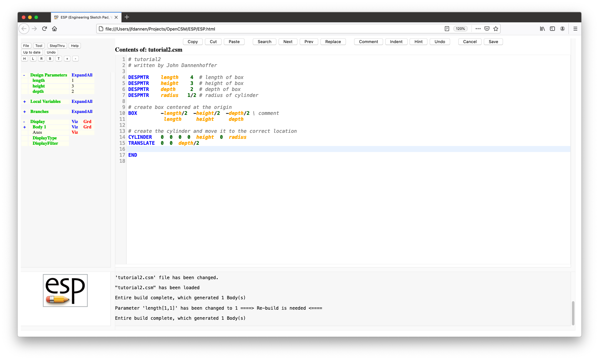
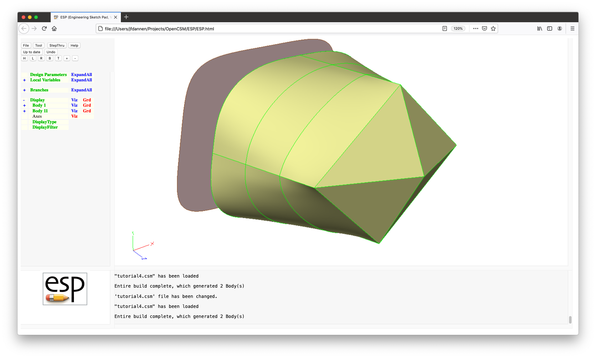
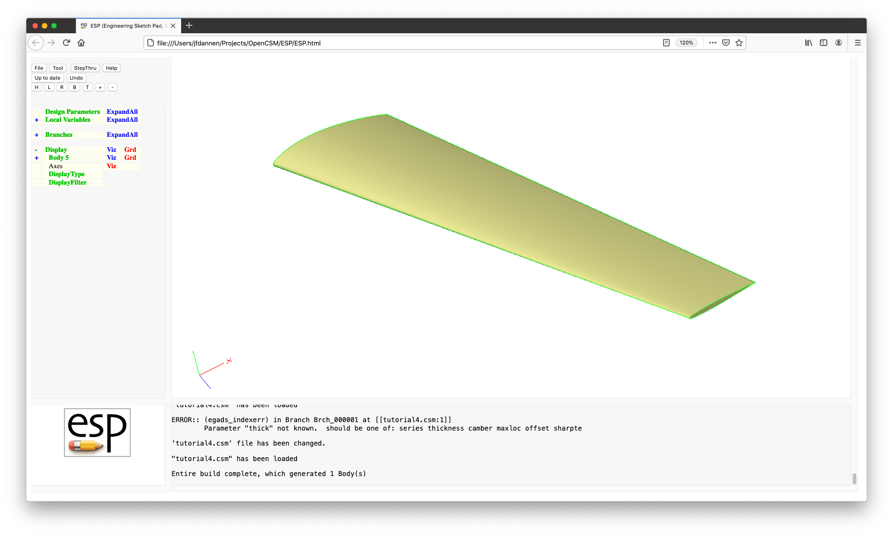
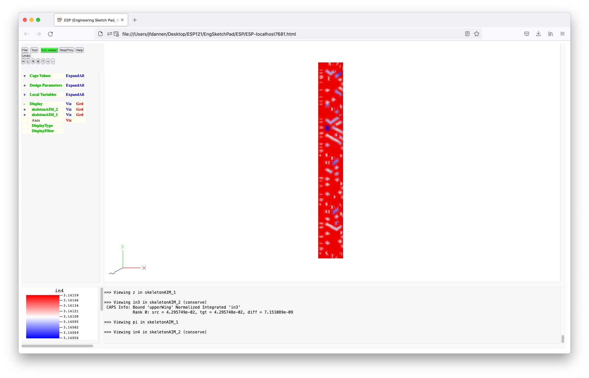
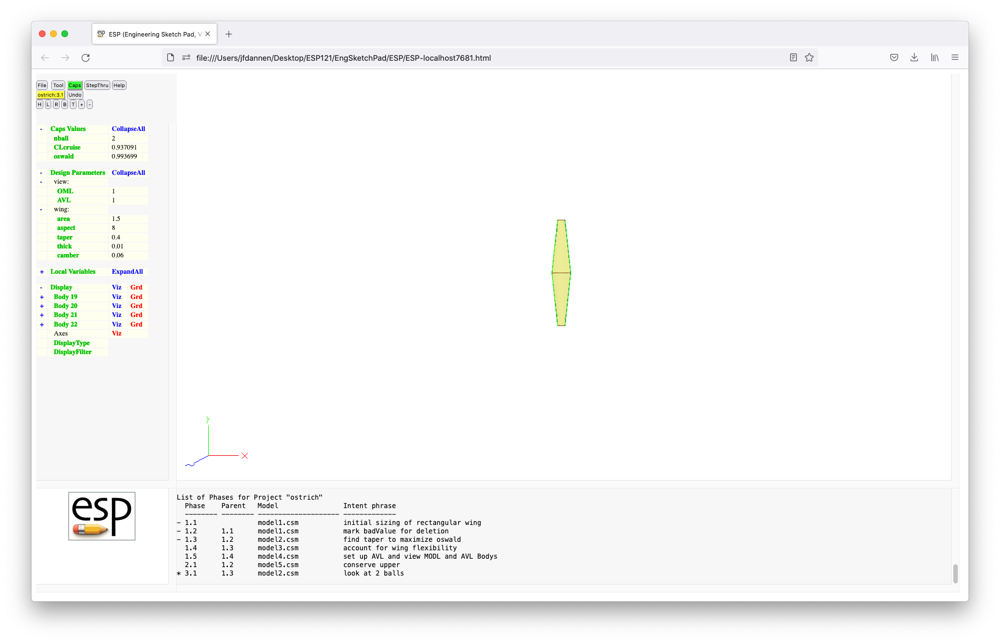

2.1 First tutorial: ESP user interface
2.2 Second tutorial: Base ESP model
2.3 Third tutorial: Using the sketcher and adding spokes
2.4 Fourth tutorial: RULEs, BLENDs, and error checking
2.5 Fifth tutorial: Multi-models
2.6 Sixth tutorial: Integrated Design Environment
2.7 First legacy tutorial: Basic usage
2.8 Second legacy tutorial: Sketcher
2.9 Third legacy tutorial: Aircraft example
5.0 Format of the .csm and .udc Files
5.5 User-defined Primitives/Functions shipped with OpenCSM
5.6 User-defined Components shipped with OpenCSM
7.0 Frequently Asked Questions
8.1 New/extended features in v1.21
8.3 New/extended features in v1.20
8.5 New/extended features in v1.19
8.7 New/extended features in v1.18
8.9 New/extended features in v1.17
8.11 New/extended features in v1.16
8.13 New/extended features in v1.15
8.15 New/extended features in v1.14
8.17 New/extended features in v1.13
8.19 New/extended features in v1.12
8.21 New/extended features in v1.11
8.23 New/extended features in v1.10
8.25 New/extended features in v1.09
8.27 New/extended features in v1.08
8.29 New/extended features in v1.07
8.31 New/extended features in v1.06
10.0 Bug Reports and Other Feedback
The Engineering Sketch Pad (ESP) is a
browser-based program for creating, editing, and generating
constructive solid models for use in the multi-disciplinary
analysis and optimization of engineered systems. It is built
using a client-server architecture.
The server consists of a back-end program
(serveESP) that performs the majority of the
computational work; the server has been designed to work on a
variety of compute platforms, including UNIX, LINUX, OSX, and
Windows. As will be described below, the user
of ESP typically starts a session by starting the
server.
The client, which is built within a web browser, provides the graphical user interface with which most users will provide inputs and receive outputs. The supported browsers include recent versions of FireFox, Google Chrome, Safari, and Edge. (Internet Explorer is not supported because of a bug within the WebSockets layer provided by the browser).
ESP is technically just the user-interface to a
system of software packages, including:
WebViewer is a package for generating complex
three-dimensional representations of geometry within a web
Browser. It consists of software that is incorporated
into the server as well as a series of JavaScript
functions that operate in the web Browser via
WebGL.OpenCSM is a feature-based, associative,
parametric solid modeler that supports manifold solids
(the typical output) and non-manifold sheets and wires
(such as may be needed for representing wake sheets and
antennae). The inputs to OpenCSM is an
ASCII, human-readable .csm file, in which
the model is described by a series of design Parameters
and a Feature Tree (or build prescription). The Feature
Tree consists of a user-specified series of standard
primitives, Boolean operators, and transformations.
OpenCSM also includes the ability for users
to define their own user-defined primitives (via compiled
code) and user-defined components (via scripts). The
persistence of Attributes, even through regenerations,
directly supports the use of OpenCSM within
multi-fidelity and multi-disciplinary analysis and
design. OpenCSM also provides the ability for
a user to compute the geometric sensitivity of a
configuration with respect to (any combination of) the
design Parameters, often without regeneration; these
sensitivities can then be used by a grid-generator so that
the sensitivity of the grid with respect to the design
Parameters can be computed.EGADS, the Electronic Geometry Aircraft
Design System, is an open-source geometry interface
to OpenCASCADE, in which the functionality
in OpenCASCADE that is needed for
construction of typical applications is incorporated into
about 70 C-functions. These functions support a "bottom
up" approach to configuration construction, in which the
boundary representation (BRep) is built up from nodes, to
curves, to edges, to loops, to surfaces, to faces, to
shells, to bodies. EGADS also supports a
"top-down" approach, which directly maps
to OpenCSM's Feature
Tree. EGADS provides persistent user-defined
Attributes on all topological entities.OpenCASCADE is a large, openly-available
geometry engine on which the rest of the system is
built. OpenCASCADE is the only part of
the ESP system that needs to be acquired from
an outside source. See the README.txt file
associated with the ESP distribution for
details.All the parts of the ESP system are distributed as
source code that is licensed via the LGPL 2.1 license. See
the Copyright section below for details.
In most cases, a user will start with a configuration that is
described in a .csm file and then modify it and/or
build it via OpenCSM's various commands.
For a convenient Quick Reference,
see $ESP_ROOT/doc/ESP_QuickReference.pdf, which is
a two-page summary of the various .csm commands,
built-in functions, dot-suffixes, and the ESP
character set.
ESP ships with a assortment of
.csm files, as shown below. Feel free to open them
in your favorite text editor to see how they were constructed.


In addition, several students have created models of a variety
of configurations. The .csm files for these cases
are not included in the distribution since they have not been
cleaned up; nevertheless, the models are very impressive.


Back to Table of Contents
There are six (new) Tutorials that will help you get
acquainted with the Engineering Sketch Pad (ESP).
The first uses a fairly sophisticated multi-model to help you
get familiar with the ESP browser-based graphical
user interface (GUI). Then in Tutorials 2 through 5, the
configuration that was used in Tutorial 1 will be built up,
step by step.
These Tutorials cover many of ESP's features, but
not all of them. They follow current ESP best
practices, in which a configuration is built by using a
scripting language; most users find this mode of using
ESP to be more flexible and faster than the
GUI-based mode used by traditional CAD systems. But, if you
favor the traditional CAD system look-and-feel, check out the
legacy Tutorials (starting with First legacy
tutorial: Basic usage)
For a more extensive introduction to ESP, see
the ESP training slides (which are available
at acdl.mit.edu/ESP/ESPtraining2021.tgz). In
addition, detailed descriptions of all commands are included
later in this help document Valid CSM
statements.
Before we begin, a few notes:
ESP system; multi-word terms
are often given in camel-case, such as MessageWindow;ESP Commands are
shown UPPERCASE; andtypeface like this.ESP user interfaceThis first Tutorial is designed to help you get familiar with
the ESP browser-based user interface.
ESPThere are two main ways of starting ESP.
Technique 1. Click the ESP121 icon on your
desktop. This will open up a terminal window in which all the
environment variables needed to run ESP are
defined. After the window opens, you can issue a command such
as:
serveESP [options] [filename[.csm]]
where [options] is a list of one or more
command-line options, and filename (with or
without the .csm extension) is the (optional)
model file. The [options] gives you ability to do
things such as building the model in batch mode (i.e., no user
interface) with the -batch option, or changing the
port number used by the server with the -port
option. Try -help to get a full list of the
available [options].
To start the first Tutorial, simply enter:
serveESP ../data/tutorial1 (on MAC or LINUX)
or
serveESP ..\data\tutorial1 (on Windows)
After serveESP builds the configuration, it will automatically
open up a browser containing the ESP user
interface. When ESP starts, it may first ask you
for the hostname and port associated with the server (which was
started when you typed serveESP).
Most often you will choose the default
Localhost:7681. Note that a new feature
in ESP121 allows more than one user to attach to the
same session, allowing them to work collaboratively on the same
model at the same time. This new collaboration feature is not
explicitly covered in these Tutorials.
Technique 2. Click the runESP121 icon on your
desktop, which will open up (in the background) a terminal
window and then a browser containing the ESP user
interface. The first thing it may ask you for is the hostname
and port associated with the server (that is actually running
in the terminal window), as shown above. Most often you will
choose the default Localhost:7681. Note that a
new feature in ESP allows more than one user to
attach to the same session, allowing them to work
collaboratively on the same model at the same time. This new
collaboration feature is not explicitly covered in these
Tutorials.
When ESP starts using technique 2, it will not
contain a model. You will have to manually load the model by
pressing the File button (near the top left) and then choosing
Open. You will be asked for the name of the file, at
which time you should answer:
../data/tutorial1 (on MAC or Linux)
or
..\data\tutorial1 (in Windows)
After you have chosen either technique 1 or 2, it is time to
explore the ESP user interface. You will see that
the window is broken into four frames:
ESP. It contains command buttons and a
tree-like structure that allows you to add/edit/examine
the DesignParameters, examine the LocalVariables,
add/edit/examine/delete the Branches in the FeatureTree,
and control the visibility of the Display. A full
description of the TreeWindow in contained below;ESP logo. Other uses
for the KeyWindow is for textual status (such as when you
are using the sketcher) or an annotated spectrum (when you
are showing sensitivities); andESP is doing. The background color of
the MessageWindow can be:
ESP authors so that the bug can be
fixed.The first thing to do is to play with the image in the GraphicsWindow. This is done with the mouse in the following ways:
When using the mouse, it is possible to enter FlyingMode, in which the view continually changes until the mouse button is released. FlyingMode is particularly useful when one needs to translate a long distance. Toggling FlyingMode is done by pressing the ! key in the GraphicsWindow.
At any time, a user might want to save a view for later use in the browser session. This is done by pressing the > key in the GraphicsWindow; the saved view can be retrieved (multiple times) by pressing the < key.
You can also save a view into a file (for use in a
later ESP session) with the
<Ctrl->> or . keys, which will prompt
you for a filename. You can read a view file with
the <Ctrl-<> or , keys, which will
prompt you for the view filename. If the file does not exist,
nothing will happen.
The default (home) view can be obtained by pressing either the <Home> key or the H button near the top of the TreeWindow. (The home view is one in which the x-coordinate increases from left to right and the y-coordinate increases from bottom to top.) One can also get the top view by pressing the T button, the bottom view by pressing the B button, the left side view by pressing the L button, or the right side view by pressing the R button.
The function of the arrow keys on the keyboard depends on whether FlyingMode is active or not. For example, if FlyingMode is not active (the default), pressing the <Left> key causes the object to rotate to the left by 30 degrees; if FlyingMode is active (because the ! key was pressed), then pressing the <Left> key causes the object on the screen to translate to the left. If the Shift is held while the <Left> key is pressed, the increments are 5 degrees and the translations are also smaller.
The <PgUp> key or the + button can be used to zoom in and the <PgDn> key or the - button can be used to zoom out. (Recall that the mouse wheel can also be used.) The behavior of these keys/buttons does not depend on the current FlyingMode.
To re-center the image at a given point and simultaneously reset the point about which mouse rotations will occur, point to any object in the GraphicsWindow and press * or 8; the image will be re-centered and a message will be posted in the MessageWindow.
To determine the identity of any object in the GraphicsWindow, simply put your cursor on the object and press ^ or 6; a summary of the identified object is shown in the MessageWindow. (Note that if the cursor is not exactly over any object, the message will only be posted once the mouse passes over a graphic object.)
To determine the approximate coordinates of any location in the GraphicsWindow, simply put your cursor on the location and press @ or 2; a little red square is placed at the location and the approximate coordinates of the location are shown in the MessageWindow. Also posted is the distance from the previous query. Note that the little red square is cleared if the distance from the previous query is zero (i.e., the @ or 2 option was selected twice at the same screen location).
To add an Attribute to any Face or Edge, simply put your cursor on the object in the GraphicsWindow and press A (upper case A). You will then be asked for the name of the new Attribute as well of its value, which can either be a string (if is starts with a $) or a semi-colon separated list of expressions.
Lastly, to get help on the commands that are available in the GraphicsWindow, press ? and a short listing will be given in the MessageWindow.
Now let's look at the Display part of the TreeWindow. By default, "Display" is expanded and you can see that you have Bodys named "SheetModel", "SolidModel", and "Spindle". Expand the listing for "SolidModel" by pressing the + to the left of "SolidModel" and you will see entries for Faces, Edges, and Nodes. To the right of "Faces" (below "SolidModel") you will see three items:
Notice also that there is a + to the left of "Faces", which indicates that you can interact with the object on a Face-by-Face basis. The basic rules here are:
When you have a configuration with lots of Bodys, it is sometimes useful to alter the visibility of all Faces, Edges, or Nodes (in all Bodys). This can be done by pressing on the word Display in the KeyWindow.
To see this working, press Viz to the right of
"Display", which will turn everything off. Pressing it again,
will now turn everything on, including little black squares at
every Node in all Bodys. Sometimes this is useful, but other
times it is annoying. So pressing on Display will bring
up a pop-up; if you now choose -1 (hide all Nodes)
and press Enter, the Nodes will be removed from the
graphical image.
Now it is time to look at the buttons at the top of the TreeWindow. The first one to look at is the File button, which posts a menu with the following options:
The second button on the top of the TreeWindow is
the Tool button, which gives you access to the various
tools within ESP. In version 1.21, there are only
five options here:
CAPS, which will be covered in Tutorial
6; ESP.
The StepThru button allows you to view the steps used to build a model. When you first press this button, the first Body created during the construction process is shown. The legend on the button changes to NextStep, which then gives you the option of seeing the next step in the build. This button can be pressed repeatedly to see the whole build process. If you want to leave StepThru mode, simply press CancelStepThru at the bottom of the TreeWindow. Also while in StepThru mode, you can use the following key-presses in the GraphicsWindow:
The Help button bring up the help document (which you are currently reading).
The second row of button contains two (or three) buttons.
The first button can have a variety of labels:
The second button in the second row, Undo, allows you to un-do the last change that you made using the GUI. Note that not all actions can be un-done.
The third button in the second row may, or may not, be visible. (In this Tutorial, it is not visible.) It is used when there is more than one user connected to the same hostname and port at the same time. In this case, the button will be visible with the legend Collab. The color of the button give you information about your collaboration status:
ESP feature.
The third row of buttons allows you to set the home, left, right, bottom, or top view and allow you to zoom in and out. These were described above.
Now it is time to start looking at the tree itself. At the top level of the tree are four groups:
If you click the + to the left of "Design Parameters", a list of the current DesignParameters is shown as well as the name of all DesignParameter groups (described later). The groups can have sub-groups, etc, so sometimes it is convenient to see everything at once. This can be done by pressing ExpandAll to the right of "Design Parameters". (When you have done this, the legend will change to CollapseAll which will have the opposite effect.
Now let us start looking at what happens when we change a DesignParameter. We are going to start by pressing makeSpindle (which, as you will see in Tutorial 4 allows us to make the spindle in various ways.) When you have done this, the GraphicsWindow will change to a form that gives you all the information associated with this DesignParameter.
Across the top of the form is a series of buttons:
Another thing you may notice is that the first column in the DesignParameter tree is changed to magenta for the DesignParameter that is being edited. Also, for any Branch that uses the DesignParameter, the first column in the Branches tree has a yellow background. You may have to press ExpandAll to the right of "Branches" to see the Branches ("Brch_000005" and "Brch_000039") that use "makeSpindle".
For now, change the value of makeSpindle
from 1 to -1", press
the <Enter> key or the OK button. Now
press Press to Re-build and you will see your new
configuration (which will only consist of the spindle).
Now press the + under "Design Parameters" and to the
left of "spindle:" in the TreeWindow, and then
press yrad; this will open up a form that allows you
to edit the multi-valued DesignParameter. As you will see
later when we build the model, "yrad" has four values. For
now, change the value in "row 1" and "column 2"
to 2, hit Enter and Press to
Re-build. You should see that the configuration has now
changed (to make the second radius much larger).

Change the value back to 0.5 and re-build.
You can also press Delete Parameter to delete a DesignParameter from the model. Be aware that doing will break the model build process if the model refers to it in any of its Branches. So we will not delete any DesignParameters in this Tutorial.
If you want to add a new DesignParameter, simply click on Design Parameters. You will be asked for the new parameter name (which must start with a letter, underscore, or colon, and be followed by up to 63 letters, digits, underscores, and colons). You will then get a form that looks like the one we have been using, except for the fact that it will contain two buttons near the top (in addition to OK and Cancel):
Now let us see how the sensitivities work. If you once again
edit the "spindle:yrad" DesignParameter, you will see that
since "spindle:yrad" is a multi-valued DesignParameter you
get a new row of entry boxes (near the bottom) in which to
enter the design velocities. So if you wanted to compute the
sensitivity of the geometry with respect to (WRT) the second
"spindle"yrad" value, enter a 1 in "row 1" and
"column 2" in the velocities table and press Compute geom
sens. The GraphicsWindow will switch back to a view of
the 3D configuration, which will be colored based upon the
sensitivity value at each point. You will also see that the
KeyWindow changed to show you a spectrum associated with the
colors in the GraphicsWindow. (red indicates that the
surface will move outward and blue indicates that the surface
will move inward). Since part of the configuration is red,
you can see that the geometry will grow outward. Note that
the geometric sensitivity tells you how the local surface
normal will change; this is generally computed exactly
in ESP by actually differentiating the build
process.
ESP has another sensitivity, namely the
tessellation sensitivity. This is an approximation of how
points will move if the DesignParameters changes. (It is only
an approximation, since we do not know how your particular
mesh generator will redistribute points on the surface when
the surface shape changes.) If you now re-edit "spindle:yrad"
and press Compute tess sens, you will get the surfaces
painted again and you will see little tufts showing the
sensitivity. If the tufts are too long, you could always
change the design velocity to a smaller value (such as 0.1)
and the spines will get shorter (which looks a lot better for
this case). By the way, blue spines are associated with
Faces and red spines are associated with Edges.
To return to a display without sensitivities, choose any DesignParameter, press Clear Design Velocities, then OK, and then Press to Re-build. Do this now.
A LocalVariable is a parameter that cannot be set before a
model is built (unlike DesignParameters, which get their
values before the model is built). Instead, it is created
and used during the build process. To understand the
difference, let us take an example. Suppose the you had a
DesignParameter called "diameter", but the operation that
creates a SPHERE takes the radius as one of its
arguments. There are a variety of ways of handling this
situation, but an obvious one is to create a LocalVariable
called "radius" and then using a SET statement
SET radius diameter/2
to set the radius to half the diameter. Clearly the "radius"
depends on the "diameter", so it cannot be directly set
outside the build process.
There are two special kinds of LocalVariables:
ESP (for example,
in CAPS). You can see the current value
(and velocity) of all OutputParameters by pressing the
word Local Variables in the TreeWindow; and@volume, which contains
the volume of the Body just built. To see all the
AtParameters, press the + to the left of
"@-parameters" for a full list; the meanings of these
are described in the Parameter
rules section in the latter
part of the help file.ExpandAll works exactly the same as it does for the DesignParameters.
In ESP, a model is built by executing the
Branches in the FeatureTree. There are several kinds of
Branches in ESP:
BOX, CYLINDER,
SPHERE, CONE,
and TORUS) based upon its arguments;UNION, INTERSECT,
and SUBTRACT Boolean operators);TRANSLATE, SCALE,
ROTATE*, and MIRROR);IFTHEN/ELSEIF/ELSE/ENDIF logic blocks and
loops with PATBEG/PATEND); andSET
LocalVariables, etc..A new Branch can be created (at the end of the FeatureTree) by pressing the word Branches in the TreeWindow.
ExpandAll works exactly the same as it does for the DesignParameters and LocalVariables. Do that now.
One can inspect, edit, or delete a Branch by pressing on the name of the Branch, which typically has a name such as "Brch_xxxxxx".
Now click on Brch_000114 and the Branch editor will appear.
At the top of the Branch editor you will see a series of buttons:
Below the button are the properties and arguments associated with the Branch. If you edit these, remember to press OK and then Press to Re-build to see the effect of the edits.
If you choose "Brch_000114", you will see that the first column is colored magenta. None of the other entries in the first column are colored, which either means that:
To get around this, change the DesignParameter "makeSpindle"
to o and Press to Re-build. Once you've
done this and re-edit "Brch_000114", the first column in the
Branches tree in the TreeWindow is colored as follows:
UNIONed (in this case "Brch_000101"
and "Brch_000113"); andUNION in "Brch_000117"),Current ESP best practice does not rely much on
editing the Branches using these features; these features are
typically used for "quick explorations" as you will see in
the Tutorials that follow.
For now, Cancel out of the Branch editor.
ESP can display the 3D configuration with
various coloring schemes. You can choose amongst them by
clicking on DisplayType:
0 to 1;0 to 1;0 and the
UpperLimit to 1 (or somthing smaller if the
tufts are too long); andWhen using any of the modes except monochrome or Erep, you will see that the KeyWindow shows you a title and a little spectrum to let you know what the various colors mean. If you click in the KeyWindow (when a spectrum is showing), you can change the values associated with the lower limit (blue) and the upper limit (red). When viewing normals, the lower KeyWindow limit will usually be zero and the upper limit can be used to adjust the lengths of the tufts. Trying these on the spindle gives you pictures like this.
For the next part of the Tutorial it is probably best to focus on the SolidBody. So, do the following:
1;
This model was constructed so that all of the Faces have an Attribute named "myPart" on it. To see this for yourself, put your cursor on any Face and press the ^ key; a description of the Face and all of its Attributes are displayed in the MessageWindow, such as:
Click on DisplayFilter and enter myPart
in the popup window. In order to see what the available
values for the "myPart" Attribute are for this model,
enter ? in the new popup; in a
popup, ESP tells you that the valid names are
"tire", "disk", "spoke", "hole", and "spindle".
Enter spoke and the Faces with that Attribute
are shown as usual, while all other Faces are shown
transparently, as in
Try changing the DisplayFilter
to myPart, hole to see the Faces
associated with the holes. You can turn the DisplayFilter
off by simply pressing Enter in one of the popups.
Closing your browser will also terminate
the ESP server.
Now that you have finished your tour of the ESP
interface, proceed on to Tutorial 2 to start building up this
configuration from scratch.
ESP modelIn the second tutorial, you will start building up a
configuration, step by step. It is assumed that you are
already familiar with the ESP browser-based
graphical user interface (GUI). If you are not, please
do Tutorial 1 first.
Begin by starting ESP by either pressing
the runESP121 icon on you desktop, or by pressing
the ESP121 icon and then typing serveESP
in the window that pops up.
In either case, if ESP asks for you hostname
and port, enter (the default) Localhost:7681.
This should bring up an empty ESP GUI.
We are going to start a new configuration, using
the ESP integrated code editor. To do that,
click on File and then choose Edit: <new
file>. The GraphicsWindow should now contain and
empty file.
Start by typing the following into the code editor:
# tutorial2
# written by ...
DESPMTR length 4 # length of box
DESPMTR height 3 # height of box
DESPMTR depth 2 # depth of box
# create box centered at the origin
BOX -length/2 -height/2 -depth/2 \ comment
length height depth
END
When you have done this, you should see:
Before we go any further, some explanation about the code (or script) editor is in order. The integrated editor has a row of buttons at the top:
.csm file and there are
no current .udc files, then the
configuration is automatically rebuiltNote that the text in the file is colored:
Now it is time to explain the script that you typed.
Lines 1 and 2:
# tutorial2
# written by ...
are comments, designated by the comment symbol
(#). It is good practice to name and sign your scripts, since
you may return to them in the future, and any information that
you include will help you.
All ESP commands begin with a CommandName (which
you expect to see in blue), followed by zero or more arguments.
The CommandName can be either all UPPERCASE or lowercase, but
not MixedCase. The arguments are separated from the
CommandName and from each other by spaces. If you want to
include a space within an argument (to increase readability),
simply put quotation marks (" ") around the
argument. ESP ignores anything after it finds a
comment "#" symbol.
Lines 4 through 6:
DESPMTR length 4 # length of box
DESPMTR height 3 # height of box
DESPMTR depth 2 # depth of box
define DesignParameters. To get the most out
of an ESP model, you should define the
configuration in terms of DesignParameters so that you can:
DESPMTR statement is:
DESPMTR
or despmtr;Lines 9 and 10:
BOX -length/2 -height/2 -depth/2 \ comment
length height depth
actually generate a BOX, which is specified by its
beginning coordinates (xbase, ybase, zbase) and its size (dx,
dy, dz). If you put you cursor on line 9 and press
the Hint button near the top of the editor, the editor
will list (just below the buttons) the format of
the BOX command. Note that on line 9 there is a
backslash (\); this is the line continuation character, which
tells ESP to ignore the backslash and everything
following it, and concatenate the following line. So, lines 9
and 10 are equivalent to:
BOX -length/2 -height/2 -depth/2 length height depth
Note that the continuation character was used here to improve
readability.
Since we wanted the BOX centered at the origin,
and since the BOX command is defined in terms of a
"base" point, we needed to specify that the "base" was half
the length, height, and depth away from the origin.
In ESP, expressions follow the same syntax as most
modern computer languages. See Expression
rules for complete details.
Line 12:
END
identifies the END of the script. This
statement is technically not needed, but I always use
it. ESP does not read (or process) anything after
the END statement, so it is a convenient way of
testing an ESP script while you are writing and
debugging it.
Now that the script is complete, it is time to run it. To do
this, press the Save button at the top of the editor.
Since this is a new file, ESP will ask for the
filename with which to save it. For this tutorial,
enter tutorial2 (or tutorial2.csm at
the prompt. This will cause the file to be saved and the model
to be automatically executed. Your GraphicsWindow will then
change to a 3D view of your configuration.
To see the effect of the DesignParameters in your model,
press length in the DesignParameters part of the
TreeWindow and change the value to 1,
hit OK and Press to Re-build. You should see a
shortened version of your box.
Now let us return to the code editor, by pressing File
(at the top of the TreeWindow), and then Edit:
tutorial2.csm. You will get a popup that says "1 change(s)
will be lost. Continue?". This is informing you that you
changed something via the TreeWindow (in this case, the length
of the BOX). Since we only did this to verify that
our DesignParameters were working okay, we can implicitly
discard this change and return to the code editor by
pressing OK.
Now we are going to add a cylinder that starts at the middle of the front Face and is vertical with a length of "height". This can be done by modifying your script to:
# tutorial2
# written by ...
DESPMTR length 4 # length of box
DESPMTR height 3 # height of box
DESPMTR depth 2 # depth of box
DESPMTR radius 1/2 # radius of cylinder
# create box centered at the origin
BOX -length/2 -height/2 -depth/2 \ comment
length height depth
# create the cylinder and move to correct location
CYLINDER 0 0 0 0 height 0 radius
TRANSLATE 0 0 depth/2
END
Your editor should look like this:

Note that we added a new line 7:
DESPMTR radius 1/2 # radius of cylinder
which is a new DesignParameter for the radius of
the CYLINDER.
Then in line 14:
CYLINDER 0 0 0 0 height 0 radius
we actually generate the CYLINDER
(see the Hint for help on the CYLINDER
statement). The CYLINDER is then
TRANSLATEd to its correct position in line 15:
TRANSLATE 0 0 depth/2
If you actually had looked at the Hint for
a CYLINDER you would have noticed that we could
have done the statements in lines 14 and 15 in the single
statement:
CYLINDER 0 0 depth/2 0 height depth/2 radius
The reason that this was done in two statements here was to
explain the concept of the Stack, which is used in the
construction process. ESP maintains of
last-in-first-out Stack of the Bodys that are created during
the build process. The Stack starts empty for every build.
Then the BOX statement in line 10
creates "Body 1", which is put onto the Stack. So the Stack
looks like:
Body 1 (the box)
Then the CYLINDER is generated in line 14
(creating "Body 2"), so the Stack looks like:
Body 2 (the cylinder)
Body 1 (the box)
Now the TRANSLATE statement in line 15 takes the
Body on the top of the Stack ("Body 2")
and TRANSLATEs it to its new location. In essence,
the Body on the top of the Stack has been replaced by the new
Body. So the Stack now looks like:
Body 3 (the translated cylinder)
Body 1 (the box)
See that by using the Stack, there was no need to
tell ESP which Body was to
be TRANLATEd.
If we Save this modified script, we should get a configuration with two Bodys:

Finally we want to combine the two Bodys on the top of the Stack (which currently only contains two Bodys) using a Boolean operation:
UNION fuses the two Bodys together;SUBTRACT removes from "Body 1" any part of
"Body 3" that is within it; andINTERSECT returns the common part of its two
input Bodys.UNION, so add a new line
to you script, to produce:
# tutorial2
# written by ...
DESPMTR length 4 # length of box
DESPMTR height 3 # height of box
DESPMTR depth 2 # depth of box
DESPMTR radius 1/2 # radius of cylinder
# create box centered at the origin
BOX -length/2 -height/2 -depth/2 \ comment
length height depth
# create the cylinder and move to correct location
CYLINDER 0 0 0 0 height 0 radius
TRANSLATE 0 0 depth/2
UNION
END
If you Save your new script, you will see one Body
("Body 4"). Also, the Stack now just contains the result of
the UNION
Body 4 (the result of the union)
Imagine that you wanted to set up your script so the particular Boolean operation that was to be used could be selected during the build process. This could be done by modifying your script to be:
# tutorial2
# written by ...
DESPMTR length 4 # length of box
DESPMTR height 3 # height of box
DESPMTR depth 2 # depth of box
DESPMTR radius 1/2 # radius of cylinder
CFGPMTR oper 1 # =1 for UNION, =2 for SUBTRACT, otherwise INTERSECT
# create box centered at the origin
BOX -length/2 -height/2 -depth/2 \ comment
length height depth
# create the cylinder and move to correct location
CYLINDER 0 0 0 0 height 0 radius
TRANSLATE 0 0 depth/2
# choose the appropriate Boolean
IFTHEN oper EQ 1
UNION
ELSEIF oper EQ 2
SUBTRACT
ELSE
INTERSECT
ENDIF
END
which would look like this:
The first this we should note is line 8:
CFGPMTR oper 1 # =1 for UNION, =2 for SUBTRACT, otherwise INTERSECT
which contains a ConfigurationParameter. A
ConfigurationParameter is like a DesignParameter in every
respect, except that you cannot take the sensitivity with
respect to it. That makes it ideal for cases (such as this),
where you want to be able to influence the build before it
happens, but not in a way that could be differentiated.
Here we have introduced a new concept (line lines 19 through 25):
IFTHEN oper EQ 1
UNION
ELSEIF oper EQ 2
SUBTRACT
ELSE
INTERSECT
ENDIF
that is fairly unique to ESP: the logic block.
This is introduced by the IFTHEN statement,
followed by zero or more statements, followed by zero or
more ELSEIF statements (each of which can be
followed by zero or more statements), followed by an
optional ELSE statement (with its own included
statements), followed by the ENDIF statement.
This logic construct can be found in every computer language;
oddly is seems to be lacking in most CAD system.
The relations operations allowed in the IFTHEN
and ELSEIF statments are:
EQ for is equal;NE for is not equal;LT for is less than;LE for is less than or equal;GT for is greater than; andGE for is greater than or equal.AND
or OR.
Save your modified script. Try modifying "oper" in
the ESP TreeWindow to get each of the following:
Rather than typing a lot of code, we are going to use the
Tutorial files in the ESP distribution. To do
that, press File, then Open, and then
enter ../data/tutorial2 on MAC or LINUX or
..\data\tutorial2 on Windows.
If we open the script editor, we see DESPMTR
statements such as those in lines 5 through 7:
DESPMTR tire:width 12.0 # width of tire
DESPMTR tire:diam_outer 30.0 # outer diam of tire
DESPMTR tire:diam_inner 22.0 # inner diam of tire
before. The only difference here is that the names contain a
colon (:). This is done because we expect the model to get
fairly complicated and it would be good to group
DesignParameters so that they are easier to find in
the ESP GUI.
The strategy that we are going to use to build a tire-like object is to define a cross-section and then use it to make a body of revolution. In Tutorial 3 we will use the sketcher to make a complex cross-section, but for this Tutorial we will just be using a rectangle.
We will start with a BOX command (in line 19), but
this time we will make its "dz" zero, to create a SheetBody (a
Body without volume) instead of the traditional SolidBody.
Notice that the SheetBody is defined in the xy-plane
(because zbase is 0) and that is goes
between 0 and tire:width/2 in
the x direction and tire:diam_inner/2
and tire:diam_outer/2 in the y direction.
(By the way, after this statement there is only one Body on the
Stack.)
We want to now REVOLVE this Body around
the x-axis to make a ring. In ESP, it is
NOT the best practice to actually REVOLVE
something 360 degrees since some of the (subsequent) geometric
operations are not robust for this case. Therefore the best
practice is to REVOLVE it 180 degrees and
then MIRROR it and JOIN the two
halves together.
In line 22:
REVOLVE 0 0 0 1 0 0 180
you can see that we REVOLVE the Body
on the Stack (that is, the Body that was created by
the BOX command) around an axis that passes
through (0,0,0), which is in the (1,0,0) (that is x) direction,
and REVOLVE it 180 degrees. (See the Hint
on the REVOLVE command if you need it by putting
the cursor on line 22 and pressing the Hint button.)
If we use StepThru mode, we can see the REVOLVEd Body.

After doing this, the Stack will contain:
Body 2 (the revolved Body)
Next we will be transforming this Body (that is, we will
be MIRRORing it). The various transformations
in ESP are:
TRANSLATE to move a Body;SCALE to make a Body bigger or smaller;ROTATEX to rotate around an axis that is
parallel to the x-axis;ROTATEY to rotate around an axis that is
parallel to the y-axis;ROTATEZ to rotate around an axis that is
parallel to the z-axis; andMIRROR to make the mirror image of a
Body.We now want to MIRROR across the xy plane
(signified as the (0,0,1) plane). But, the MIRROR
operates the same as all the other transformations; that is it
takes the Body off the top of the Stack, performs the
transformation, and then pushes the result back onto the Stack.
Since we want to keep the original Body and then make a mirror
image, we need do a little manipulation of the Stack. This is
done by line 30:
RESTORE .
which tells ESP to make another copy of the Body
on the top of the Stack. After doing this, the Stack will
contain:
Body 3 (a copy of Body 2)
Body 2 (the original revolved Body)
We can now MIRROR the Body on the top of the
Stack (Body 3), producing:
Body 4 (a mirrored version of Body 3)
Body 2 (the original revolved Body)
Finally we can JOIN the two halves together. The
difference between UNION and JOIN is
subtle, but important. JOIN should be used when
you expect to have Faces (or Edges) that are coincident in the
input Bodys; UNION is more general, but has the
possibility of creating lots of little sliver Faces if the
Faces that are being combined are not exactly the same. Best
practices say to use JOIN whenever appropriate
and UNION only when needed.
Again, if we use StepThru mode, we can see the JOINed original and MIRRORed Bodys.
Lines 34 through 36:
RESTORE .
MIRROR 1 0 0
JOIN
do exactly the same as above, but makes and
combines a mirror image about the x (1,0,0) plane.
The next thing that we will do is add in the disk and provide Attributes on the model.
We are going to go through the new statements a little at a time.
First look at lines 10 and 11:
DESPMTR disk:width 1.0 # width of disk
DESPMTR disk:chamfer 0.5 # chamfer radius btwn disk and tire
in which we define new DesignParameters for putting a disk
inside the tire. The disk itself is generated in line 46 (and
continued in line 47):
CYLINDER -disk:width/2 0 0 \
+disk:width/2 0 0 (tire:diam_inner+tire:diam_outer)/4
and then UNIONed with the tire in line 50:
UNION
ESP models get much of their value through the use
of Attributes. An Attribute is a name/value pair that can be
attached to any Body, any Face, any Edge, or any Node. The
value can be:
See lines 48 and 49:
ATTRIBUTE myPart $disk
ATTRIBUTE _color $red
These ATTRIBUTE statements tell ESP
to put the indicated Attribute on the CYLINDER
Body (that was created by the immediately-preceding Branch) as
well as any Faces created when the CYLIDER was
being created. Hence all the Faces will be marked as being
part of the "disk" (via the "myPart" Attribute) and will be
colored "red". See the section on Attribute
rules below for details about special Attributes, such as
"_color".
Identifying the "tread" part of the configuration is a bit
trickier. This is because the tread Faces were generated by
the REVOLVE operation. But we do not want all the
Faces that were created to get the "tread" Attribute. To get
around this, we will use the SELECT statement.
This statement has lots of options, and in fact is the longest
entry in the sections that describes the various commands.
To figure out which Face we want to Attribute:
REVOLVE Branch; andPut your cursor over the magenta Face and press the ^ (or 6) key in the GraphicsWindow, and you should see this:
In the MessageWindow, you can see that the Face has many Attributes, but the one we are interested in is the one called "_faceID". The "_faceID" is a unique triple of numbers that tell you:
REVOLVE);REVOLVE command; and1 unless the
original Face was cut up as part of a prior
operation.So we could use a statement such as:
SELECT FACE 2 6 1
to get this Face. But, if we were to edit the script and add
something else before the REVOLVE, then the first
entry would change. A safer way of doing this is to use the
"last" Body; this can be done conveniently using
the @nbody AtParameter. Hence, we used the line:
SELECT FACE @nbody 6
where the trailing 1 is assumed.
We can ATTRIBUTE this SELECT
statement (in lines 26 and 27):
ATTRIBUTE myTag $tread
ATTRIBUTE _color $magenta
to get the desired result.
The next thing is to add in a series (called a pattern) of holes, through the disk and around the x-axis. To do this, we are going to have to start by defining the DesignParameters associated with the holes (in lines 14 through 16):
CFGPMTR hole:num 5 # number of holes
DESPMTR hole:diam_circ 4.0 # diam of circle of holes
DESPMTR hole:rad 0.5 # radius of each hole
Note that it does not make sense to compute the sensitivity
with respect to the number of holes, so "hole:num" is actually
a ConfigurationParameter.
The actual drilling of the holes is performed by the pattern in lines 59 through 75: To start off, look at lines 59 and 75:
PATBEG ihole hole:num
PATEND
These define a pattern (in C a "for" loop and in FORTRAN a "do"
loop), where the LocalVariable ihole gets the value
"1" the during first trip through the loop, the value "2" the second
time, ... and the value hole:num the last time.
Note that if hole:num is not greater than zero, the
pattern will be skipped.
The actual drilling of the holes is done by
the SUBTRACTion of a CYLINDER from
the disk; this is done in lines 71 through 74:
CYLINDER -disk:width y z \
+disk:width y z hole:rad
ATTRIBUTE myPart $hole
SUBTRACT
Note a few things:
CYLINDER are will beyond
the thickness of the disk. Making sure that you have a
"clean Boolean" is a best practice; andmyPart=$holeOne other thing to note here is how the center of the hole (in y and z) is computed. In cases where there is only one hole, it is placed on the x-axis with the lines:
SET y 0
SET z 0
In cases with more than one hole, they are equally spaced
around the x-axis by lines 66 through 68. Note a few things in
line 67:
SET y "hole:diam_circ/2 * cosd(theta)"
hole:diam_circ/2*cosd(theta));
andESP has many built-in function (described in the
Expression rules part of this
document). In particular, cosd() takes the
cosine of its argument in degrees.The next step is to add a CHAMFER between the tire
and the disk. To see how to do this, see the help
on CHAMFER:
CHAMFER radius edgeList=0
use: apply a chamfer to a Body
pops: Body
pushes: Body
notes: Sketch may not be open
Solver may not be open
if listStyle==0
if previous operation is boolean, apply to all new Edges
edgeList=0 is the same as edgeList=[0;0]
edgeList is a multi-value Parameter or a semicolon-separated
list
pairs of edgeList entries are processed in order
pairs of edgeList entries are interpreted as follows:
col1 col2 meaning
=0 =0 add all Edges
>0 >0 add Edges between iford=+icol1
and iford=+icol2
<0 <0 remove Edges between iford=-icol1
and iford=-icol2
>0 =0 add Edges adjacent to iford=+icol1
<0 =0 remove Edges adjacent to iford=-icol1
else
edgeList contains Edge number(s)
sensitivity computed w.r.t. radius
sets up @-parameters
new Faces all receive the Branchs Attributes
face-order is based upon order that is returned from EGADS
signals that may be thrown/caught:
$illegal_argument
$illegal_value
$insufficient_bodys_on_stack
$wrong_types_on_stack
Note a few things:
edgeList=0 has a
default value of 0;For our case, we simply want to put the CHAMFER
between the tire and the disk, for which edgeList
can be left blank if we place the CHAMFER command
just after the UNION of the tire and the disk.
This is done in lines 54 and 55:
CHAMFER disk:chamfer
ATTRIBUTE _color $blue
(Note that the Faces created by the CHAMFER are
colored blue in line 55).
But what if the user does not want a CHAMFER? We
can add the statements in lines 53 and 56 to skip this if the
use specifies a non-positive value
for disk:chamfer.
ESP has the ability to make some of its
LocalVariables available outside ESP (such as
in CAPS). This is done with
the OUTPMTR statements in lines 8 and 12:
OUTPMTR tire:volume # volume of tire
OUTPMTR disk:volume # volume of disk
The first one is fairly easy to compute since there is an
AtParameter that contains the volume of the last Body created
(or SELECTed). Line 39:
SET tire:volume @volume
stores that value in the OUTPMTR tire:volume.
Getting the volume of the disk is a bit harder, since we must
account for the holes and/or CHAMFER. The easiest
way of doing this is to make a CYLINDER that just
fits within the tire, INTERSECTing it with the
current configuration, and then looking up
its @volume. But the problem with that is that we
still want to keep the whole configuration (and
the INTERSECT operation will consume it).
The answer to this is STORE
and RESTORE. Earlier, we saw a special version
of RESTORE (that is, RESTORE .) to duplicate
the Body on the top of the Stack.
The STORE command in line 78:
STORE SolidModel 0 1
says to remember the Body on the top of the Stack
as SolidModel 0 (name and index) and furthermore
to leave the copy of the Body on the stack (because the third
argument keep had a non-zero value). So after line
78 the Stack is unchanged but the Body on the top of the Stack
was STOREd away for future use.
Lines 82 through 86:
SET xmax 2*tire:width
CYLINDER -xmax 0 0 +xmax 0 0 tire:diam_inner/2
INTERSECT
SET disk:volume @volume
STORE . # pop Body off stack
create the temporary CYLINDER,
INTERSECT it with the configuration that had been
on the top of the Stack, and then saves its volume
in disk:volume. The last line, STORE
. removes the Body that was left on the Stack after
the INTERSECT operation from the Stack.
Finally, we want to display the final configurations, so
we RESTORE it in line 89:
RESTORE SolidModel
and then name it (in the ESP GUI) so that it is
easier for the user.
One final note. Although it might seem daunting to build a
script like tutorial2.csm, if you build it up,
step-by-step, it is not quite so difficult.
As with the second Tutorial, this third Tutorial will start with the basics on a sample problem and then we will apply what we learned to the real Tutorial problem.
For the third tutorial, we will start without
a .csm file. This can either be done by starting
over or by pressing File and then New.
We are going to start with an empty sketch. To do this we will
first add a SKBEG Branch by pressing
Branches, selecting a SKBEG, and making
the x, y, and z all
zero. The final argument, relative, is set
to 1 to indicate that all coordinates in the
sketch are relative to the coordinates that were contained in
the SKBEG statement.
When a SKBEG Branch is added, ESP now
automatically adds the matching SKEND Branch and
automatically enters the Sketcher.
There are several changes between normal 3D mode and the Sketcher. The first difference is the buttons on the top of the TreeWindow. A second button has now appeared that is labeled Sketch, which will pop up a menu with the entries:
The legend on another button has now changed to Drawing..., which describes the status of the Sketcher.
Also, the KeyWindow now lists the status of the Sketcher
status, in terms of the number of degrees of freedom
(ndof) and the number of constraints
(ncon). This is followed by a listing of the
available commands in the Sketcher.
Within the Sketcher (which is displayed in the GraphicsWindow), there is a point at the center that has the legend "XY" and a blue line between that point and the current cursor location. As you move the cursor around in the Sketcher, you will notice that the blue line follows the cursor. You will also notice that if the line is approximately horizontal or vertical, it will change from blue to orange; this is an indication that if the current cursor location is chosen (see below), an implicit "horizontal" or "vertical" constraint will be created.
As you can see in the KeyWindow, you have 6 choices:
LINSEG) in the sketch;ARC) in the
sketch;SPLINE) to the
sketch;BEZIER) to the sketch;If you just press the mouse button, the l (lower case L) option will be chosen for you. So now, draw the sketch shown in:
in a counter-clockwise direction, starting at the point with the label "XY". Make sure that when you have completed the closed sketch, the last point should be the same as the first point. You can ensure this by noting that a circle is placed around the first point if the last point is "close enough".
Notice that several of the line segments have either the letter "H" or "V" associated with them. These "horizontal" or "vertical" constraints were automatically added for you since you pressed l or the mouse button when the line was orange. Also notice that since you "closed" the sketch, it got filled in with grey. (If you had left it open by pressing the o key, there would be no filling.)
Your completed sketch should now have 16 degrees of freedom (since there are 8 points and no arcs) and 10 constraints. To see what the meaning of the various constraint letters are, notice that the KeyWindow has now changed to explain the meaning of the constraints. In summary, at the first point, both the "X" and "Y" coordinates are fixed. The other constraints are that certain line segments are either constrained to be horizontal ("H") or vertical("V").
Since the number of constraints is fewer than the number of degrees of freedom, we will have to add more constraints.
If you do not know what constraint(s) to add, press the Constraining... button and several choices will be presented to you (in green), as in:
We will choose the following:
4 in the pop-up;3;3;1;1;
and2Since the number of constraints now matches the number of degrees of freedom, the grey fill has changed to a light green fill and the first button has turned green with the legend Press to Solve. Press that button and (hopefully) your sketch will solve. (If it does not, you can always remove constraints by moving the cursor over the constraint and pressing <, which deletes selected constraints at that point or on that segment.) To center the image, press the H button. You screen should look like:

We are now finished with the Sketcher (for now), so press Sketch and then Save to return to the normal 3D view. You can now press Press to Re-build to rebuild the 3D object, giving a screen that looks like:
You will notice that we hard-coded dimensions into our sketch.
To make the sketch more useful, it would be convenient to drive
it with DesignParameters. To do this, we first have to create
them. This is done in the code editor or by pressing
Design Parameters in the TreeWindow,
entering length as the Parameter name and setting
its value to 4.
In a similar way, create a height DesignParameter
whose value is 3 and a thick
DesignParameter whose value is 0.5.
Now, let us use these DesignParameters in the sketch. To do
this, choose one of the statements between the SKBEG and
SKEND. I suggest choosing Brch_000003,
which is the SKVAR statement (which shows the
default locations of each of the sketch points).
Select Enter Sketcher.
We are now going to change the various "L" constraints, by moving the mouse over the "L", pressing L and entering the new value. Specifically, you should change the "L" constrains as follows:
length;height;height;thick;thick; andheight-thickPress to Solve, giving:
Press Sketch and Save (to exit the Sketcher) and Press to Re-build to use the latest changes.
Think about what we have done. We have made a U-shaped channel whose overall length and height were given, and whose channel walls were all set to "thick". Suppose instead that the "design intent" of the channel was to create a channel of a given slot width. In this case, we would want to constrain the sketch differently.
Start by creating a DesignParameter named slot
whose single value was 1. Now
select Brch_000002 and Enter Sketcher. We are
going to have to remove the "L" constraints from the top two
horizontal segments, so go to each and press <.
Since there are two constraints here, you are asked which
constraint to remove. Simply enter L at the
prompt and the length constraint will be removed but the
horizontal constraint will remain. If you want to remove all
constraints, press < multiple times.
Now move the mouse over the horizontal segment at the bottom of
the slot and press L and set the length to
slot. You will notice that the sketch is
under-constrained (is grey). We need to add a constraint that
the slot is centered. To do this, we are going to make the
lengths of the two small horizontal segments near the top on
each side of the U equal to each other. The first step here is
to identify one of the segments. This is done with
the ? command. So, move the cursor over the top-left
horizontal segment and press ?. You will notice in the
MessageWindow that this is segment 7. Now move over the
top-right horizontal segment and enter the length ::L[7],
which tells it to use the same length as segment 7. Press
to Solve to give:
Press Sketch and Save and Press to Re-build.
Now open the list of DesignParameters (using the "+" to
the left of "Design Parameters") and change the value
of slot to 2. Press to Re-build to
see the effect of this change.
We will now experiment with some of the other constraints. Specifically we will be removing some of our "H" and "V" constraints and instead add constraints at some of the points. Re-enter the Sketcher and move the cursor over the right-hand segment, press < to remove the vertical constraint. Similarly remove the horizontal constraint from the top-right horizontal segment.
The sketch is under-constrained (is grey). We are going to add
a perpendicularity constraint at the point at the lower-right
corner by moving the mouse over the point and pressing
P. Just to be different, at the top-right
point we are going to add an "angle" constraint by pressing
A and adding a value of 90. Note that an
angle less than 180 turns to the left whereas one greater than
180 turns to the right.
Press to Solve and Sketch and Save.
We are now going to extrude the sketch into a solid. This is
done by first creating a DesignParameter
named depth and giving it a default value
of 3. Then add an EXTRUDE Branch (by
pressing Branches in the TreeWindow), whose arguments
are dx=0, dy=0,
and dz=depth. This will extrude the sketch in the
"z" direction (out of the screen). Press to Re-build,
yielding:
As with most programs, it makes sense to periodically save your
work, so press File, Export FeatureTree, and save
the current model in a file named
"tutorial3". (Note that the
".csm" suffix will automatically be added for
you.)
To see the .csm file associated with the current
model, press the File and Edit: tutorial3.csm buttons. For now
you can ignore the warning. At the top of the file, all the
DesignParameters are defined (along with their current values).
This is followed by the Branches in the Feature Tree. Note the
the sketch starts with a SKBEG statement. This is
followed by a SKVAR statement that specifies the
initial locations of the various points in the sketch. (These
positions were automatically set up for you when you drew the
sketch). Following that, there is a series
of SKCON statements that define the various
constraints in the Sketcher. The first argument of
each SKCON statement is the constraint type (which
corresponds with the letters in the Sketcher), followed by the
point (or segment) number and the value; again these were
automatically set up for you when you drew the sketch and
constrained it. This is then followed by a series
of LINSEG Branches, which say that our current
sketch is made up of a series of line segments. Again the
number of the points to use in the LINSEG Branches
was set up automatically for you.
Press Cancel to exit the editor and return to the normal view.
We are now going to create another sketch, which will be used
to cut a hole in the left upright of the bracket. This cut will
be parameterized with a DesignParameter named rad
whose value is 0.5. (You can create that now.)
Now we want to create a new sketch. We do this by adding a
SKBEG Branch (by pressing Branches in the
TreeWindow); set all its arguments to 0.
The sketch that we are going to create consists of a race-track-shape curve, as shown in:
This is done with the following actions. Draw a horizontal segment off to the right (make sure the line from the last point is drawn in orange) and press L (or click the mouse) to create the first horizontal segment. Then move the mouse up and press the C key to create a circular arc segment. When you have done that, the segment that you just created turns red and follows the cursor; move the cursor and see how it changes. Once it is located at approximately the correct location, press the mouse button. Then sketch the horizontal line segment to the left, a circular arc on the left end, and finally a line segment back to the original point.
You might be wondering why the bottom of the racetrack was
created with two LINSEGs. The reason is that we
are ultimately going to want to center the sketch on the
left-leg of the bracket, so having a point at the "center" of
the sketch will be convenient.
We are now going to constrain the sketch as follows:
rad;rad;rad (that is, you set the radius of the
circular arc);Press to Solve, zoom in (using the + button) and center the sketch in the window (using the H) button, yielding:
Sketch and Save and Press to Re-build. If you turn the configuration around, you will see the sketch at the back left bottom corner, as in:
We want to rotate this to be parallel with the y-z
plane by adding a ROTATEY Branch (with
arguments 90, 0,
0), move it to its proper location by adding
a TRANSLATE Branch (with arguments
0, height-3*rad,
and depth/2). If you Press to Re-build you
will see that the sketch is now properly positioned. We can
then add an EXTRUDE Branch (with
arguments length/2, 0,
and 0) and finally subtract that new volume by
adding a SUBTRACT Branch (with the default
arguments). If you Press to Re-build, you should get:
One of the problems with using the interactive sketcher is that
the only way of saving an interactively-drawn sketch is to use Export
FeatureTree, but that option removes all your formatting
and all the comments that you have already spent time to put in
your model file. (You could also create a constrained sketch
using SOLBEG/SOLEND and then using statements such
as LINSEG or CIRARC directly. This
technique is not covered in this tutorial.)
To demonstrate adding a sketch to a model, we are going to make
a parameterized wedge. Start with an empty ESP by
pressing File and New.
To create a parameterized sketch of a triangle, do the following:
SET Branch (by pressing Branches
and then selecting SET).
The $pmtrName is length and
the exprs is 4;SET Branch so
that height is 3;SKBEG Branch that starts
at 0, 0, 0, and
draw the following:
The "length" of the horizontal segment is length
and the "length" of the vertical segment
is height. Press to Solve,
then Sketch, then Save, then Press to
Re-build. You should now see the following:
Notice that the Body is drawn in pink, meaning that it is a SheetBody (that is, a Body with Face(s) that does not enclose a volume).
Next we are going to save this as a user-defined component
(UDC). For now, think of a UDC as a file that can be included
in another file. To save this, press File and
then Export FeatureTree and use the name
triangle.udc. You will get a warning about losing
formatting, etc.; this is okay, so just press OK.
Now we are actually going to create the model (that is,
the .csm) file by selecting File
and Edit: <new file>. Enter the following in the
editor:
# wedge
# written by ...
DESPMTR depth 2.0
UDPRIM $/triangle
EXTRUDE 0 0 depth
END
Line 4 defines a DesignParameter (as we have seen
before). Line 6 is new; the UDPRIM statement
tells the program to "include" the
file triangle.udc at this point. This is followed
in line 8 by an EXTRUDEion in the z direction.
Press Save in the editor, and use the
name wedge. You should now see a 3D wedge on your
screen. Note that the Faces are now yellow since this is now a
SolidBody (that is, it encloses a volume).
If you change the value of the depth
DesignParameter and Press to Re-build, you will see the
depth of the wedge has changed. Now we want to
make length and height
DesignParameters too. To do this, we will need to edit
wedge.csm to be:
# wedge
# written by ...
DESPMTR length 4.0
DESPMTR height 3.0
DESPMTR depth 2.0
UDPRIM $/triangle
EXTRUDE 0 0 depth
END
Press Save. Notice that the configuration is not
automatically re-built since we have more than one file in the
session. Now we will edit triangle.udc and remove
the two SET statements near the top.
Again Save.
Finally, when you press Press to Re-build you will see a
fully parametric wedge. Try changing the DesignParameter
and/or get the sensitivities (which, you may recall, is done by
editing a DesignParameter and then choosing either Compute
geom sens or Compute tess sens. Here is what the
tessellation sensitivities look like with respect to
the length.
The next thing we are going to do is to make a copy of
our ../data/tutorial2.csm file, and call
it temp.csm. To do this:
../data/tutorial2.csm
(or ..\data\tutorial2.csm on Windows); and
temp.csm.
After you have done that, we will make our sketch of the cross-section of the tire. This is done by pressing File and then New (thereby removing from memory anything we have already done).
We are going to need a few DesignParameters for our sketch.
But for now, we are going to make them LocalVariables
with SET statements. (The reason for doing this
is because we are really going to want to have the
DesignParameter in the main script, and not in the sketch UDC
that we will now be building.)
Using Branches, create the following SET statements:
tire:wid_outer with the
value 12.0;tire:wid_inner with the
value 10.0;tire:fillet with the
value 1.0;tire:diam_outer with the
value 30.0; andtire:diam_inner with the
value 22.0.Press to Re-build so that ESP now knows
about these DesignParameters.
Now make the sketch (by adding a SKBEG Branch),
with the
arguments 0, tire:diam_inner/2,
0, and 1, that
looks like:
The constraints associated with this sketch are:
tire:wid_inner/2;(tire:diam_outer-tire:diam_inner)/2;tire:fillet;tire:wid_outer/2; and90.Then Sketch, Save, (ignore the warning)
and Press to Re-build. In order to save our work,
use File, Export FeatureTree and
enter temp_sketch.udc as the filename.
Now we want to include this sketch in our bigger model file.
To do this, File and Open and
choose temp. (If you followed the
directions above, you should now see the same model that you
had at the end of Tutorial 2.)
After changing the name of the file in the first line (which is not actually needed, but which is a best practice), we are going to change our definitions of the DesignParameters (which are in lines 5 through 7), to:
DESPMTR tire:wid_outer 12.0 # outer width of tire
DESPMTR tire:wid_inner 10.0 # inner width of tire
DESPMTR tire:fillet 1.0 # fillet rad of tire
DESPMTR tire:diam_outer 30.0 # outer diam of tire
DESPMTR tire:diam_inner 22.0 # inner diam of tire
The only other thing we need to do is to change the definition
of the cross-section. Change the first BOX
statement (line 21) to read:
UDPRIM $/temp_sketch
When you Save out of the code editor, you will get an
error (MessageWindow will end with ||), telling you that something
went wrong. (What went wrong is that the SET
statements in the UDC are trying to set a new value for a
DesignParameter). It will also seem to "lock up" the GUI. To
clear this lock, press Re-building... and ignore the
warning.
Now edit temp_sketch.udc and remove
the SET statements near the top (since they will
be DesignParameters in temp.csm).
Press Save and Press to Re-build and you should
now see your tire with an updated cross-section.
But, you will notice that notice that the MessageWindow has
turned yellow, indicating that there was an error encountered.
If you double-click on the yellow window, the code editor will
automatically open up to the offending line. In this case, we
no longer have a parameter named tire:width; it
has been renamed to tire:wid_outer. Make the
change, Save, and Press to Re-build.
The next thing we are going to do is to add spokes to our
configuration. At this time, File and Open the
model ../data/tutorial3
(or ..\data\tutorial3). Now File
and Edit: ../data/tutorial3.csm.
To add the spokes, the following changes were made:
CFGPMTR spoke:num 10 # number of spokes
DESPMTR spoke:rim 1.0 # rim left after spokes cutout
DESPMTR spoke:rad 0.2 # radius of each spoke
IFTHEN spoke:num GT 0
ENDIF
define an IFTHEN block so
that the spokes will only be added if the user supplies a
positive number of spokes;
SET rmin hole:diam_circ/2+hole:rad+spoke:rim
SET rmax tire:diam_inner/2-disk:chamfer-spoke:rim
define the minimum and maximum radii of
the spokes;
CYLINDER -disk:width 0 0 +disk:width 0 0 rmax
SUBTRACT
make a CYLINDER and SUBTRACT it
from the overall "SolidModel";
SELECT FACE @nbody-1 0 # comes from cylinder
ATTRIBUTE _color $cyan
color the newly created Faces cyan. Note
that the Faces that we want to color actually come from
the CYLINDER, so we must SELECT
using the @nbody-1 Body. Also, we want all
Faces that came from the CYLINDER, so we use
a _faceID of 0;
CYLINDER 0 rmin-0.1 0 0 rmax+0.1 0 spoke:rad
and Attributed in
lines 98 and 99:
ATTRIBUTE myPart $spoke
ATTRIBUTE _color $cyan
Note that we slightly adjusted the
extents of the CYLINDER by 0.1
to make sure we would get clean Boolean operations;UNIONed with the rest of the
configuration in line 101
UNION
RESTOREd in line
103:
RESTORE SolidModel
and then a smaller CYLINDER
is INTERSECTed with it in lines 104 and 105:
CYLINDER -disk:width 0 0 +disk:width 0 0 rmin
INTERSECT
Again, the exposed Faces are Attributed in lines 106 and
107:
SELECT FACE @nbody-1 0 # comes from cylinder
ATTRIBUTE _color $cyan
UNIONed
with the rest of the configuration in line 108:
UNION
spoke:num-1 spokes (in lines 111
through 113):
CYLINDER 0 rmin-0.1 0 0 rmax+0.1 0 spoke:rad
ATTRIBUTE myPart $spoke
ATTRIBUTE _color $cyan
ROTATEX each into its final
position (in line 115):
ROTATEX 360*ispoke/spoke:num 0 0
and UNION each into
the rest of the configuration (in line 116):
UNION
andSTOREd in
"SolidModel 0" and a copy of it is left on the Stack.In this fourth tutorial, we are going to focus on Bodys that
are made by growing from lower-dimensional Bodys. Specifically
we are going to look at EXTRUDE
and REVOLVE, which we have already seen, and then
two new important construction techniques: RULE
and BLEND.
All of these techniques can be used to make a WireBody out of a series of NodeBodys, or a SheetBody out of a series of WireBodys, or a SolidBody out of a series of SheetBodys.
Before continuing, it is instructive to define what we mean by the various Body types:
POINT command;BOX command, or by one of the airfoil
generators for the case where the thickness is zero, or by
one of the user-defined primitives (such
as bezier or freeform);BOX command, by the
sketcher, or by one of the user-defined primitives (such
as the airfoils generators); andESP model are SolidBodys.Let us start with a simple rectangle, which can easily be made
with the BOX command. Press File,
then New, then Edit <new file> and put the
following in the editor:
BOX 1.0 4.0 0.0 2.0 3.0 0.0
EXTRUDE 0.0 1.0 4.0
END
and Save to the file temp. The first line
makes a 2-by-3 SheetBody that lies in the x-y plane and whose
lower left corner is at (1.0,4.0,0.0). The second
line EXTRUDEs the SheetBody into a SolidBody by
implicitly making a second copy that is at (0.0,1.0,4.0)
relative to the original SheetBody and then connecting the
SheetBodys.
Instead of an EXTRUDEion, we can make a body of
revolution by changing the second line to:
REVOLVE 0.0 0.0 0.0 1.0 0.0 0.0 90.0
which takes the SheetBody and REVOLVEs it by 90
degrees about an axis that goes through the point (0.0,0.0,0.0)
and which is in the (1.0,0.0,0.0) direction (that is, parallel
to the x axis). If you do not remember the arguments
for any command, remember that you can press the Hint
button at the top of the editor.
We could also rotate it about the y axis by changing to:
REVOLVE 0.0 0.0 0.0 0.0 1.0 0.0 90.0
Note that both of these commands pop a SheetBody off the Stack and put the resulting SolidBody back onto the Stack.
Now we will make more a more interesting Body by starting with
a super-ellipse, which is an ellipse-like shape, where the
exponent (n) may not be 2.
Delete all the lines in the editor and add (possibly using Copy and Paste to make your life easier):
UDPRIM supell rx 3.0 ry 2.0 n 5.0
UDPRIM supell rx 3.0 ry 2.0 n 3.0
TRANSLATE 0 0 1
UDPRIM supell rx 3.0 ry 2.0 n 2.0
TRANSLATE 0 0 2
UDPRIM supell rx 3.0 ry 2.0 n 1.5
TRANSLATE 0 0 3
UDPRIM supell rx 3.0 ry 2.0 n 1.0
TRANSLATE 0 0 4
The first line generates a super-ellipse in the xy plane that
is 6 wide, 4 tall, and has a power of 5. The third line
generates another super-ellipse, but with a power of 3; this
super-ellipse is then brought forward
by TRANSLATEing it in the z direction. This is
then followed by three more super-ellipses. Note how the higher
the power, the more squared-off the super-ellipse is.
Now we want to use these by RULEing them into a
SolidBody. This can be done by adding the statement
RULE
to the end of your script. The resulting RULEd
Edges are all straight.
ESP requires that all the Bodys that
are RULEd have the same number of segments (in
this case, Edges). It RULEs together all the
Bodys on the Stack, unless there is a MARK on the
Stack; in this case, it just RULEs the Bodys back
to the Mark. To see this in action, add the line:
MARK
between the first and third lines and see what happens. (The
first SheetBody remains on the stack and the other four
are RULEd together to form the SolidBody).
The types of the Bodys that are RULEd together all
have to be of the same type (NodeBody, WireBody, or SheetBody),
with one exception: the first and/or last Body could be a
NodeBody. To see this in action add the line:
POINT 0 0 5
just before the line with the RULE. Note how the
Body now comes to a point (pun not intended).

The other very popular command is BLEND, which
follows basically all the same rules as RULE; the
difference is that BLEND uses cubic BSplines to
connect the sections (instead of straight lines as was done
for RULE). Change the RULE
to BLEND in the code editor and see what happens.
In Tutorial 3 we used the UDPRIM statement to
include a user-defined component (UDC). Then in the section
above we used the same UDPRIM statement to call a
user-defined primitive (UDP). Both UDCs and UDPs are ways
that ESP can be extended by the user.
The first argument of the UDPRIM is the name of
the UDP, UDF, or UDC; which one it is depends on the way the
primtype is specified:
ESP (see
the User-defined Primitives/Functions
shipped with OpenCSM for a listing) or one written by
you or someone in your organization. They are only
loaded dynamically into ESP when
needed;.csm or .udc file; andIn case you are curious, a user-defined function (UDF) is just like a user-defined primitive (UDP), except it consumes one or more Bodys from the Stack; recall that UDPs do not consume any Bodys from the Stack.
The second through ninth arguments come in name/value
pairs. The UDPRIM statement has enough room to
have four pairs of them. But some UDPs and UDCs can have more
than four possible arguments. To get around this limitation,
there is a companion UDPARG statement that must
precede the UDPRIM statement, and must have the
same primtype. The pairs of name/values are
processed in order, with the last value being used. Thus the
codes:
UDPRIM supell rx 3.0 ry 2.0 n 2.0
and
UDPARG supell rx 3.0
UDPARG supell ry 2.0
UDPRIM supell n 2.0
and
UDPARG supell rx 0.0 ry 8.0 n 3.0
UDPARG supell rx 3.0 ry 2.0 n 2.0
UDPRIM supell
are all equivalent.
There is one more point, specifically about UDCs. UDCs come in two types:
.udc file are inserted into the script at
the point at the location of the UDPRIM
statement. This is the type of UDC that we used in
Tutorial 3. These UDCs are identified by the statement
INTERFACE . ALL
at the top of the UDC; and
INTERFACE name IN default
and results are returned (like in a function in other
languages) through statements in t he UDC such as:
INTERFACE name OUT default
The LocalVariables defined within the UDC have local scope
(that is they are not shared with the script that called
it).Before we return to the main tutorial, we will take a quick
look at another popular UDP: NACA. File and
Edit and delete you current script and add:
UDPRIM naca thickness 0.12 camber 0.04 sharpte 1
UDPRIM naca thickness 0.06 camber 0.0 sharpte 1
SCALE 0.6
TRANSLATE 0.5 0.1 3.0
RULE
which makes a swept tapered wing with a sharp trailing edge.
Note that without the sharpte option,
the NACA UDP generates an airfoil with a blunt
trailing edge, which is consistent with the original definition
by NACA.

Now it it time to turn to Tutorial 4. Press File,
then Open, choose ../data/tutorial4
(or ..\data\tutorial4.csm)and
then File Edit: ../data/tutorial4.csm The first
change is in lines 37 through 57:
CFGPMTR spindle:Cfront 2 # blend continuity at front transition
LBOUND spindle:Cfront 0
UBOUND spindle:Cfront 2
CFGPMTR spindle:Cback 2 # blend continuity at back transition
LBOUND spindle:Cback 0
UBOUND spindle:Cback 2
DESPMTR spindle:rad_nose 0 # nose radius
LBOUND spindle:rad_nose 0
DESPMTR spindle:clear 0.1 # clearance between spindle and disk
LBOUND spindle:clear 0.0
CONPMTR spindle:nsect 4 # number of cross-sections
DIMENSION spindle:xloc 1 spindle:nsect
DIMENSION spindle:yrad 1 spindle:nsect
DIMENSION spindle:zrad 1 spindle:nsect
DIMENSION spindle:n 1 spindle:nsect
DESPMTR spindle:xloc "-4.0; -3.0; -1.0; +1.0;" # x-locations
DESPMTR spindle:yrad " 0.5; 0.5; 1.0; 1.0;" # radii in y-direction
LBOUND spindle:yrad 0.0
DESPMTR spindle:n 5.0 # super-ellipse power
LBOUND spindle:n 1.0
which define the DesignParameters for the spindle. (For now,
ignore the LBOUND and UBOUND
statements.) Pay particular attention to lines 37 and 40:
CFGPMTR spindle:Cfront 2 # blend continuity at front transition
CFGPMTR spindle:Cback 2 # blend continuity at back transition
which define ConfigurationParameters. Recall that a
ConfigurationParameter is like a DesignParameter in all ways
except that you cannot find the sensitivity with respect to it.
We will see in a few minutes what spindle:Cfront
and spindle:Cback are, and why it does not make
sense to find the sensitivity with respect to them.
Line 48
CONPMTR spindle:nsect 4 # number of cross-sections
defines a ConstantParameter, which must be a single number. It
has global scope, meaning that it is visible in the top-level
script as well as any UDCs that may be loaded.
Lines 49 through 52
DIMENSION spindle:xloc 1 spindle:nsect
DIMENSION spindle:yrad 1 spindle:nsect
DIMENSION spindle:zrad 1 spindle:nsect
DIMENSION spindle:n 1 spindle:nsect
contain DIMENSION statements, which
tell ESP to reserve enough space to hold a
multi-valued parameter. The first argument
to DIMENSION is the name of the DesignParameter,
ConfiguratonParameter, or LocalVariable; the second and third
arguments are the number of rows and the number of columns,
respectively.
Lines 53, 54, and, 56
DESPMTR spindle:xloc "-4.0; -3.0; -1.0; +1.0;" # x-locations
DESPMTR spindle:yrad " 0.5; 0.5; 1.0; 1.0;" # radii in y-direction
DESPMTR spindle:n 5.0 # super-ellipse power
assign the (multiple) values to their respective
DesignParameters. The values are separated by a semi-colon,
and since there are spaces to improve readability, we need to
enclose the whole argument in quotation marks (" "). If there
are more values given than the size of the parameter, the extra
ones are ignored. Similarly, if there are fewer values given,
the last given value is used in all the remaining locations.
So, in line 56, a single value (5.0) is given, and
all four entries in spindle:n get that value.
Look at the SET statement in line 62
SET spindle:zrad spindle:yrad
This statement sets all of the spindle:zrad values
to be the same as the spindle:yrad values.
The actual construction of the spindle occurs in lines 65 through 95
MARK
# if a nose is given, create an initial point
IFTHEN spindle:rad_nose GT 0
POINT spindle:xloc-2*max(spindle:yrad,spindle:zrad) 0 0
ENDIF
PATBEG isect spindle:nsect
IFTHEN isect GT 1 AND spindle:xloc[isect] LE spindle:xloc[isect-1]
MESSAGE spindle:xloc[+isect+$]<spindle:xloc[+(isect-1)+$]
THROW -998
ENDIF
# basic cross-section
UDPRIM supell rx spindle:zrad[isect] ry spindle:yrad[isect] n spindle:n[isect]
ROTATEY 90 0 0
TRANSLATE spindle:xloc[isect] 0 0
# add in extra copies for front transition continuity
IFTHEN isect EQ 2
PATBEG icopy 2-max(spindle:Cfront,0)
RESTORE .
PATEND
# add in extra copies for back transition continuity
ELSEIF isect EQ spindle:nsect-1
PATBEG icopy 2-max(spindle:Cback,0)
RESTORE .
PATEND
ENDIF
PATEND
First turn your attention to the pattern
(outer PATBEG through PATEND). It
loops for spindle:nsect sections, and creates them
with the UDPRIM supell statement in line 79:
UDPRIM supell rx spindle:zrad[isect] ry spindle:yrad[isect] n spindle:n[isect]
Since the UDP creates the SheetBody in the xy-plane, and
since we really want in in the zx-plane, we need
to ROTATEX it 90 degrees and
then TRANSLATE it to the correct location.
As was mentioned above, the BLEND command uses
cubic BSplines to connect the sections. By definition the cubic
BSplines have continuous curvatures ("C2"). If we wanted to build
a Body that had lesser continuity (slope continuity is "C1" and
just point continuity is "C0"), we can do that
in BLEND by repeating the sections. The code in
lines 84 through 94
IFTHEN isect EQ 2
PATBEG icopy 2-max(spindle:Cfront,0)
RESTORE .
PATEND
# add in extra copies for back transition continuity
ELSEIF isect EQ spindle:nsect-1
PATBEG icopy 2-max(spindle:Cback,0)
RESTORE .
PATEND
ENDIF
allows you to control the continuity at the interior sections.
If the user sets spindle:Cfront to 1,
then the PATBEG at line 85 executes once.
The RESTORE . command puts another copy of the
second cross-section (SheetBody) on the Stack;
if spindle:Cfront is 0, then two
copies of the SheetBody are put on the Stack. Lines 91 through
93:
PATBEG icopy 2-max(spindle:Cback,0)
RESTORE .
PATEND
do the same for the second-to-last cross-section.
To see how this works, first set makeSpindle
to -1 (more on his later) and Press to
re-build. Try various combinations
of spindle:Cfront and
spindle:Cback and see how the spindle shape
changes.
A quick note: while it is possible to get a RULEd
Body by using BLEND with all the interior SheetBodys
duplicated twice, doing it this way is much less efficient and may
cause problems in your build later on. So it is best to use
RULE if appropriate.
The concept of a Group is introduced in line 99:
GROUP
A Group is a collection of Bodys that work as a single entity
in STORE, RESTORE, and all the
transformations (such as TRANSLATE
and SCALE). It works by taking all the Bodys back
to the MARK (in line 65), or to the bottom of the
Stack if no MARK is found, and collects them. The
statement following the GROUP command
is STORE xsects 0 1 (in line 100),
which STOREs the entire Group in storage "xsects
0", and leaves a copy of the Group on the Stack (since the
third argument is 1).
The actual BLEND is done in lines 103 through 110:
MARK
RESTORE xsects
IFTHEN spindle:rad_nose GT 0
BLEND "spindle:rad_nose; 0; 1; 0;\
spindle:rad_nose; 0; 0; 1"
ELSE
BLEND
ENDIF
First, the MARK is set, then a copy of the whole Group in
"xsects 0" is placed in the Stack. Then, most often,
the BLEND in line 109:
BLEND
is executed to generate the BLEND.
By the way, if you are wondering why we made a copy of the
Group of cross-sections, it was done so that you could see the
original cross-sections, along with the BLEND,
when you were looking above at the effect of
changing spindle:Cfront
and spindle:Cback.
There is one more complication in this code that will be
explained now. BLEND has the ability to be
rounded over at either the beginning or end or both; the code
here does it at the beginning of the BLEND. The
first thing that is required is a user-defined switch to turn
this feature on and off. This switch is defined in line 43:
DESPMTR spindle:rad_nose 0 # nose radius
The second thing that needs to be done is in lines 68 to 70:
IFTHEN spindle:rad_nose GT 0
POINT spindle:xloc-2*max(spindle:yrad,spindle:zrad) 0 0
ENDIF
If the user specified a positive spindle:rad_nose,
then a POINT is created upstream of the first
cross-section. The last step is the actual BLEND
statement in lines 106 and 107:
BLEND "spindle:rad_nose; 0; 1; 0;\
spindle:rad_nose; 0; 0; 1"
If you get a Hint on the BLEND, you will
see that the first (optional) argument is
the begList; see the documentation in
Valid CSM statements for a full
description.
Once the spindle is created, it is STOREd away
in line 123:
STORE Spindle
There is another feature of the code that also needs explanation
here. You will notice that you were told above to
set makeSpindle to -1. If you read
the comment on line 5:
CFGPMTR makeSpindle 1 # =-1 to make and stop, =0 to skip, =1 to make
you will see why. Specifically, if makeSpindle
is 1 (the default), then the spindle is built; it
is skipped via the IFTHEN statement in line 60:
IFTHEN makeSpindle NE 0
if it is 0. But what happens if the user sets it
to -1? That little magic happens in lines 117 to
120:
IFTHEN makeSpindle LT 0
MESSAGE Stopping_after_spindle_generation
THROW -999
ENDIF
If makeSpindle is negative, then
a MESSAGE is posted in the MessageWindow and a
signal -999 is THROWn. The effect
of THROWing this signal is that all following
statements are skipped until the matching CATCH is
encountered in lines 259 and 260:
CATBEG -999
CATEND
There is nothing between these two statements, except that the -999
signal is canceled. The net effect is that the build will not
be considered a failure. (In retrospect, it might have been
better to put the MESSAGE statement between
the CATBEG and CATEND, but the code as given
here works nonetheless.)
Lastly, once the spindle is created, a hole (with a specified clearance,
spindle:clear) needs to be placed in the overall
tire-like Body (SolidModel) to make room for the spindle. This
is done by lines 196 to 199
RESTORE Spindle
HOLLOW +spindle:clear
SUBTRACT
which first puts a copy of the Spindle on the Stack, then
"grows" the copy by spindle:clear via
the HOLLOW command, and
finally SUBTRACTs the grown Body from the
SolidModel.
The writer of an ESP model often knows something
about some of the DesignParameters and ConfigurationParameters,
and writes the model with that knowledge in mind. In order to
protect the model from bad user inputs, one can
add LBOUND and UBOUND statements. If
these are present, ESP will check to make sure
that the user does not violate these bounds. Near the top of
the tutorial4.csm there are several such
statements, such as in lines 38 and 39:
LBOUND spindle:Cfront 0
UBOUND spindle:Cfront 2
which restrict the user to consider only C0, C1, or C2
continuity in the BLEND while making the Spindle.
More (run-time) error checking is done by lines 73 through 76
IFTHEN isect GT 1 AND spindle:xloc[isect] LE spindle:xloc[isect-1]
MESSAGE spindle:xloc[+isect+$]<spindle:xloc[+(isect-1)+$]
THROW -998
ENDIF
which check that the spindle:xlocs are
monotonically increasing.
This fifth tutorial introduces the concept of a multi-model, which is a series of models that are driven by the same set of Configuration and DesignParameters, and which have Node, Edge, and Faces marked with Attributes so that some later analysis will know how to transfer data from one model (for example, for a CFD solver) to another (for example, a structural solver).
For the current Tutorial, two models will be created:
Press File, Open, and
select ../data/tutorial5
(or ..\data\tutorial5).
The first big change (relative to tutorial4) is
in lines 170 to 178:
UDPARG supell rx tire:diam_outer/2 ry tire:diam_outer/2
UDPRIM supell n 2
ATTRIBUTE myTag $disc
ROTATEY 90 0 0
SELECT FACE
ATTRIBUTE myPart $disk
STORE disc
Here we create a circular SheetBody via the supell
UDP, put a myTag Attribute on
it, ROTATEY it, give the (only) Face
a myPart Attribute, and STORE it away.
The next major change is in lines 264 to 276:
RESTORE SolidModel
SELECT FACE $myTag $tread
EXTRACT @sellist
# split the SheetBody into 4 pieces (so that its Nodes line up with the discs Nodes)
BOX -2*tire:diam_outer 0 -2*tire:diam_outer \
4*tire:diam_outer 0 4*tire:diam_outer
SUBTRACT
# union this with the disc into a complete skeleton
RESTORE disc
JOIN 1e-2
STORE SheetModel
It begins by EXTRACTing the Faces from the
SolidModel that have a myTag Attribute whose value
is the string tread. This is done
by SELECTing those Faces (which puts their Face
number into the AtParameter @sellist), and then
using the @sellist in the EXTRACT
command.
We eventually want to JOIN these Faces to the disk
created above, but we have a problem. Recall
that JOIN expects there to be a match between
either Edges or Faces in the Bodys that are to
be JOINed. You will see that the disk has four
Edges (and four Nodes), whereas the treads that we just
EXTRACTed only have two circumferentially. To get
around that, we need to split the tread Faces; this can be done
with the SUBTRACT command. Specifically, if you
have two SheetBodys that are not co-planar, then the result of
the SUBTRACT will be the first input SheetBody
that has been "scribed" at the places where it intersects the
second Body. We do that here in lines 269 to 271:
BOX -2*tire:diam_outer 0 -2*tire:diam_outer \
4*tire:diam_outer 0 4*tire:diam_outer
SUBTRACT
In lines 274 to 276:
RESTORE disc
JOIN 1e-2
STORE SheetModel
the "disc" that was STOREd above
is RESTOREd and JOINed with the tread
Faces. Finally the whole SheetModel is STOREd
away.
The only other change is in lines 279 to 290:
IFTHEN theView EQ 1 OR theView EQ 3
RESTORE SheetModel
ATTRIBUTE _name $SheetModel
ENDIF
IFTHEN theView EQ 2 OR theView EQ 3
RESTORE SolidModel
ATTRIBUTE _name $SolidModel
RESTORE Spindle
ATTRIBUTE _name $Spindle
CATBEG $name_not_found # needed for cases where spindle was not created
CATEND
ENDIF
which put the appropriate Bodys on the Stack. This is done via
the theView DesignParameter, which is defined in
line 5. By now, most of the code in lines 279 to 290 should be
self-explanatory. The only exception might be lines 288 and
289:
CATBEG $name_not_found # needed for cases where spindle was not created
CATEND
If the user had set makeSpindle
to 0, then the spindle would not have been created
and the RESTORE command in line 286 would have
raised the name_not_found signal.
The CATBEG statement catches (and cancels) that
signal so that the rest of the script can be executed.
As you can see by going through these tutorials, writing
an ESP script is not too difficult, if you do it step
by step. That is how this Tutorial script was developed: step
by step.
Most of the scripts that you write initially will be
much simpler than the script that we used here. Feel free to
use the Hint button in the script editor, look up the
commands in this Help document (below), use
the ESP_QuickReference, and contact the authors
if you are not sure how to do something. It is only by
frequent contact with the users that ESP can be
made better for the kinds of things that you want to do.
This tutorial uses ESP's Integrated Design
Environment (IDE), which allows a user to incrementally build
geometric models and perform analyses via the Computational
Aerospace Prototype Syntheses (CAPS) system. The
goals of this new IDE are to:
Work in the IDE is organized in Phases, which are the atomic pieces of
work that keep track of a design as it evolves from a very
simple initial concept through its final design. A Phase keeps
track of the evolution of the geometric model
(in ESP .csm files) as well as the
Python scripts that tie the geometric model with analysis
software through the CAPS
system. CAPS includes links to analysis software
such a Computational Fuild Dynamics (CFD) and Finite Element
Analysis (FEA) programs. (We will be using the Athena Vortex
Lattice (AVL) analysis later in this tutorial.)
In many ways, a Phase resembles the version-control snapshots (or commits) of a software project in a revision-control system such as Git or Subversion. Like these version-control systems, the Phases in the IDE can be organized in Branches, and are named with the Branch number, followed by a dot, followed by the Revision number. The first Phase is always named "1.1", which means the first Revision on the first Branch. Subsequent Phases in the main Branch are numbered sequentially, such as "1.2", "1.3", etc. The Branches are also numbered sequentially, and always start at revision 1, such as "2.1". All Phases (except "1.1") have a parent Phase, which is either the prior Revision in the current Branch or the Branch.Revision from which a new Branch was greated. For example, the parent of Phase "3.6" is always "3.5". The parent of the first Revision of any Branch can be any previously existing Phase.
A Phase can be in several states:
serveESP or in an analysis executed from
the IDE crashes or is killed in some way. When trying to
access a Locked Phase, the user will be asked if they want
to steal the lock. If they answer "yes", then the Phase
can be editted just like any Open Phase.When working on a Phase in the IDE, a user has four options to leave the Phase:
ESP, which can be re-loaded
with File and Open;serveESP while the IDE is still active,
which is equivalent to explicitly suspending the Phase.The design exercise that we will be looking at in this tutorial is a rubber-powered, hand-launched aircraft that carries golf balls. The design will be scored as the product of the square of the time aloft beyond 3 seconds and the number of golf balls carried.
We are going to start this tutorial by clicking on
the ESP_121 icon on the Desktop. (Note that since
we be re-entering serveESP several times and will
using the phaseUtil program, it is not advisable
to use the runESP_121 icon for this tutorial.)
After clicking the ESP_121 icon, a terminal window
will open. Since there will be lots of files used in this
tutorial, it is convenient to set an environment varaible that
tells serveESP where to find the various files that
we will be using. Issue the command:
setenv ESP_PREFIX ../data/tutorial6/ (in a tcsh on Mac or LINUX)
or
export ESP_PREFIX=../data/tutorial6/ (in a bash shell on Mac or LINUX)
or
set ESP_PREFIX=..\data\tutorial6\ (on Windows)
Special note: In what follows, the separator between a
file and its directory (folder) will be shown as a
forward-slash (/). If you are using Windows,
please use the back-slash (\) instead.
We will start the tutorial by using a very simple wing model. Start the program by typing:
serveESP ../data/tutorial6/model1.csm
You will see the normal ESP screen, which looks
like:
Note that the ESP window looks the same as in the
previous tutorials and that you can do anything you want with
the model.
To examine the .csm file (which is used to define
the geometric model), click on File and Edit:
../data/tutorial6/model1.csm, which will open the code editor.
Notice that we have four Design Parameters ("wing:area", "wing:aspect", "wing:thick", and "wing:camber"), each with its own default values, defined in lines 8 through 11 by:
DESPMTR wing:area 20.0
DESPMTR wing:aspect 4.0
DESPMTR wing:thick 0.01
DESPMTR wing:camber 0.06
Note that the prefix "wing:" is not essential, but
helps to organize the Design Parameters in the ESP
viewer.
This is followed by lines 14 through 17:
SET wing:span sqrt(wing:area*wing:aspect)
SET wing:chord wing:area/wing:span
OUTPMTR wing:span
which compute the "span" and "chord" from the area and aspect
ratio, and further makes the "span" an Output Parameter, which
means that its value is accessible outside the model build
process.
The actual build is done in lines 20 to 27:
UDPARG naca thickness wing:thick
UDPARG naca camber wing:camber
UDPRIM naca sharpte 1
ROTATEX 90
SCALE wing:chord
TRANSLATE 0 -wing:span/2 0
EXTRUDE 0 wing:span 0
which generates a NACA airfoil, ROTATEs it to the x-z
plane, SCALEs it by the "chord", TRANSLATEs it half the "span",
and then EXTRUDEs it for the full "span". This is technique is
not the traditional way of creating a wing, but is used here
for illustriative purposes. Press the Cancel button to
get the view shown above.
We are now going to enter the IDE by pressing Tool and Caps. The first thing you are asked for is the name of your project, optionally followed by a colon (":") and the Branch number, then optionally followed by a dot (".") and the Revision number, all optionally followed by an asterisk ("*"). If the Branch is not given, it defaults to Branch 1; if a Revision is not given, it defaults to the last Revision in the Branch. The asterisk tells the IDE to ignore the model currently on the screen, and instead use the model associated with the Branch.Revision given (or implied). More on this later.
For this tutorial, we are going to call the project "ostrich"
We then get another prompt that asks us to describe the intent (our intention) during this Phase. This information is saved by the system and displayed at various times. For this tutorial, our intent will be "initial sizing of rectangular wing", as in:
Note the changes to the display:
The first thing we are going to do is to create a CapsValue named "nball". This is done (in an analogous way to creating a new DesignParmeter) by pressing on the words Caps Values, entering the name "nball", entering the value "1" in the form, and then pressing the OK button.
We can also add a row-vector by pressing Caps Values, entering the name "badValue", pressing the Add column button twice, and then filling in the values, such as:
We can press OK to save our change. If we then press ExpandAll to the right of Caps Values and Design Parameters, we should see:
Note that the "wing:area" is "20"
and "wing:aspect" is "4", as was
prescribed in the .csm file.
Now we are going to maniulate the model in CAPS
(via its Python interface called pyCAPS). This is
done by pressing Tool followed by Pyscript, which
brings up a prompt that looks like:
You can enter "../data/tutorial6/sizeWing.py". By
the way, if you leave the .py extension off, the
IDE will provide it for you.
Lines 1 through 7 are typical Python comments that describe the purpose of the file:
###################################################################
# #
# sizeWing.py - pick (S, AR, V) to maximize L/D #
# #
# Written by John Dannenhoffer @ Syracuse University #
# #
###################################################################
Lines 10 and 11 get the Python script access to the various needed Python libraries:
import pyCAPS
from pyOCSM import esp
As we will see below, we need to take the square-root of a number, so line 14 gives us access to Python's math library:
import math
The first real interaction with CAPS occurs in
lines 17 to 19:
myProblem = pyCAPS.Problem(problemName = "RunWithoutESP",
capsFile = "../data/tutorial6/model1.csm",
outLevel = 1)
These lines are interpreted differently if running in the IDE or if running from a stand-alone Python prompt:
CAPS problem that is
currently running, and to call that
handle "myProblem"; orCAPS problem
named "RunWithoutESP", using
the .csm file
named "../data/tutorial6/mode1.csm", and
to use "myProblem" as its handle.In this script, the wing is sized by doing a full-factorial design of experiments, with the independent variables being wing area, aspect ratio, and cruise velocity. The value that is being maximized is the lift-to-drag ratio.
We start off in lines 22 to 28 by defining the density of air, the weight of a ball, the fixed weight of the aircraft, a wing-weight mutiplier, the zero-lift drag coefficient, target oswald efficiency factor, and maximum lift coefficient:
rho = 0.002377 # slug/ft3
Wball = 0.10 # lb/ball
Wfixed = 0.02 # lb
Wwing = 0.03 # lb/ft3
CD0 = 0.04
oswald = 0.90
CL_max = 1.00
Lines 31 to 34:
if ("nball" in myProblem.parameter):
nball = myProblem.parameter["nball"].value
else:
nball = 2
are used to create a local Python variable, "nball",
from the CapsValues (if it exists) or to use a default value
of "2". The value is then printed in the
MessageWindow by:
print("nball", nball)
Before the full-factorial search, we need to initialize the best-we-have-seen-so-far in lines 39 to 44:
S_best = 0
AR_best = 0
V_best = 0
W_best = 0
CL_best = 0
LoD_best = 0
The full-factorial search is carried out in lines 47 to 66:
for S in [0.25, 0.50, 0.75, 1.00, 1.25, 1.50, 1.75, 2.00, 2.25, 2.50, 2.75, 3.00]:
for AR in [3, 4, 5, 6, 7, 8]:
for V in [2.5, 5.0, 7.5, 10.0, 12.5, 15.0, 17.5, 20.0]:
# compute performance
b = math.sqrt(S * AR)
q = 0.5 * rho * V**2
W = Wfixed + nball * Wball + S * b * Wwing
CL = W / (q * S)
CD = CD0 + CL**2 / (math.pi * AR * oswald)
LoD = CL / CD
# save if best result so far
if (LoD > LoD_best and CL <= CL_max):
S_best = S
AR_best = AR
W_best = W
V_best = V
CL_best = CL
LoD_best = LoD
where we start with the three nested loops, we compute the
performance (lift-to-drag ratio), and then remember this case
if it is the best we've seen so far.
Then the "best" results are reported to the user in the MessageWindow by:
print("S_best =", S_best )
print("AR_best =", AR_best )
print("W_best =", W_best )
print("V_best =", V_best )
print("CL_best =", CL_best )
print("LoD_best=", LoD_best)
Finally the best results are returned to the IDE by lines 77 to 83:
myProblem.geometry.despmtr["wing:area" ].value = S_best
myProblem.geometry.despmtr["wing:aspect"].value = AR_best
if "CLcruise" in myProblem.parameter:
myProblem.parameter["CLcruise"].value = CL_best
else:
myProblem.parameter.create("CLcruise", CL_best)
The first two lines update the DesignParameters and then the
last 4 lines either update the "CLcruise" if it already exists
or creates a new CapsValue and sets its value.
If we ExpandAll the CapsValues and DesignParameters, we should see:
 Note that the values in the TreeWindow have been updated
(the "wing:area" is "2" and the
"wing:aspect" is "8", but that the image
has not been updated, since
Note that the values in the TreeWindow have been updated
(the "wing:area" is "2" and the
"wing:aspect" is "8", but that the image
has not been updated, since CAPS only re-builds
the geometry on demand; that is, the geometry is only rebuilt
when a downstream process needs the geometry to be updated.
One such downstream process is leaving the IDE. We are going to do this now by pressing Caps, followed by Commit Phase. This will both Close this Phase (so that no further edits can be done to it) and will update the geometry, as in:
We have now returned to the normal ESP display.
Now, let's say that we want to remove the "badValue"
that we created earlier. To do this, we can
enter CAPS again by pressing Caps, entering
"ostrich" as our project, and "mark badValue for deletion" as
our intent phrase. Note that since we only entered "ostrich"
above, it was assumed to be on Branch "1" and to
start after the last Revision ("1"). (We could have
had a similar result by entering "ostrich:1" or "ostrich:1.1")
Once we are back in the IDE, we can press Tool and Pyscript on the file "../data/tutorial6/stub.py".
Lines 9 through 16 are the usual hook-up to CAPS:
# get access to pyCAPS
import pyCAPS
from pyOCSM import esp
# if running in serveESP, the following load is ignored
myProblem = pyCAPS.Problem(problemName = "RunWithoutESP",
capsFile = "../data/tutorial6/model1.csm",
outLevel = 1)
Line 20 is commented out:
#--- myProblem.parameter["badValue"].markForDelete()
but we want it un-commented (since we want to
mark "badValue" for deletion). This is done by
placing the cursor somewhere on Line 20 and pressing
the Comment button. This function looks at the first
highlighted line, and if it is a comment, it un-comments the
whole highlighted region. Alternatively if the first line in
the highligted region is not a comment, the region is
commented. We can use this to comment the lines:
myProblem.analysis["skeletonAIM_1"].markForDelete()
myProblem.analysis["skeletonAIM_2"].markForDelete()
myProblem.bound["upperWing"].markForDelete()
by highlighting them and pressing Comment, yielding:

We can execute this script by pressing the Save and run button. You can look at the bottom of the screen (in the MessageWindow) and see that the pyscript completed successfully.
If you ExpandAll the CapsValues, you will see that "badValue" is still there, but will be deleted when the Phase is Committed.
Now let us look at two other commands that become available when you press the Caps button:
If you look in the MessageWindow, you will see that there are two Phases:
We are going to commit the Phase by pressing Caps and Commit Phase
In a real design environment, the design process can take days
or weeks to execute, and so to simulate that we are gong to
exit serveESP by closing the browser and then
opening serveESP again by typing:
serveESP ../data/tutorial6/model2a
or its equivalent. You will notice that we are
starting serveESP with a different model file,
which is a slightly different representation of the same wing.
Expanding the Design Parameters shows that we have a new
DesignParameter called "wing:taper", which is
initialized to "1".
To see the differences between this new file (model2a) and the original file (model1), press File and model2a.csm. The new DesignParameter ("wing:taper") is defined in line 10:
DESPMTR wing:taper 1.00
Lines 15 through 18 are slightly different from before:
SET wing:span sqrt(wing:area*wing:aspect)
SET wing:croot wing:area/wing:span*2/(wing:taper+1)
SET wing:ctip wing:croot*wing:taper
SET wing:xtip (wing:croot-wing:ctip)/2
where the differences account for the fact that the wing root
chord and wing tip chord are related by the taper ratio.
The big difference is in the construction of the wing in lines 26 through 46:
MARK
# left tip
UDPARG naca thickness wing:thick
UDPARG naca camber wing:camber
UDPRIM naca sharpte 1
ROTATEX 90
SCALE wing:ctip
TRANSLATE wing:xtip -wing:span/2 0
# root
UDPARG naca thickness wing:thick
UDPARG naca camber wing:camber
UDPRIM naca sharpte 1
ROTATEX 90
SCALE wing:croot
# rite tip
UDPARG naca thickness wing:thick
UDPARG naca camber wing:camber
UDPRIM naca sharpte 1
ROTATEX 90
SCALE wing:ctip
TRANSLATE wing:xtip +wing:span/2 0
RULE
Instead of an EXTRUDE, the new construction will be a RULE between the left tip cross-section, the root cross-section, and the right-tip cross-section. The left-tip cross-section is a NACA airfoil (in lines 25 through 27), that is ROTATEd, SCALEd, and TRANSLATEd as before in lines 28 through 30. Similar statements create the root and right-tip cross-sections. These three cross-sections are then RULEd together by line 46 (back to the MARK in line 23). Hit Cancel to get out of the code editor.
In order to find the "optimal" taper, we are going to vary the taper ratio to get the maximum Oswald efficiency factor, as predicted by the Athena Vortex Lattice (AVL) method. The representation of the aircraft that AVL uses as its input is simply cross-sections that describe the various lifting surfaces. To see how to do this, we will be modifying our model, as is done in "model2b.csm". Press File and Open and enter "../data/tutorial6/model2b" and a new model should appear on the screen, which has 4 Bodys; one Body is the outer mold line (OML) and the other three are the cross-sections for AVL.
The changes to the .csm file start in lines 12 and
13:
CFGPMTR view:OML 1
CFGPMTR view:AVL 1
which define ConfigurationParameters that tell if we want to
view the OML and if we want to view the AVL cross-sections.
As you can see, both of these are non-zero, and hence we see
the 4 Bodys on the display.
The next set of changes is (for example) in line 39:
STORE wing -1 1
which STOREs a copy of the cross-section in the first available
"wing" storage location (which in this case is "0"). The final
"1" in the STORE command says to leave a copy of the Body on the
stack (so that it can be used by the subsequent RULE). Similar
storage is done in lines 47 and 56. Line 58:
STORE OML
STOREs the OML after it has been created.
Lines 61 to 68:
IFTHEN view:AVL NE 0
RESTORE wing -1
ENDIF
# to view OML, restore the OML
IFTHEN view:OML NE 0
RESTORE OML
ENDIF
are used to RESTORE the Bodys that we want left on the stack.
Note that the RESTORE in line 62 RESTOREs all the AVL sections
(as indicated by the second argument being "-1").
Press Cancel to get out of the code editor.
The final thing that we need to do to run AVL is to add
Attributes as done in model2c.csm. To get this
file into ESP we are going to use a slightly
different process from above. Press File and
then Edit: < new file>, to give you a
blank .csm file. Press the Insert button
at the top of the editor and
enter "../data/tutorial6/model2c.csm" in the prompt
that appears.
The first set of differences can be seen in lines 38 to 40, lines 50 to 52, and lines 61 to 63:
ATTRIBUTE capsAIM $avlAIM
ATTRIBUTE capsIntent $wing
ATTRIBUTE capsGroup $wing
which set Attributes on the airfoil sections immediately after
they are created. Creating Attributes as early as possible is a
best practice in using ESP. You can look at the
documentation of the AVL Analysis Interface Module (AIM) in
the ESP documentation suite for full details on
these Attributes.
The next difference is in line 69:
ATTRIBUTE capsGroup $wing
which attributes the OML and then in lines 75 to 78:
ATTRIBUTE capsReferenceArea wing:area
ATTRIBUTE capsReferenceSpan wing:span
ATTRIBUTE capsReferenceChord wing:croot
ATTRIBUTE capsReferenceX wing:croot/4
which set the reference quatities that AVL will need.
Press Save to exit the code editor.
Since ESP does not know the name of the new file,
it prompts you for it; enter "model2.csm" (which
will save the file in your current working directory).
Notice in the TreeWindow that we have four Bodys. If we turn
the visibility of Body 22 (the OML) off by pressing
the Viz to the right of Body 22 we will see
the tip and root cross-sections, which after rotating the
display looks like
Turning the visibility of Body 22 back on gives:

The first thing we need to do is to hook up to
our CAPS project by pressing Tool
and Caps and entering "ostrich" as our
project name. When asked for our intent, enter "find
taper to maximize oswald". You will notice in the
MessageWindow that it says that "CAPS overrides .csm value for
wing:area", and "wing:aspect" and that the updated values are
shown in the dislay.
In order to "optimize" the taper, we are going to execute AVL
for taper ratios from 0.2 to 1.0 and are going to remember the
"best". A script that does this can be launched by
pressing Tool and Pyscript and
typing "../data/tutorial6/optTaper.py". As you
can see in the code editor, lines 10 through 18 are the usual
hook-ups to the model currently in ESP.
Lines 21 through 25:
if ("avl" in myProblem.analysis):
avl = myProblem.analysis["avl"]
else:
avl = myProblem.analysis.create(aim = "avlAIM",
name = "avl")
either get access to an AVL AIM named "avl" (from a previous
analysis), or create a new AVL AIM. In both cases, the python
variable "avl" is a handle to the AIM.
Then in lines 28 through 31:
if ("CLcriuse" in myProblem.parameter):
avl.input["CL"].value = myProblem.parameter["CLcruise"].value
else:
avl.input["CL"].value = 0.95
we get the target cruise lift coefficient, either from the
CapsValue we set earlier (when we ran
"../data/tutorial6/sizeWing.py") or using the default value of 0.95.
Other inputs needed by AVL are given in lines 33 to 36:
avl.input["Mach"].value = 0
avl.input["Beta"].value = 0
avl.input.AVL_Surface = {"wing" : {"numChord" : 4,
"numSpanTotal" : 24}}
In lines 39 and 40:
taper_best = 0
oswald_best = 0
we initialize the best we have seen so far, and in lines 43 and
44:
taper_data = ""
oswald_data = ""
we initialize the strings in which we remember all the cases we
have run (so that we can plot them below).
The "optimization" loop that actually does the AVL calculation starts in lines 47 through 52:
for taper in [0.2, 0.3, 0.4, 0.5, 0.6, 0.7, 0.8, 0.9, 1.0]:
print("executing taper =", taper)
# compute performance (getting output automagically runs AVL)
myProblem.geometry.despmtr["wing:taper"].value = taper
oswald = avl.output["e"].value
Note that the use of the AVL output valiable "e" in line 52 is
what actually focees AVL to be executed.
Lines 55 and 56:
taper_data += str(taper) + ";"
oswald_data += str(oswald) + ";"
keep track of all the calculations so far, and lines 59 to 61:
if (oswald > oswald_best):
taper_best = taper
oswald_best = oswald
keep track of the "best" so far. The "sleep" in line 64 is not
necessary, but is included here so that you can actually see
when the AVL is executed.
The next major block of code is in lines 67 through 72:
esp.TimLoad("plotter", esp.GetEsp("pyscript"), "")
esp.TimMesg("plotter", "new|Taper optimization|taper ratio|oswald|")
esp.TimMesg("plotter", "add|"+taper_data+"|"+oswald_data+"|k:+|")
esp.TimMesg("plotter", "add|"+str(taper_best)+"|"+str(oswald_best)+"|ro|")
esp.TimMesg("plotter", "show")
esp.TimQuit("plotter")
which loads the line plotter, stars a new plot with the title
"Taper optimization", with the horizonal axis label "taper
ratio" and vertical axis label "oswald". The first line in the
plot is the remembered data (from above), drawn as a black
("k") dotted line (":") with plus symbols
("+"). The second line is simply the best, shown as
a red ("r") circle ("o"). The resulting plot is:
and the plotter is closed.
The script finally reports the best results in the MessageWindow:
print("taper_best =", taper_best )
print("oswald_best=", oswald_best)
and puts the best results into the CAPS problem:
print("re-setting optimal taper")
myProblem.geometry.despmtr["wing:taper"].value = taper_best
myProblem.geometry.build()
if ("oswald" in myProblem.parameter):
myProblem.parameter["oswald"].value = oswald_best
else:
myProblem.parameter.create("oswald", oswald_best)
This script is execute by pressing Save and run. After
some computations you will see the plot given above. Press the
green Exit plotter button and the dispaly will change to
the optimized tapered wing:
Note that the "optimal" geometry is shown since we forced a re-build in line 81. The last lines either update or create a new CapsValue in which the best oswald efficiency factor will be stored.
If you select Caps then List Phases and Caps then List Analyses you will see in the MessageWindow that we have three Phases (the first two of which use "model1" and the third uses "model2") and that we now have an Analysis Object named "avl", which was created in Phase "1.3". Note also the intent phrases associated with the three Phases.
Commit this Phase (that is, make it read-only) by pressing Caps and Commit Phase.
You may notice that the wing is very thin, and so we expect that there is considerable flexibility that we must account for. To do this, we have further enhanced our model in "../data/tutorial6/model3.csm", which can be loaded by pressing File and then Open. This model looks very similar to the above, except there are more cross-sections and there is a new DesignParameter named "wing:ztip", which is the vertical tip deflection.
If you File and Edit model3, the major changes from the above are the addition of cross-sections at the quarter-semi-span and mid-semi-span locations, and the use of a BLEND instead of the RULE. Note that in order to make sure that we got the slope discontinuity at the root, we have added (in lines 80 and 81 ):
RESTORE .
RESTORE .
to make the two extra copies on the root Body, which is needed
to make the continuity of the BLEND only C0 (value continuous).
The values of "wing:area", "wing:aspect", and "wing:taper" are
from the .csm file.
When we start the IDE by pressing Tool and Caps and entering "ostrich" (or "ostrich:1" or "ostrich:1.3"), with the intent phrase "account for wing flexibility", we get the latest versions of the wing variables, giving us:
Note the MessageWindow which says that CAPS
over-rides the previous values.
We now are going to run a pyscript to deflect the wing. This
is done by pressing Tool and Pyscript and entering
"../data/tutorial6/bendWing.py". Lines 10 through 18 are the
regular hook-up to CAPS. Line 21:
Eyoung = 77.5e6 # lb/ft2
sets the Youngs modulus for balsa wood, lines 24 to 26:
sparrad = 0.0104 # ft
W = 0.36 # lb
b = myProblem.geometry.outpmtr["wing:span"].value
sets (or looks up) other design variables.
The actual structural calculations are done in lines 29 and 30:
Inertia = math.pi / 4 * sparrad**4
deflect = (W/2) * (b/2)**3 / (3 * Eyoung * Inertia)
for a round cantilevered beam. Finally, in lines 33 to 36:
print("deflect=", deflect)
# put the result into the CAPS Problem
myProblem.geometry.despmtr["wing:ztip"].value = deflect
the results are printed in the MessageWindow and returned to the
IDE and the configuration is rebuilt in line 37:
myProblem.geometry.build()
Pressing Save and run and expanding the Caps
Values and Design Parameters produces:
Instead of leaving CAPS mode by choosing one of
the options in the Caps menu, we are simply going to
close the browser. This is essentially the same as if we had
chosen Suspend Phase.
To look at the status of our project, we can type (in the command or terminal window):
phaseUtil ostrich
which produces:
phaseUtil for ESP Rev 1.21
Phase Name: Parent Name:
-------------------------------------------
Closed 1.1
Closed 1.2 1.1
Closed 1.3 1.2
1.4 1.3
You can see that Phases "1.1", "1.2", and "1.3" are Closed
and that Phase "1.4" is not Closed. This means that the
next time we enter the IDE, we can continue Phase 1.4.
Reenter serveESP (without file name) and then
press Tool and Caps with the project "ostrich".
You can see that it picks up where we left off. The Message
Window includes a message that says that Phase "1.4" is being
continued. Let us now commit the Phase by pressing Caps
and Commit Phase.
If we get out of serveESP by closing the browser
and then type:
phaseUtil ostrich
you can see that Phase 1.4 is now Closed too. Recall that a
Closed Phase cannot be editted but can be used as a starting
Phase for a new Phase.
Re-start serveESP by typing:
serveESP ../data/tutorial6/model4
which brings up a wing and tail, as in:
Note that this looks rather odd, since it is using the
DesignParameters from "model4.csm" and that the DesignParameters
for the wing are the originals whereas those for the tail are
associated with the updated wing. (You can see this in the
TreeWindow.) To make them consistent (that
is, use the latest values for the wing), simply enter the IDE by
pressing Tool and Caps and using project "ostrich"
with the intent phrase "set up AVL and view Modl and AVL
Bodys". You can see that the wing values from CAPS
override that values in the .csm file and that the
wing and tail are now consistent.
This image also includes a rendition of the location of the golf ball.
If we File and Edit model4, we can see in lines 17 to 22:
DESPMTR tail:len 2.00
DESPMTR tail:Vh 0.45
DESPMTR tail:Vv 0.025
DESPMTR tail:aspect 5.00
DESPMTR tail:thick 0.02
DESPMTR tail:camber 0.02
the DesignParameters associated with the tail, and in lines 25
and 26:
DESPMTR ball:xloc 0.00
CFGPMTR ball:radius 0.05
those DesignParameters associated with the golf ball(s).
The construction of the tail is given in lines 143 to 192:
# horizontal tail local variables
SET htail:area tail:Vh*(wing:croot+wing:ctip)/2*wing:area/tail:len
SET htail:span sqrt(htail:area*tail:aspect)
SET htail:chord htail:area/htail:span
SET tail:xloc tail:len+wing:croot/4-htail:chord/4
# construct horizontal tail
MARK
UDPARG naca thickness tail:thick
UDPARG naca camber tail:camber
UDPRIM naca sharpte 1
ATTRIBUTE capsAIM $avlAIM
ATTRIBUTE capsIntent $htail;tail
ATTRIBUTE capsGroup $htail
ROTATEX 90
SCALE htail:chord
TRANSLATE tail:xloc -htail:span/2 0
STORE htail -1 1
RESTORE .
TRANSLATE 0 htail:span 0
STORE htail -1 1
RULE
ATTRIBUTE _name $htail
ATTRIBUTE capsGroup $htail
STORE htailOML
# vertical tail local variables (same chord as htail)
SET vtail:area tail:Vv*wing:span*wing:area/tail:len
SET vtail:chord htail:chord
SET vtail:span vtail:area/vtail:chord
# construct vertical tail
MARK
UDPARG naca thickness tail:thick
UDPRIM naca sharpte 1
ATTRIBUTE capsAIM $avlAIM
ATTRIBUTE capsIntent $vtail;tail
ATTRIBUTE capsGroup $vtail
SCALE vtail:chord
TRANSLATE tail:xloc 0 0
STORE vtail -1 1
RESTORE .
TRANSLATE 0 0 vtail:span
STORE vtail -1 1
RULE
ATTRIBUTE _name $vtail
ATTRIBUTE capsGroup $vtail
STORE vtailOML
Note in particular that the tail has a different "capsIntent"
and "capsGroup" Attribute than the wing; this will be important
momentarily.
The ball is created in lines 195 to 198:
SPHERE ball:xloc 0 0 ball:radius
ATTRIBUTE _color $blue
ATTRIBUTE _name $ball
STORE ball
The only other change is in the view section, where everywhere we were previously RESTOREing the "wing", we now also need to RESTORE the "htail" and "vtail".
Special note: when editing a .csm file while
in CAPS mode, you may NOT edit and Save;
the only action you may take is to Quit, which you
should do now.
We are now going to set up two analysis objects for subsequent calculations (which are beyond this tutorial). In particular, we are going to be setting up "avlWing" for wing-only analyses and "avlAll" to include the tails. We are then going to use the integrated viewer to see these.
Press Tool and Pyscript and enter "../data/tutorial6/viewBodys.py" This pyscript starts with the usual preamble in lines 10 through 16. Line 19:
esp.TimLoad("viewer", esp.GetEsp("pyscript"), "")
loads the integrated viewer. Lines 22 and 23:
print("==> Viewing all Bodys on te stack")
esp.TimMesg("viewer", "MODL")
will print a message in the MessageWindow and display all the
Bodys in the Modl (that is, on the stack), which should look
exactly the same as the display before the pyscript was executed.
Lines 27 to 30:
if ("avlAIM" not in myProblem.analysis):
myProblem.analysis.create(aim = "avlAIM",
capsIntent = "wing",
name = "avlWing")
create a new analysis object for the "avlAIM" AIM (if it does
not already exist), using all the Bodys with a "capsAim" equal
to "avlAIM" and with a "capsIntent" equal to "wing"; the new
analysis object will have the name "avlWing". These Bodys can
be viewed in line 33:
esp.TimMesg("viewer", "AIM|avlWing|")
which shows all Bodys associated with "avlWing".
Lines 37 to 40:
if ("avlAIM" not in myProblem.analysis):
myProblem.analysis.create(aim = "avlAIM",
capsIntent = "",
name = "avlAll")
create another analysis object, named "avlAll", that contains
all Bodys with "capsAIM" equal to "avlAIM", regardless of their
"capsIntent".
Line 42:
esp.TimMesg("viewer", "AIM|avlAll|")
shows these Bodys associated with both the wing and tail.
Selecting Bodys by Attribute is a powerful capability
in CAPS; now you can probably understand why we
spent the time in "model4.csm" to put the Attributures on the
Bodys that we did.
Finally in line 44:
esp.TimQuit("viewer")
we quit the viewer.
When we press Save and run, we will see the various displays shown above. Note that to go from one display to the next, we will have to press the green Exit viewer button.
Commit this Phase by pressing Caps and Commit
Phase and exit ESP by closing the browser.
The next model is quite a bit more complicated than before
because it uses user-defined components (UDCs) from the standard
library, from the same folder as the .csm file, and
from the current working directory. To get the file we need in
the current working directory, type (in the terminal or command
window):
cp ../data/tutorial6/model5a.udc_orig ./model5a.udc
or if on Windows
copy ..\data\tutorial6\model5a.udc_orig .\model5a.udc
If we now type:
phaseUtil ostrich
you can see that we have Phases 1.1 to 1.5 and that all the
Phases are Closed (which means that they can no longer be
editted).
Start serveESP by typing:
serveESP ../data/tutorial6/model5
If you look in the MessageWindow, you can see that "model5" uses
four UDCs. You can also see that there are two Bodys on the
stack (although they look like only one because they are located
at the same location).
Up until now, every time we started CAPS, we did
so on the main Branch; that is, the Revisions were named "1.1",
"1.2", "1.3", "1.4", and "1.5". This time we are going to do
something different. We are going to create a new Branch,
starting at Revision "1.2". serveESP knows that we
want a new Branch since the Revision after "1.2" would normally
be "1.3", but "1.3" already exists. Therefore a new Branch will
be created, with the name "2.1".
Press Tool and Caps and enter "ostrich:1.2" as the project name. Our intent will be "interpolate upper". Body 7 is (essentially) out original EXTRUDEd wing and Body 28 is a RULEd wing made from five cross-sections. Turn the visibility on and off (by pressing Viz) to see these Bodys.
Body 7 looks like:
and Body 28 looks like:
The reason we have to similar wings is that we want to test out
the various schemes in CAPS for transferring data
from one representation to another. This capability is
essential if one is trying to perform a fluid/structures
interaction, where one Body (say Body 7) is associated with the
aerodynamic analysis and the other Body (Body 28) is associated
with the structures analysis.
Instead of using a real aerodynamic or structure analysis, we are going to use a testing AIM, named "skeletonAIM", which has:
Press Tool and Pyscript and enter "../data/tutorial6/interpolateUpper". Lines 10 through 16 are the usual hook-up to the model currently in memory.
Lines 17 through 27:
if ("skeletonAIM_1" not in myProblem.analysis):
myProblem.analysis.create(aim = "skeletonAIM",
capsIntent = "Body_1",
name = "skeletonAIM_1")
if ("skeletonAIM_2" not in myProblem.analysis):
myProblem.analysis.create(aim = "skeletonAIM",
capsIntent = "Body_2",
name = "skeletonAIM_2")
create two analysis objects, "skeletonAIM_1" and
"skeletonAIM_2", which are associated with the Body that has
"capsIntent" equal to "Body_1" (ie, Body 7) and with the Body
that has "capsIntent" equal to "Body_2" (ie, Body 28). Both of
these analysis objects are created if they do not already exist.
Lines 30 to 33:
if ("upperWing" not in myProblem.bound):
boundUpper = myProblem.bound.create("upperWing")
else:
boundUpper = myProblem.bound["upperWing"]
create (or re-use) a Bound, or collection of Faces in the
various Bodys, named "upperWing", with the handle "boundUpper".
Lines 35 and 36:
vset1 = boundUpper.vertexSet.create(myProblem.analysis["skeletonAIM_1"])
vset2 = boundUpper.vertexSet.create(myProblem.analysis["skeletonAIM_2"])
makes two vertex sets --- one associated with each of the AIMs.
Lines 38 to 40:
dset1x = vset1.dataSet.create("x", pyCAPS.fType.FieldOut)
dset2x = vset2.dataSet.create("in1", pyCAPS.fType.FieldIn)
dset2x.link(dset1x, "Interpolate")
create data sets that tie together "x" in "skeletonAIM_1" with
"in1" in "skeletonAIM_2", and do the transfer via
interpolation. Similar tansfers are done in lines 42 to 52 for
the other variables. Finaly the Bound object is closed in line
54:
boundUpper.close()
Lines 57 to 59:
myProblem.analysis["skeletonAIM_1"].input.num = 16
value = myProblem.analysis["skeletonAIM_1"].output.sqrtNum
print("Computed sqrt =", value)
are needed to actually make the AIMs execute. Recall that AIMs
only execute when explicitly told to do so; using the output
"sqrtNum" in line 58 is such an example. Alternatively, we
could have used a statement such as in the comment on line 60:
#myProblem.analysis["skeletonAIM_1"].execute()
to force the execution.
After all this setup, this pyscript starts by showing a flowchart of the analysis objects (shown as rectangles) and Bounds (shown as arrows) in lines 63 to 65:
esp.TimLoad("flowchart", esp.GetEsp("pyscript"), "")
esp.TimMesg("flowchart", "show");
esp.TimQuit("flowchart");
Moving the mouse over one of the AIMs or the Bound brings up a pop-up that shows associated information.
The flowchart is brought up in a separate browser tab, which you can either close or leave open. In either case, in the original tab you will need to press Exit flowchart to continue execution.
Then in line 68 we load the integrated viewer:
esp.TimLoad("viewer", esp.GetEsp("pyscript"), "")
and in lines 71 and 72:
print("==> Viewing x in skeletonAIM_1")
esp.TimMesg("viewer", "BOUND|upperWing|skeletonAIM_1|x")
we show the "x" in "skeletonAIM_1"
and in lines 74 and 75:
print("==> Viewing in1 in skeletonAIM_2 (interpolate)")
esp.TimMesg("viewer", "BOUND|upperWing|skeletonAIM_2|in1")
we show the intepolated version of it (that is, "in1" in
"skeletonAIM_2").
Notice how well the interpolation works. Remember to press Exit viewer to exit the viewer after each display.
The rest of the pyscript does the same thing for the other variables. It finally closes the viewer in line 95.
This Phase has been enlighting, but what we really want to do is to look at the effect of a conservative data transfer. Therefore we can Caps and Quit Phase to throw away everything we have done since starting this Phase. Since quitting a Phase removes the model from memory, we need to File and Open "../data/tutorial6/model5". Then start a new Phase by pressing Tool and Caps, again entering "ostrich:1.2", with the intent phrase "conserve upper". If you press Caps and List Analyses you will see that the analysis objects that we previously created are gone.
Next, press Tool and Pyscript and enter "../data/tutorial6/conserveUpper". If you look at this file, it is the same as "interpolateUpper", except the link statements in lines 42, 48, 52, and 56 say something like:
dset2x.link(dset1x, "Conserve")
instead of:
dset2x.link(dset1x, "Interpolate")
Press Save and run to see the effect of the conservative data transfer. (A conservative data transfer is one in which the integral of the scalar field in the source and target match. This kind of transfer is essential in order to make sure that the total aerodynamic load is transferred to the structural calculation.) The disadvantages of the conservative data transfer are that it is quite a bit slower than straight iterpolation and that the transferred data is not quite as smooth. For example, "in1" now looks like:
and "in4" looks like:
 While this initially looks quite disturbing (since the input was the constant "pi"), if you look at the KeyWindow you will see that all the values vary between 3.14056 and 3.14159 --- so it is essentially constant. The differences stem from the fact that the discrete surface areas in the two models are slightly different.
If we now Caps and List Phases
you can see in the MessageWindow that the current Phase is "2.1" and that it predecessors are "1.1" and "1.2". Pressing Caps and List Analyses and Caps and List Bounds produces:
Note that we have two analyses and one Bound.
We can Caps and Commit Phase to complete this Phase. Then exit the browser.
During the process of design, one often wants to do a what-if experiment, in which various alternatives are explored in an effort to justify or update earlier assumptions. You might remember from earlier in this tutorial that all of our analysis has been done for one ball. We are now going to look at the effect of two and three balls. Each of these what-ifs will be done in a separate Phase.
To begin, start by typing:
phaseUtil ostrich
which shows that we have Phases "1.1" to "1.5", and Phase "2.1",
and that all the Phases are Closed. We will start our
exploration in a new Branch by typing:
serveESP
and then pressing Tool and Caps and "ostrich:1.3".
Recall that Phase 1.4 already exists, so this will create the
first Revision on a new Branch ("3.1"). We will use the intent
phrase "look at 2 balls". Recall that Phase 1.3 was the Phase
in which we optimized the taper by running AVL.
In the TreeWindow, press on ExpandAll associated with the CaspsValues, press on nball and change the value to "2". Resize the wing by pressing Tool and Pyscript and "../data/tutorial6/sizeWing". (Do not forget to press Save and run to execute.) You can see the results of this operation both in the MessageWindow and in the displayed Body.
Then re-optimize the taper by pressing Tool, Pyscript, and "../data/tutorial6/optTaper". You can see in the MessageWindow each of the AVL cases as it runs (with the 2 second delay). Then, as before, this latter pyscript will produce a plot of "oswald" vs. "taper ratio". (Remember to press Exit plotter to continue.)
In order to show what happens when we suspend a Phase, press Caps and Suspend Phase and exit the browser. If you type:
phaseUtil ostrich
you can see that Phase "3.1" is not Closed.
We can once again start by typing:
serveESP
and enter the IDE by pressing Tool and Caps and
entering "ostrich:3". This will either start on the last
Revision in Phase "3" if it is not Closed, or will create a new
Revision at the end of Branch "3" if the last Revision in this
Branch is Closed. The former is the case, so we will be picking
up where we left off. If you look in the MessageWindow, you
will see messages such as:
excuuting taper = 0.2
with no itermediate builds.
This is because in continuation mode, CAPS will
reuse (or recycle) as many operations (in this case analyses) as
possible. Also, at the end of this process, the plot will not
be displayed since overlays (such as the "viewer", "plotter",
and "flowchart") are not executed in continuation mode.
If you now press Caps and List Phases you should see
 which shows that we are working on Phase "3.1", with predecessors "1.1", "1.2" and "1.3". We can Caps and List Analyses to see that we still have the "avl" analysis object. Now press Caps and List History to show the evolution of any value. We are going to look at the history of "CLcruise". You can see the values at the end of Phases 1.3 (for which "nball" was "1") and Phase 3.1 (for which "nball" was "2").
We can Caps, then Commit Phase, and then start a new
Phase in which we set "nball" to "3". We can follow the same
steps as above during this new Phase ("3.2"). While "optTaper"
is running in this Phase, kill serveESP, resulting
in a screen that says that the server has died.
Note that serveESP can die if you encounter an error
(which you should report to the developers), or for a
long-running job, or via an explicit kill, as was done here.
This will leave the current phase not Closed, but more
importantly will leave it "Locked". A Locked Phase means that
it was not put into a safe state by some user. You can see the
status of the various Phases by typing:
phaseUtil ostrich
Note that Phase 3.2 is Locked.
If we re-start by typing:
serveESP
and then Tool, Caps, and "ostrich:3", you will be
told that the current Phase is Locked:
Since you know why it is Locked, you can safely "steal the lock"
and continue on as usual. If you look in the MessageWindow, you
will see that some of the analyses are recycled and others are
executed; how many of each depends on when you
killed serveESP. After the pyscript completes, you
can look at the history of "wing:area" (a CapsValue) and
"wing:span" (an OutputParameter) to see how they evolved over time.
Commit this Phase. (Hopefully by now you know how to do this.)
Then restart the IDE (Tool and Caps) and give it the project "ostrich*". (Recall that the default Branch is "1" and the default Revision is the last in the given Branch, so this is exactly equivalent to typing "ostrich:1*" or "ostrich:1.5*".
What the "*" means is "do not use the model shown on the screen, but instead use the model from the given Phase". So for this case, it will use "model4". We can use the intent phrase "back to Branch 1".
Let us quit this Phase, and reload "../data/tutorial6/model4" (which is the wing and tail). Start a new Phase starting at "ostrich:2*". Recall that this means to start at the end of Branch "2", but do not use "model4" (which we just loaded), but instead use "model5" (from the parent Phase). Use the intent phrase "back to Branch 2". If you List Phases
you will see that we are in Phase "2.2", which uses "model5", and that its predecessors are "1.1", "1.2", and "2.1". If we now List Analyses and List Bounds
you can recall that "2.1" was the one where we were looking at the effect of conservative data transfers between the two "sekelton" AIMs.
Now we can Caps and Update intent to update the intent phrase to "back to Branch 2; remove analyses and bound"
Re-run "../data/tutorial6/stub6.py" and comment out line 20 (by highlighting the line and pressing Comment) and uncomment lines 22 through 24 by highlighting them and pressing Comment; this will un-comment these lines since line 20 was a comment.
This pyscript will mark the analysis objects and bound for deletion; the deletion will occur when we Commit Phase. You can check this starting a new Phase and List Analyses and/or List Bounds
This rather-long tutorial has touched upon many aspects of the new Integrated Design Environment (IDE). Since it is so new, comments, suggestion, corrections, etc. are welcome by the developer at jfdannen@syr.edu
If you are new to ESP and planning on following
current best practices, you can skip the legacy tutorials. But
if you want to see how to use ESP with the
look-and-feel of a traditional CAD program, it might be worth
your while to spend some time with the legacy tutorials. Note
that these legacy tutorial HAVE NOT been updated for the latest
version of ESP, meaning that you might be missing
descriptions of some of the latest additions
to ESP. Also, your screen might look a little
different from the pictures, but the basic functionality should
be the same.
This tutorial will help you understand the use of
serveESP and ESP for a variety of
tasks. Details about the Command
Line, cursor and keyboard options, and
the Example .csm file are
contained in sections that follow this tutorial.
The tutorial starts with a pre-made part that is defined by the
file tutorial1.csm. (See
Example .csm file below for a listing of this
file.)
To start ESP there are two steps: (1) start the
"server" and (2) start the "browser". This can be done in a
variety of ways, but the two most common follow.
Technique 1: issue the two commands:
setenv ESP_START "open -a /Applications/Firefox.app ../ESP/ESP.html"
serveESP ../data/legacy/tutorial1
if using a c-shell; make appropriate changes for your shell
and/or operating system.
The first of these tells serveESP to open FireFox
on the file ../ESP/ESP.html
when serveESP has generated a graphical
representation of the configuration. The second of these
actually starts the serveESP server. As long as
the browser stays connected
to serveESP, serveESP will stay alive
and handle requests sent to it from the browser. Once the last
browser that is connected to serveESP
exits, serveESP will shut down.
Technique 2: issue the command:
serveESP ../data/legacy/tutorial1
Once the server starts, start a browser (for example, FireFox)
and open the page ESP/ESP.html. As
above, serveESP will stay alive as long as there
is a browser attached to it.
Note that the default "port" used by serveESP is
7681. One can change the port in the call
to serveESP with a command such as:
serveESP ../data/legacy/tutorial1 -port 7788
Once the browser starts, you will be prompted for a "hostname:port" as in:

Most of the time, the "hostname" will be "Localhost" (meaning
that serveESP and the browser are on the same
computer). It is possible to attach to serveESP
that is running on another computer by giving an appropriate
"hostname".
As mentioned above, it is possible to change the "port" with a
command line argument when starting serveESP; if
that is done, then the alternative "port" must be included in
ESP's prompt.
Once all the setup is done, the browser then presents the following 4 windows:
The window on the top left is called the "Tree" window. At the top of this window is a series of buttons. Below that is a scrollable tree-like listing of the Parameters and Branches in the Model. It also contains the controls for the "Graphics" window.
The window on the top right is called the "Graphics" window, which contains one of the following:
The window on the bottom left is the "Key" window. Like the "Graphics" window, its contents will be one of:
ESP logo;The window on the bottom right is called the "Messages" window.
It contains the messages that ESP posts for the
user.
The first thing to do is to play with the image in the "Graphics" window. This is done with the mouse in the following ways:
When using the mouse, it is possible to enter "flying mode", in which the view continually changes until the mouse button is released. Flying mode is particularly useful when one needs to translate a long distance. Toggling flying mode is done by pressing the "!" key in the "Graphics" window.
At any time, a user might want to "save" a view for later use in the browser session. This is done by pressing the ">" key in the "Graphics" window; the "saved" view can be retrieved by pressing the "<" key.
You can also save a view into a file with the "<Ctrl-<>" or "," keys, which will prompt you for a filename. You can read a view file with the "<Ctrl->>" or "." keys, which will prompt you for the view filename. If the file does not exist, nothing will happen.
The default (home) view can be obtained by pressing either "<Home>", "<Ctrl-h>", "<Ctrl-f>", or the "H" button near the top of the "Tree" window. (The home view is one in which the x-coordinate increases from left to right and the y-coordinate increases from bottom to top.) One can also get the top view by pressing "<Ctrl-t>" or the "T" button, the bottom view by pressing "<Ctrl-b>" or the "B" button, the left side view by pressing "<Ctrl-l>" or the "L", or the right side view by pressing "<Ctrl-r>" or the "R" button.
The function of the arrow keys depends on whether "flying mode" is active or not. For example, if "flying mode" is not active (the default), pressing the "<Left>" key causes the object to rotate to the left by 30 degrees; if "flying mode" is active (because the "!" key was pressed), then pressing the "<Left>" key causes the object on the screen to translate to the left. If the "Shift" is held while the "<Left>" key is pressed, the increments are 5 degrees and the translations are also smaller.
The "<PgUp>" or "<Ctrl-i>" keys or the "+" button can be used to zoom in and the "<PgDn>" or "<Ctrl-o>" key or the "-" button can be used to zoom out. The behavior of these keys/buttons does not depend on the current "flying mode".
To re-center the image at a given point and simultaneously reset the point about which mouse rotations will occur, point to any location in the "Graphics" window and press "*" or "8"; the image will be recentered and a message will be posted in the "Messages" window.
To determine the identity of any object in the "Graphics" window, simply put your cursor on the object and press "^" or "6"; a summary of the identified object is shown in the "Messages" window. (Note that if the cursor is not exactly over any object, the message will only be posted once the mouse passes over a graphic object.)
To determine the approximate coordinates of any location in the "Graphics" window, simply put your cursor on the location and press "@" or "2"; the approximate coordinates of the location are shown in the "Messages" window.
To add an Attribute to any Face or Edge, simply put your cursor on the object in the "Graphics" window and press "A" (upper case A). You will then be asked for the name of the new Attribute as well of its value, which can either be a string (if is starts with a $) or a semi-colon separated list of expressions.
Lastly, to get help on the commands that are available in the "Graphics" window, press "?" and a short listing will be given in the "Messages" window.
The results of several of these commands is shown in:
Now it is time to understand the "Tree" window. When not in the Sketcher (the default), at the top of the "Tree" window is a series of buttons:
.csm file and builds its
Model.csm file. Beware that using this option
will over-write any file, causing you to lose any
formatting or comments that may be in the original
file.csm fileESP HELP document (that you are now
reading)Below the buttons is a tree-like representation of the "Design Parameters", "Local Variables", and "Branches" that describe the current Model. In all cases, pressing the "+" at the beginning of any line expands (opens up) that particular entry in the tree; pressing the "-" at the beginning of any line collapses (closes) that particular entry.
Start off by pressing the "+" to the left of the words "Design Parameters". When this is done, all the Design Parameters in the current Model are displayed as shown in:
Notice that the Design Parameter names are shown in green type; this indicates that the Parameter can be "edited" by the user; the Local Variable names are listed in black type and cannot be edited.
Now there are two ways to proceed. The following paragraphs
describe the legacy method, using
the ESP user interface. This method is similar to
other CAD systems, but experienced users find that using the
integrated .csm editor to be much faster and
easier to debug; it is described at the end of this tutorial.
Press on the label "Lbar" to edit the Parameter named "Lbar". When this is done, the user is provided with an editing form that asks for the new value; the current value is pre-loaded in this window, as in:
For now change the value from "6" to "9" and press the "OK" button or press the "Enter" key. Note that the Parameter name is now listed in red (to indicate that it has been changed) and that the button at the top of the "Tree" window has changed to a green button that says "Press to Re-build". This tells the user that changes have been made (to either a design Parameter or Feature Tree), but that the configuration shown in the "Graphics" window has not been updated. (The reason this is done is that a user might want to make several changes to the "Model" before spending the CPU time necessary to re-build.)
Press the "Press to Re-build" button and notice that it first turns yellow while the configuration is being rebuilt. Then (after a few seconds) the image in the "Graphics" window will be updated and the "Design Parameters" will no longer be red.
We will now change the value of "Lbar" back to "6". (Do not re-build yet.)
Collapse the Parameters by pressing the "-" to the left of the word "Design Parameters" and expand the Branches by pressing the "+" to the left of the word "Branches". This will result in a screen that looks like:

There is an "Undo" button near the top of the "Tree" window. This button un-does your last change; an example of using this is shown later in this tutorial; for now, try not to use this button.
We are going to want to add a SPHERE to this configuration. Do this by pressing "Branches", giving you:

The different types of Branches that can be added are listed in groups. The groups at the top, which are labeled, generally construct or modify Bodys. The Branches listed at the bottom are utilities, which generally effect the order in which the Branches are executed. Those Branches marked with a star (*) are deprecated, meaning that they may be removed in future versions of ESP.
We will choose a SPHERE and press the "OK" button (or press the "Enter" key), giving us:
Now fill in the entries with "xcent" set to "1", "ycent" set to "0", "zcent" set to "0", and "radius" set to "2". An easy way to cycle through the various entries is to press the "Tab" key. Press the "OK" button (or "Enter" key) and then "Press to Re-build" and you should see:
Now let's look at the "Display" part of the "Tree" window. By default "Display" is expanded and you can see that you have two bodies named "Body 10" and "Body 9". Expand the listing for Body 9 by pressing the "+" to the left of "Body 9" and you will see entries for Faces, Edges, Nodes, and Csystems. To the right of "Faces" (below "Body 9") you will see three items:
Notice also that there is a "+" to the left of "Faces", which indicates that you can interact with the object on a Face-by-Face basis. The basic rules here are:
When you have a configuration with lots of Bodys, it is sometimes useful to turn the visibility of all Faces, Edges, or Nodes (in all Bodys) on or off. This can be done by pressing on the word "Display" in the Key Window.
Now let's combine the sphere and the original solid by adding a UNION Branch. (Press "Branches" and add a UNION). This operation wants to know if the operation should be applied to the top two Bodys on the stack (tomark=0) or to all the Bodys on the stack since the last mark (tomark=1). For now, we want to use the default (tomark=0). Also, we want an untrimmed union (the default), and so set (trimList=0). Lastly, we do not want to modify the tolerances associated with this operation, so use the default (maxtol=0). Re-build the configuration and you should get the solid shown in:

Note that we now only have one body. (Body 11)
After some thought you realize that you really didn't want the union (or fusion) of these two volumes, but instead you wanted the solid that is common to them (that is, their intersection). First, remove the UNION; this can easily be done by clicking on "Brch_00012" and then choosing "Delete this Branch". (Alternatively you could press the "Undo" button at the top of the "Tree" window; but if you use "Undo" the Branch numbering will be slightly different, making it slightly more difficult to follow the directions in this tutorial.)
Now add the intersection by pressing "Branches" and then choosing INTERSECT. This operation wants to know what happens if more than one solid is produced by the operation. Specifically, the "$order" argument describes how the bodies that are produced should be ordered: for example in order of volume, surface area, ... The "index" argument tells which body in the list should be selected. Since we are only expecting one body to be produced, we can leave the defaults. Also, for now we do not want to modify the tolerances, so leave the default (maxtol=0) and then "Press to Re-build", producing:
You notice that the "head" is too thin, and so you change the "radius" of the SPHERE to "2.3". (Press "Brch_000011" and change the "radius".) While you are at it, change the Parameter "Rbar" to "0.4" (you will need to expand the Design Parameters) and rebuild, producing:

Now we want to drill a hole through the center of the shaft; this is done by subtracting a cylinder from the solid. Create a cylinder by selecting "Branches" and CYLINDER. We want the hole to go the entire length of the configuration (which is centered and whose length is 2*L), and so we enter "-1.2*L" for "xbeg" and "+1.2*L" for "xend"; the "1.2" simply ensures that the cylinder extends beyond the end of the configuration. Since it is on the centerline, set "ybeg", "zbeg", "ybeg", and "yend" all to "0", and finally the "radius" to "0.2".
Note that any argument can either be entered as a numeric constant or as an expression (using Matlab-like syntax), possibly using the name of a Design Parameter (such as "L") or a Local Variable.
To add the SUBTRACT Branch, we will click on "Branches" and then choose SUBTRACT, use the defaults and rebuild, producing:

You can now proceed to the common part of
the tutorial or take a detour to explore the new
integrated .csm editor (which is next).
Now we want to create a series (pattern) of small holes that are drilled across the shaft. Start by creating a new Parameter (by clicking on "Design Parameters") and name it "Rhole". The rules for names is that they must start with a letter and contain up to 32 letters, digits, colons, and underscores. By default the new "Design Parameter" contains only one value (that is, it is a scalar). (Aside: If one wants a row vector, a column vector, or a 2D matrix, press the "Add row" or "Add column" button before entering values in the table.)
Since we only want a scalar, just use the standard form, such as:
Set the (only) value to "0.08". You can either press the "OK" button or press the "Enter" key to save this value.
Now we are going to add a pattern of holes. Do this by adding a new PATBEG Branch; the "$pmtrName" will be "i" and the "ncopy" will be 7 (since we want 7 holes). (The "$" at the beginning of "$pmtrName" says that this is the name of the Parameter that will be created rather than the value of the Parameter "i"). This will produce a warning in the Messages window that informs us that we do not yet have a matching PATEND statement yet.
Also add a CYLINDER with "xbeg" and "xend" set to "i/3", "ybeg" and "yend" set to "0", "zbeg" set to "-1", "zend" set to "+1", and "radius" set to "Rhole". Press "OK" or "Enter". Again you will get the warning telling you that you still do not have a matching PATEND.
We would now like to name this Branch. To do this, edit the Branch (by pressing "Brch_000017") and change its "Name" to "small_holes". (Notice that we could not name it when we created it since the names are originally auto-created to ensure that we do not get an illegal name.)
Next add another SUBTRACT Branch (with the default arguments) and finally a PATEND Branch and then re-build (which will take several seconds), giving:
Now we want to change the hole in the center of the shaft into a hole that starts at "xbeg" equal to "0". Make the change to "Brch_000014" and re-build. To see if you were successful, change the visibility of the faces and ensure that you have the correct hole, as in:
Now change the cylindrical hole into a conical hole. To do this, we must delete the cylinder hole (which is Brch_000014). Click on "Brch_000014" and choose "Delete this Branch". Notice that doing this warns you that the Branches are not properly nested. To fix the error, add a conical hole after "Brch_000013" by clicking "Brch_000013" and choosing "Add new Branch after this Branch", as in:

Re-build and notice that the vertex of the cone is near the head; you will have to change the visibility of the Faces to see this. We had meant to do it the other way, so change "xvrtx" to "0" and "xbase" to "1.2*L" and re-build, producing (after manipulating the display):

A new ESP feature is to visually step through the build
process. This is particularly useful when you want to
understand the build process that was used in
a .csm file that you acquired from another
source. To do this press the "StepThru"
button and you should see:
This is the result of executing the first Branch that created a Body. You can now press "NextStep" four times and you should see:
You can either continue pressing the "NextStep" button (or press the "n" key in the Graphics window (for next)) until you get to the end of the build, you can press the "p" key for previous, or you can press "Cancel StepThru" in the Tree Window to return to the normal viewing mode.
By now you probably have noticed that the Branches with a pattern (that is, between the PATBEG and PATEND) are hidden; to see these, press the + to the left of Brch_000016. Now let's rotate the small holes, so after the "small_holes" Branch, add a ROTATEX with arguments "-15*(i-1)", "0", and "0", and rebuild, producing:

Now we will experiment with the "activity" of the Branches. A Branch that is "suppressed" is skipped during the re-build process. So click on "Brch_000021" (you will need to expand the listing of the pattern first) and change the "Activity" from "Active" to "Suppressed", and select "OK" or press "Enter". When you rebuild, you should see:

Re-activate "Brch_000021" and re-build.
Another feature is ESP allows a user to only build
part of the configuration. This is done by clicking on a
Branch (for example, "Brch_000010") and choosing "Build to this
Branch", giving:

To rebuild the whole configuration, either re-build to the last Branch by clicking it and choosing "Build to this Branch" or press the "Up to date" button (which will ask if you are sure before regenerating the configuration).
The next part of the ESP tutorial involves
Attributes. Each Branch can have zero or more Attributes
associated with it that are carried throughout the build
process. Open the "Brch_000009" Branch for editing and press
"Show Attributes/Csystems". You will see that
this Branch has an Attribute ("clipper") that has the value
"1". Change the Attribute to "10", and
press OK.
We can add an Attribute to "Brch_000009" by editing it, pressing "Show Attributes/Csystems", and then "Add Attribute/Csystem". The first choice is whether we want to add an Attribute or a Csystem; we want to enter "1"; we will use the name "test" and the value "ESP". After some thought, you realize that "ESP" is not defined (that is, does not have a value), so you can "undo" this change by pressing the "Undo" button at the top of the "Tree" window. Re-build.
Now point to the face that represents the corner of the head (as shown with its grid here) and press the "^" or "6" key, producing:

(Depending on the version of OpenCASCADE that you are using, the face number that is returned may be different.)
Note that the "Messages" window contains a description of the face including the Attribute that we edited ("clipper" is "10") as well as a "_body" and "_brch" Attribute. The latter tells which Branch ("Brch_000009") was responsible for generating that face.
You can also add Attributes graphically. Point to the same Face and press the "A" key. When prompted for an Attribute name, enter "partID", and when prompted for the Attribute value, enter the semicolon-separated list "1;2;sqrt(3)". (Alternatively, you could have entered "$1;2;sqrt(3)" to add that string value, as signified by the leading dollar sign ($)). Rebuild. Then press the "^" key to verify that the Face has your new Attribute.
A unique feature of ESP is that it allows a user to compute the geometric sensitivity of the configuration with respect to any perturbation in the specified Parameters. Most often this is done by clicking on a the name of one of the Design Parameters and selecting "Compute Sensitivity".
For the current case, expand the Parameters list (in the Tree window) and click on "Rbar" and select "Compute Sensitivity". ESP notes this by putting a caret before the "Rbar" and then will automatically compute the sensitivity and display, in the Graphics window, an updated configuration that is colored based upon the change in the local surface normal; positive sensitivity indicates that the surface will tend to move in the direction of the outward normal. The Key window will show the meanings of the various colors and will be titled "d(norm)/d(Rbar)", as in:

To change the limits of the color spectrum, left click in the Key window and you will be prompted for the minimum value (associated with blue) and the maximum value (associated with red). Try clicking on the Key window and set the limits to "-0.5" and "+0.5" and see how the display changes.
Now ask for the sensitivity with respect to "D" (click on "D" and select "Compute Sensitivity") and again the display will automatically update.
Occasionally one wants to know the change in the configuration based upon the perturbation of more than one Parameter (at the same time). To do this, first click on "Rbar" and clear all the Design Velocities by clicking on "Clear Design Velocities", and then "Set Design Velocity" to 1; then click on "Rhole" and "Set Design Velocity" to 1.5. Now manually re-build the configuration (since you may want to set the Design Velocity for multiple Parameters before rebuilding). Note that the legend in the Key window will now be "d(norm)/d(***)", indicating that there was either more than one Design Parameter for which the Design Velocity was set (see that Rbar and Rhole both are pre-pended with a caret to indicate this), or there is one Parameter whose Design Velocity is not unity (and hence the color does not show sensitivity but rather a scaled sensitivity.)
Save your work by pressing the "File" button, then the "ExportFeatureTree" button, and finally entering "tutorial1_new.csm" as the name of the new file.
Now explore the .csm editor. Choose "File" button, then the "Edit" button. The version of your file will be displayed. The buttons across the top perform various editing tasks.

The integrated editor has a row of buttons at the top:
.csm file and there are no
current .udc files, then the configuration
is automatically rebuilt
Note that the text in the file is colored:
Start by highlighting lines 12 and 13 and then press the "Copy" button. You can then move your cursor to the beginning of line 14 and press "Paste", which will insert the copied text. Highlight lines 14 and 15 and press "Cut" to remove the text you just added.
Place your cursor on somewhere on line 1 and press the "Search" button. At the top, enter "Rbar" and press Enter. You can press "Next" and "Prev" to go to the next and previous occurrences. You can replace text using the "Replace" button.
You can provide block-comments. Highlight lines 42 through 44 and press the "Comment" button to add a block-comment. If you now highlight line 43 and press "Comment" again, you will see that line 43 was uncommented (since the first highlighted line contains a block-comment). Remove the whole block-comment by highlighting lines 42 through 44 and pressing "Comment" again.
The "Hint" button gives you a hint on the current command. For example, pressing the button with the cursor somewhere on line 29 show the hint for the CYLINDER command at the top of the editor window.
Finally exit the browser and you should see
that serveESP also shuts down.
If we now rename the file journal file (which was automatically generated while you were running ESP) with:
mv port7681.jrnl tutorial1.jrnl
we can replay our session by the command:
serveESP ../data/legacy/tutorial1 -jrnl tutorial1.jrnl
This replays all your operations, so it may take a while to
execute.
Alternatively, we can start with the new
tutorial1_new.csm file (which we just created
above) with the command:
serveESP tutorial1_new
This will run more quickly since it simply executes the final
Feature Tree (of Branches).
This tutorial covered most of ESP's user
interface. Further details are contained in the sections that
follow.
Now we will learn how to develop a configuration using the
integrated editor. Make a copy of the
original .csm file and
restart serveESP.
cp ../data/legacy/tutorial1.csm ../data/legacy/tutorial1_temp.csm
serveESP ../data/legacy/tutorial1_temp
or
copy ..\data\legacy\tutorial1.csm ..\data\legacy\tutorial1_temp.csm
serveESP ..\data\legacy\tutorial1_temp
Start by pressing the "File" button and then "Edit: ../data/legacy/tutorial1_temp.csm". This will display the contents of the (original) tutorial file in code form. Notice at the top you have Design Parameters with their given values which are followed by the Branches and their arguments.
Start by finding the Design Parameter "Lbar", shown in the line
"despmtr Lbar 6.00" on your screen. You can edit
this parameter by simply changing the number. Do this now,
change the "6.00" to "9.00" and then press
"Save". This will change the length of the bar
and automatically rebuild the model.
Return to "Edit" and change the value of
Lbar back to 6.00, but do not save yet. We will now add a
SPHERE branch to the model. To do this, add a line under the
"intersect" corresponding to "clip weights with outer cylinder"
that reads "SPHERE". This branch needs four arguments, which
are "xcent", "ycent", "zcent" and "radius". If you would like
to see for yourself, put your cursor somewhere in the word
"SPHERE" and then press the "Hint" button at
the top of the screen. This button will tell you the required
arguments for any branch you add. Now set these arguments as
"xcent" set to "1", "ycent" set to "0", "zcent" set to "0", and
"radius" set to "2"; in other words, add the line "SPHERE
1 0 0 2" and press "Save".
Now try to combine the sphere and the original solid by adding a "UNION" Branch under the line that starts with "SPHERE". Re-build by saving the edits. Notice that this is not the shape we wanted. To fix this replace the "UNION" Branch with an "INTERSECT" Branch and save again.
Now you can see that the head of our shape is too thin, so increase the radius of the sphere from "2" to "2.3", and while you are at it change the design parameter "Rbar" to "0.4".
The next step is to create a hole through the center of the shaft. To do this we will create a CYLINDER and then SUBTRACT it from the solid. Create a new "CYLINDER" Branch with the arguments "-1.2*L" and "+1.2*L" for "xbeg" and "xend" respectively, as well as "0" for "ybeg", "zbeg", "yend", and "zend". Finally, set "radius" to "0.2". Remove the material in this new cylinder from the existing solid by adding a "SUBTRACT" Branch under the new "CYLINDER" line. In other words, add the lines
CYLINDER -1.2*L 0.0 0.0 +1.2*L 0.0 0.0 0.2
SUBTRACT
and "Save".
As you can see, the ideas are the same as using
the ESP Tree Window, but experienced users find it
much faster using the integrated editor.
For the second tutorial, we will start serveESP
without a .csm file and investigate the use of the
Sketcher.
Start ESP by issuing the command:
serveESP
If you have not set the ESP_START environment
variable, you will have to open a browser on a file
named ../ESP/ESP.html and select the default
hostname and port (Localhost:7681). A blank
ESP should open up for you.
We are going to start with an empty sketch. To do this we will
first add a SKBEG Branch by pressing
"Branches", selecting a SKBEG, and making
the "x", "y", and "z" all zero. The final
argument, relative, is set to 1 to indicate that
all coordinates in the sketch are relative to the coordinates
that were contained in the SKBEG statement.
When a SKBEG Branch is added, ESP now automatically adds the matching SKEND Branch and automatically enters the Sketcher.
There are several changes between normal 3D mode and the Sketcher. The first difference are the buttons on the top of the "Tree" window. A second button has now appeared that is labeled "Sketch", which will pop up a menu with the entries:
The legend on another button has now changed to "Drawing...", which describes the status of the Sketcher.
Also, the "Key" window now lists the Sketcher's status, in
terms of the number of degrees of freedom (ndof)
and the number of constraints (ncon). This is
followed by a listing of the available commands in the
Sketcher.
Within the Sketcher (which is displayed in the "Graphics" window), there is a point at the center that has the legend "XY" and a blue line between that point and the current cursor location. As you move the cursor around in the Sketcher, you will notice that the blue line follows the cursor. You will also notice that if the line is approximately horizontal or vertical, it will change from blue to orange; this is an indication that if the current cursor location is chosen (see below), an implicit "horizontal" or "vertical" constraint will be created.
As you can see in the "Key" window, you have 6 choices:
If you just press the mouse button, the "l" option will be chosen for you. So now, draw the sketch shown in:
in a counter-clockwise direction, starting at the point with the label "XY". Make sure that when you have completed the closed sketch, the last point should be the same as the first point. You can ensure this by noting that a circle is placed around the first point if the last point is "close enough".
Notice that several of the line segments have either the letter "H" or "V" associated with them. These "horizontal" or "vertical" constraints were automatically added for you since you pressed "l" or the mouse button when the line was orange. Also notice that since you "closed" the sketch, it got filled in with grey. (If you had left it open by pressing the "o" key, there would be no filling.)
Your completed sketch should now have 16 degrees of freedom (since there are 8 points and no arcs) and 10 constraints. To see what the meaning of the various constraint letters are, notice that the "Key" window has now changed to explain the meaning of the constraints. In summary, at the first point, both the "x" and "y" coordinates are fixed. The other constraints are that certain line segments are either constrained to be horizontal (H) or vertical(V).
Since the number of constraints is fewer than the number of degrees of freedom, we will have to add more constraints.
If you do not know what constraint(s) to add, press the "Constraining..." button and several choices will be presented to you (in green), as in:
We will choose the following:
Since the number of constraints matches the number of degrees
of freedom, the grey fill has changed to a light green fill and
the first button has turned green with the legend
"Press to Solve". Press that button and
(hopefully) your sketch will solve. (If it does not, you can
always remove constraints by moving the cursor over the
constraint and pressing "<", which deletes selected constraints
at that point or on that segment.) To center the image, either
press
We are now finished with the Sketcher (for now), so press
"Sketch" and then "Save" to
return to the normal 3D view. You can now press "Press
to Re-build" to rebuild the 3D object, giving a screen
that looks like:
You will notice that we hard-coded dimensions into our sketch.
To make the sketch more useful, it would be convenient to drive
it with Design Parameters. To do this, we first have to create
them. This is done (as in tutorial 1) by pressing
"Design Parameters" in the "Tree" window,
entering "length" as the Parameter name and setting its value
to "4".
In a similar way, create a "height" Design Parameter whose
value is "3" and a "thick" Design Parameter whose value is
"0.5".
Now, let's use these Design Parameters in the sketch. To do
this, choose one of the statements between the SKBEG and
SKEND. I suggest choosing "Branch_00003", which is the
SKVAR statement (which shows the default locations of each of
the sketch points). Select "Enter Sketcher".
We are now going to change the various "L" constraints, by
moving the mouse over the "L", pressing "L"
and entering the new value. Specifically, you should change
the "L" constrains as follows:
"Press to Solve", giving:
"Sketch" and "Save" (to exit
the Sketcher) and "Press to Re-build" to use
the latest changes.
Think about what we have done. We have made a U-shaped channel
whose overall length and height were given, and whose channel
walls were all set to "thick". Suppose instead that the
"design intent" of the channel was to create a channel of a
given slot width. In this case, we would want to constrain the
sketch differently.
Start by creating a Design Parameter named "slot" whose single
value was "1". Now select "Branch_000002" and "Enter
Sketcher". We are going to have to remove the "L"
constraints from the top two horizontal segments, so go to each
and press "<". Since there are two
constraints here, you are asked which constraint to remove.
Simply enter "L" at the prompt and the length constraint will
be removed by the horizontal constraint will remain. If you
want to remove all constraints, press "<"
multiple times.
Now move the mouse over the horizontal segment at the bottom of
the slot and press "L" and set the length to
"slot". You will notice that the sketch is under-constrained
(is grey). We need to add a constraint that the slot is
centered. To do this, we are going to make the lengths of the
two small horizontal segments near the top on each side of the
U equal to each other. The first step here is to identify one
of the segments. This is done with the "?"
command. So, move the cursor over the top-left horizontal
segment and press "?". You will notice in the "Messages"
window that this is segment 7. Now move over the top-right
horizontal segment and enter the length "::L[7]", which tells
it to use the same length as segment 7. "Press to
Solve" to give:
"Sketch" and "Save" and
"Press to Re-build".
Now open the list of Design Parameters (using the
"+" to the left of "Design Parameters") and
change the value of "slot" to "2". "Press to
Re-build" to see the effect of this change.
We will now experiment with some of the other constraints.
Specifically we will be removing some of our "H" and "V"
constraints and instead add constraints at some of the points.
Re-enter the Sketcher and move the cursor over the right-hand
segment, press "<" to remove the vertical
constraint. Similarly remove the horizontal constraint from
the top-right horizontal segment.
The sketch is under-constrained (is grey). We are going to add
a perpendicularity constraint at the point at the lower-right
corner by moving the mouse over the point and pressing
"P". Just to be different, at the top-right
point we are going to add an "angle" constraint by pressing
"A" and adding a value of "90".
"Press to Solve" and "Sketch"
and "Save".
We are now going to extrude the sketch into a solid. This is
done by first creating a Design Parameter named "depth" and
giving it a default value of "3". Then add an EXTRUDE
Branch, whose arguments are "dx"="0", "dy"="0", and
"dz"="depth". This will extrude the sketch in the "z"
direction (out of the screen). "Press to
Re-build", yielding:
As with most programs, it makes sense to periodically save your
work, so press "File", "Export
FeatureTree", and save the current model in a file
named " To see the Press "Cancel" to exit the editor and return
to the normal view.
We are now going to create another sketch, which will be used
to cut a hole in the bracket's left upright. This cut will be
parameterized with a Design Parameter named "rad" whose sole
value is "0.5". (You can create that now.)
Now we want to create a new sketch. We do this by adding a
SKBEG Branch (with all "0" arguments).
The sketch that we are going to create consists of a
race-track-shape curve, as shown in:
This is done with the following actions. Draw a horizontal
segment off to the right (make sure the line from the last
point is drawn in orange) and press "L" (or
click the mouse) to create the first horizontal segment. Then
move the mouse up and press the "C" key to
create a circular arc segment. When you have done that, the
segment that you just created turns red and follows the cursor;
move the cursor and see how it changes. Once it is located at
approximately the correct location, press the mouse button.
Then sketch the horizontal line segment to the left, a circular
arc on the left end, and finally a line segment back to the
original point.
You might be wondering why the bottom of the racetrack was
created with two LINSEGs. The reason is that we are
ultimately going to want to center the sketch on the left-leg
of the bracket, so having a point at the "center" of the sketch
will be convenient.
We are now going to constrain the sketch as follows:
"Press to Solve", zoom in (using the
"+" button) and center the sketch in the
window (using the "H") button, yielding:
"Sketch" and "Save" and
"Press to Re-build". If you turn the
configuration around, you will see the sketch at the back left
bottom corner, as in:
We want to rotate this to be parallel with the y-z
plane by adding a ROTATEY Branch (with arguments "90", "0",
"0"), move it to its proper location by adding a TRANSLATE
Branch (with arguments "0", "height-3*rad", and "depth/2"). If
you "Press to Re-build" you will see that the
sketch is now properly positioned. We can then add an
EXTRUDE Branch (with arguments "length/2", "0", and "0") and
finally subtract that new volume by adding a SUBTRACT Branch
(with the default arguments). If you "Press to
Re-build", you should get:
Now we will add a chamfer at the edges of the cut-out that the
just made. Add a Design Parameter named "filrad" whose sole
value is "0.1" and a new CHAMFER Branch whose arguments are
"filrad" and "0" (meaning all Edges). "Press to
Re-build", yielding:
We are now going to make another cut-out for the right leg of
the bracket. As usual, make a SKBEG Branch (with all zero
arguments). The figure that we want to sketch looks like:
To make this, start by drawing a horizontal line segment to the
right (by pressing the "L" key). We are now
going to set the control points for a Bezier curve. Do this by
moving the cursor above the original point and pressing
"B". We then continue to add one
"B" to the left, one below it (to the left of
the original point) and one halfway back to the original point.
Finally move the cursor over the original point (the one
labeled "XY") and press "L".
You can put the cursor over any of the points and "drag" it to a
new location. This movement will effect the display, but will
likely be over-written when the sketch is ultimately solved.
Constrain the sketch as follows:
"Press to Solve", "Sketch",
"Save", and "Press to Re-build".
You should see:
Again, we want to rotate and translate the sketch, extrude it, and
subtract it, by adding the Branches:
"Press to Re-build", giving:
Finally, we want to modify the original bracket to put fillets
along the bottom of the slot. To do this, we have to go back
and add a FILLET Branch immediately after the EXTRUDE that
created the bracket. If we look back through the Feature Tree,
we see the first EXTRUDE is at "Branch_000103". (To verify
this, select "Branch_000103" and "Build to this Branch"). We
are going to want to add a FILLET statement after this Branch,
but first we must determine the identity of the Edges that we
want filleted. To do this, press the "+" to
the left of the Body (near the bottom of the "Tree" window), turn
the visibility of the Faces off (press "Viz"
to the right of Faces), and query the two Edges shown in:
Identifying them is done by pressing "^" over
the two Edges. (In the picture above, these Edges were
identified for you by turning their "Grd" on
before capturing the screen; these Edges will likely not be
highlighted on your screen.) You will notice in the "Messages"
window that the Branches have an "edgeID" set to "11 6 11 7 1"
and "11 7 11 8 1". This means (for example) that the first
Edge was created at the intersection of Faces 6 and 7 of Body
11.
We can now create the FILLET Branch (edit "Branch_000103" and
press "Add new Branch after this Branch"),
with arguments "filrad" (which was set above for the CHAMFER)
and "6;7;7;8;" (which selects the Edges between Faces 6 and 7
and between 7 and 8. "Press to Re-build".
Finally, we might want to see the geometric sensitivity of this
configuration with respect to some of the Design
Parameters. This is done exactly as in the first tutorial (by
selecting a Design Parameter and pressing "Compute
sensitivity").
We can now save our For the third tutorial, we will start Start
The We are going to modify this case by using the
"File->Edit" button. Pressing it gives:
Listed in the "Graphics" window is a listing of
the If you now press the "Cancel" button, the change
you made will not be saved and the original aircraft picture
will appear. To see this, press the "File->Edit"
button again and you will see that we have the
original Now add a new Design Parameter called "xyz" that has 1 row and
3 columns, with the values "11", "22", and "33". (Recall that
this done by clicking on "Design Parameters"
in the "Tree" window.)
If we try to "File->Edit" the file
again, If you now press "File->Edit", you will see
that the new current file is In addition to understanding how
to "Edit" As a good practice, it is suggested that you add comments to
the top of the file, such as:
This is then followed by the Design Parameters. Those that
describe the fuselage are given by:
The Design Parameters that describe the wing, horizontal and
vertical tails are given by:
Notice the SET statements that compute Local Variables in
terms of the Design Variables. For example, the mean-chord of
the horizontal tail ( Now we are going to build the fuselage. This will be done
using by blending data from various cross-sections. The
sections that will ultimately be blended are those created after
the previous MARK. Creating the mark is done with the code:
We want to begin the fuselage at a point. This is accomplished
by using a POINT statement:
Then we need to generate the remaining 15 cross-sections. This
is done with a "pattern" (similar to a "for" loop in other
programming languages):
Finally we will generate the fuselage by blending the point and
15 sections (everything since the At this point it is worth looking into
the The wing is built in a similar manner using a ruled surface.
The code here is:
The next statement:
The code for the tails is:
The Feel free to experiment by modifying this file.
Finally we are going to run This will rerun the Back to Table of Contents
To start The The If the The The The The The the The The The The The The The The The The The The The The The The The options Back to Table of Contents
The first Tutorial (above) gives an
overview of nearly all the interactive commands that are
available in Back to Table of Contents
The If a line contains a hash (#), all characters starting at the
hash are ignored.
If a line contains a backslash, all characters starting at the
backslash are ignored and the next line is appended; spaces at
the beginning of the next line are treated normally.
All statements begin with a keyword (described below) and must
contain at least the indicated number of arguments.
The keywords may either be all lowercase or all UPPERCASE.
Any CSM statement can be used except the INTERFACE statement.
Blocks of statements must be properly nested. The Blocks are
bounded by PATBEG/PATEND, IFTHEN/ELSEIF/ELSE/ENDIF,
SOLBEG/SOLEND, and CATBEG/CATEND.
Extra arguments in a statement are discarded. If one wants to
add a comment, it is recommended to begin it with a hash (#) in
case optional arguments are added in future releases.
Any statements after an END statement are ignored.
All arguments must not contain any spaces or must be enclosed
in a pair of double quotes (for example, "a + b").
Parameters are evaluated in the order that they appear in the
file, using MATLAB-like syntax (see
'Expression rules' below).
During the build process, The csm statements are executed in a stack-like way, taking
their inputs from the Stack and depositing their results onto
the Stack.
The default name for each Branch is 'Brch_xxxxxx', where xxxxxx
is a unique sequence number.
A Zero or more INTERFACE statements must preceed any other
non-comment statement.
Any CSM statement can be used except the DIMENSION, CONPMTR,
DESPMTR, LBOUND, and UBOUND statements.
SET statements define parameters that are visible only within
the Parameters defined outside the The current CSM statements are listed here, grouped by type. A
full alphabetical description of any command can be obtained by
clicking on the command name.
For a convenient Quick Reference,
see In the descriptions below, the conventions used are:
The following is taken from the The following is taken from the The following is taken from the The following is taken from the The following is taken from the The following is taken from the Back to Table of Contents
A plotfile is a file that is specified via the
Here Here Here Here Here Here Here Here Following the data block header is a series of 3-D coordinates
specified as Back to Table of Contents
The following is a copy of Back to Table of Contents
Back to Table of Contents
put note in ESP-help and OpenCSM.h that warns users that
results from HOLLOW and SWEEP may be unpredicable due to
OpenCASCADE issues
add SELECT LOOP to get Edges associated with a Loop in a Face
extend STORE such that if index=-1, the first available index
is used
allow wild-carding (with 0) in SELECT ADD and SELECT SUB
restrict SPHEREs to have a positive radius
extend COMBINE to make a non-manifold WireBody for a set of
contiguous WireBodys
allow CONPMTR statement if at top-level scope; update scope
test case
allow default xaxis=0, yaxis=0, and zaxis=0 in ROTATEX,
ROTATEY, and ROTATEZ
allow unary + or - in front of (multi-valued) Parameter when
used alone in an expression
index.lt.0 in RESTORE is now a wildcard, meaning that Bodys
in all storages that match name are put onto the stack
make INTERFACE DIM obsolete; issue WARNING to use DIMESNION
statement instead
do not allow non-manifold WireBodys in RULE, BLEND, LOFT, and
SWEEP
change serveCSM to serveESP
allow serveESP to start with a .py file
COMPARE: group bad points based upon the magnitude of the error
COMPARE: check distances from Nodes and Edges as
well as distances from Faces
ELLIPSE: remove upper limit check on NEDGE
GUIDE: fix bug that did not work properly for an input SheetBody
GUIDE: change NXSECT argument to ATTRREAL so that finite
difference sensitivities are triggered
KULFAN: add NUMPTS argument, which helps avoid small
dimples near the leading edge of a very thin section
NACELLE: new UDF
NUSCALE: fix bug when ZSCALE=0
NUSCALE: require positive scale factors when applied to
a SolidBody
SHADOW: new UDF
WAFFLE: add IFTHEN/ENDIF construct
add @scope at-parameter; add scope test case
improve sensitivities associated with tip treatments in
BLEND
fix typo in error message associated with COMBINE command
add documentation about what happens for a 0 in either SELECT
ADD or SELECT SUB statement
update documentation for DUMP in OpenCSM.h
allow DIMENSIONed variable to be returned from a UDC; update
expressions test case to demonstrate multi-value returns
create CAPS TIM to run the new Integaretd Design Environment (IDE)
create pyscript TIM to asynchronously run python
add a context-sensitive python editor
create viewer TIM to view AIMS and Bounds in CAPS mode
create plotter TIM to generate (multi-)line plots
create flowchart TIM to examine AIMs and Bounds
add Debug option in ESP editor
update ESP editor so that users without the ball can see the
edits as they happen
allow non-*host* to initiate file editting
modify visualization of grids on Faces in serveESP
update ESP so that double-clicking in MessageWindow takes you
to filename:linenum that is clicked on, else takes you to
last filename:linenum in MessageWindow
add tufts for Nodes when displaying tessellation
sesnitivities in serveESP
only show Display table entries (Node/Edge/Face/Csystem/Pips)
if it contains any child entities
add ocsmLoadFromModel function
fix bug that did not compute sensitivities correctly for UDFs
when one (or more) of the input Bodys had non-zero velocities
compute sensitivity correctly with udfCreateBEM,
udfCreatePoly, udfEditAttr, udfPrintBbox, udfPrintBrep, and
udoPrintEgo
fix bug associated with (FD) sensitivities for a MODL with a
OUTPMTR being set before a FILLET or CHAMFER
fix bug that did not compute sensitivity correctly when a
DESPMTR was used in an include-type UDC
fix bug that did not remove UDP cache entries when a Body was
deleted (such as during recycling)
fix bug that re-computed velocities when re-computation was
not necessary
fix bug associated with sensitivities of mass properties
give @version a value before the first Body is built
improve tessellation sensitivities for Edges and Faces that
are not trimmed by a boolean operation
fix tessellation sensitivity bug associated with SheetBodys
that are INTERSECTed with a SolidBody
fix Node sensitivity for two parallel Edges
ensure that tessellation sensitivities on the boundaries of
Face and ends of Edges agree with Edge and Node
sensitivities
for a UDP/UDF, only use finite differences if one of its
arguements is ATTRREAL and has non-zero dots
fix bug in ocsmPrintEgo when called on BSPLINE Curve or
Surface
improve error message generated when SKVAR does not contain
triplets
fix bug in ocsmSave that did not write DIMENSION statements
correctly when writing either a .csm or .cpc file with a
variable nrow and/or ncol
fix bugs in File-Open and File-Edit for cases with and
without UDCs
fix bug that did not profile MESSAGE statements
fix bug that did not print OUTPMTRs during call to
ocsmPrintPmtrs
fix sensitivity bug associated with UDP/UDFs that requires
finite differences coupled with an OUTPMTR that is tied to
a mass property
fix bug that did not persist attributes on scribed Edges
during a boolean operation
fix hint for SCALE in ESP
shorten hint time-out in ESP to 15 sec
fix bug if user with ball loaded a new .csm file and then
editted (where user without ball saw wrong file)
change display scaling so that if there is only one NodeBody
it still gets displayed
extend CONNECT so that it can CONNECT Faces in a single Body
if there is a Mark before the last SolidBody
add toler=0 argument to CONNECT command
extend CONNECT to work with WireBodys
add Curve, Pcurve, and Surface printouts to ocsmPrintEgo
extend COMBINE command to close WireBody if needed; add
combine8* test cases
add normals to output from EVALUATE FACE command
when SUBTRACTing co-planar SheetBodys, make sure result has
same normal as the outer SheetBody; add subtract6j-k test cases
apply attributes on LINSEG, ARC, CIRARC, BEZIER, SPLINE, and
SSLOPE Branches to the Edge that they create
allow -dxdd option to be applied to subscripted DESPMTRs
improve speed of udfEditAttr and udpWaffle (on LINUX) when
script is very long
fix comments in contains.udc and overlaps.udc
add theta[] argument to udpEllipse; add ellipse2 test case
add .tParams attribute to Body too in applyTparams.udc
in udfSlices, if there is a .tParams attribute on the input
Body, put it on the slices too
fix token parsing associated with DOS CR (carriage return) in
udpWaffle and udfEditAttr
match slopes and curvatures at seams in UdpSupell when
slpfact is negative
improve accuracy of udpFreeform; update associated
verification data
add udpParabaloid and test case
improve detection of matching Edges in CONNECT
allow CATBEG to catch overconstrained and underconstrained
errors
generate underconstrained, overconstrained, or not_converged
signals from SKEND
improve convergence tolerance in sketcher
check if a user gave an illegal $order to SUBTRACT
add plotting of normals to DisplayType
fix memory error associated with reordering senses in loops
(inletWithWalls1)
fix seg fault if $order in INTERSECT is given as $xmin (and not
xmin); check that only valid $order are given; fix test cases
that used invalid $order
fix sign of dip to minimize residual for S and R constraints
in sketcher
ensure that sweep() function always gives sign that is the
same as dab
fix bugs associated with SSLOPE statement (especially when a
sketch is flipped); add sketch10* test cases
fix bug that prematurely exits if UDP does not exist and we
are recycling
fix bug in mass property derivatives
fix bug when starting serveESP on Windoze from an .egads, .igs,
or .stp file for filename with backslashes; add autoStart test
case
fix bug associated with -dxdd option (incorrectly wrote .tess
file instead of .sens file)
fix memory leak associated when COMBINE closes a WireBody in
order to make a SheetBody
fix bug that did not readjust the level when returning from a
UDC
fix bug when the last line of a UDC (without an END statement)
calls a UDC (with an END statement)
significantly speed up recycling
fix CONNECT errors associated with non-contiguous Faces; add
connect7f test case
preserve orientation of Faces during EXTRACT; add extract4
test case
do not include SSLOPE statements when determining if Sketch
points are co-planar
change number of reclassified points in Plugs to be the larger
of 5 and a fraction of area associated with a Face
fix bug that sometimes uses FD sensitivities when analytic
derivatives could be used instead (associated with UDPARG
statements)
remove inside-out test for SolidBodys to improve performance
do not add _tParams attribute unless the Body will be
tessellated; remove coarseBox test case
fix ocsmGetName prototype in ocsm.py
fix bug in JOIN associated with Faces that share Edges but
which have bounding boxes that differ
fix Hint associated with CONNECT command
broadcast view matrix to partners when cursor leaves canvas
before mouse up event
fix long delay when browser without ball syncs display
BLEND: creates WireBody if all inputs are NodeBodys
BLEND: if begList and/or endList contains 3 values, it
specifies the inward tangent vector
BLEND: new periodic=0 argument
BOX: can create a NodeBody
CFGPMTR: value follow same rule as DESPMTR
CONPMTR: value can be array of numbers
DIMENSION: (of a DESPMTR or CFGPMTR) can have an expression for
nrow and/or ncol
DIMENSION: ignore despmtr=0 argument
EXTRUDE: creates WireBody if all inputs are NodeBodys
JOIN: only works if there are common Edges in SheetBodys or
Faces in SolidBodys
MESSAGE: new command to print message both to transcript and in
the ESP MessageWindow
RESTORE: $name can not be . (dot) to duplicate the Body on top
of stack
RULE: can work for two WireBodys with coincident endpoints
RULE: creates WireBody if all inputs are NodeBodys
RULE: new periodic=0 argument
SELECT: allow 0 as wildcard in any or all fields in SELECT EDGE
ibody1 iford1 ibody2 iford2 iseq=1 statement
SELECT: allow 0 as wildcard in any or all fields in SELECT FACE
ibody iford iseq=1 statement
SELECT: allow any attribute matches in SELECT ADD and SELECT
SUB
SET: can copy a whole parameter even if some of the elements
are undefined
SOLBEG: semi-colon at end of $varList is not required
SUBTRACT: if Body2 is a NodeBody, split Edges in Body1 at Body2
UDPARG: argument names are case-insensitive
UDPRIM: argument names are case-insensitive
-allVels to compute velocities for Edges and Nodes as well as
Faces
-dxdd to automatically generate a .sens file for the given
DESPMTR
-tess to read tessellation and overwrite last Body on stack
BEZIER: inline-file does not crate a temporary file
BICONVEX: remove restriction on camber
CONTAINS: now leave stack unchanged
EDITATTR: inline-file does not create a temporary file
FITCURVE: add split option to
FITCURVE: inline-file does not crate a temporary file
FLEND: complete update
FREEFORM: inline-file does not crate a temporary file
IMPORT: fix documentation associated when numbodies argument is
-1 (to return all Bodys in a Group)
IMPORT: uses tessellation if .egads file contains one or more
tessellations
NURBBODY: inline-file does not crate a temporary file
NUSCALE: new UDF to non-uniformly scale a Body (after
converting it to all BSPLINES)
OVERLAPS: now leaves stack unchanged
PARSEC: new ztail option added
PRINTEGO: new UDF to print contents of an EGO
PROP: new UDP top create a propeller
SLICES: new UDF to create slices of the Body on the top of the
stack
SUPELL: new option to get better end-slopes, which is sometimes
needed for very large n and high apsect ratios
SWAP: new udc to swap Bodys/Marks on top of stack
WAFFLE: allow comments to not start in column 1
WAFFLE: inline-file does not crate a temporary file
add colors.dict, which defines the standard RGB color table, to
the data directory
add @version at-parameter
add @toler to get largest tolerance associated with @sellist
add Node, Edge, and Face counts every time a Body is created
allow ocsmUpdateDespmtrs to work with subscripted DESPMTRS and
CFGPMTRs
add oscmSaveDespmtrs to save the current DESPMTRs and CFGPMTRs
extend val2str to use e notation if ndigits is negative
add ocsmUpdateTess to overwrite a tessellation
add ocsmRegSizeCB to OpenCSM API to register a callback that
gets called if the size of a DESPMTR changes
allow one to retrieve the velocities of the @parameters
associated with the mass properties
add ocsmGetTessNpnt and ocsmGetEnt to OpenCSM API
change function signatures of ocsmPrintAttrs, ocsmPrintBodys,
ocsmPrintBrchs, ocsmPrintBrep and ocsmPrintPmtrs to use a
filename instead of a file pointer
rename ocsmGetEnt to ocsmFindEnt to make its name more
representative of what it does
extend ocsmNewBrch to add all the appropriate Branches if a UDC
is added
report an error if the child script in udpCsm.c does not leave
a Body on the stack
disable recycling if a file edited in ESP editor changes the
type, name, any arguments, or any attributes on a Branch
change offset in Edge.iford from 100 to 10000
increase MAX_NAME_LEN from 32 to 64
change ocsmGetEgo to return a copy of a Body, Tessellation,
Face, Edge, or Node
add ocsmSetBnds to ocsm.def
add udfPrintEgo to Makefile and NMakefile
add ocsmMakeEBody to OpenCSM API
allow color names to be specified in either lowercase or
UPPERCASE
add ocsmSetEgo to OpenCSM API, pyOCSM, and test_pyOCSM
change the name of configuration sensitivities to geometric
sensitivities
keep as many values as possible when resizing a Parameter via a
DIMENSION statement; if after resizing the number of values is
larger, repeat the last value
require DESPMTR or CFGPMTR statement before LBOUND or UBOUND is
specified
make illegal_pmtr_index a catchable signal
check for repeated Xsects at beginning and end of RULE and
BLEND
allow plotting of NodeBodys in StepThru mode
tell user which block is open when issuing error
change color of Faces in SheetBodys to a light pink
in the ESP .csm editor, return to the past location in the file
when starting editor
simplify the method for setting design velocities for
multi-valued DESPMTRs in ESP
add capability to ESP to show table of OUTPMTR values and
velocities; add pmtrtest2 test case
add printout of velocities of OUTPMTRs to serveESPs output
allow the ESP DisplayFilter to numerically compare values if
attrValue is numeric
change message associated with locating to explicitly say that
the reported value is approximate
when changing DisplayType to 0 in ESP, do not ask for upper and
lower limits
improve ESP MessageWindow messages when there is a problem in a
UDP/UDF
first implementation of ErepEd; add ereped* test cases
add new DisplayType (6) in ESP to visualize EBodys if they
exist
allow user to show either configuration or tessellation
sensitivities in ESP (and make the -tessel flag obsolete in
serveESP)
fix bug in flend that caused out-of-bounds error
first cut at multi-user collaboration in ESP
add ExpandAll/CollapseAll buttons for DesignParameters,
LocalVariables, and Branches
return an error from ESP if despmtr change is illegal (such as
out of range)
studentGallery: add A12 and espRacer
Gloves: add many options
serveESP: allow plotting of shaded triangles (jmax=-3) and
quadrilaterals (jmax=-4) in the plotfile in ESP
pyOCSM: new capability that exactly mimics OpenCSM API
Plugs: improve cloud point reclassification process; write
plugs.despmtrs file at end
Numerous bug fixes associated with sensitivities
implement simple and Laplace smoothing in createTessVels
fix message in udpWaffle to list CPOINT as a valid statement
type
fix bug that did not clear local Parameters associated with a
UDC if an error was thrown in a UDC
fix bug in constraint solver if given Incidence was not between
-180 and +180
fix bug in constraint solver if given Angle was not between
-180 and +180
allow spaces and tabs before >> for inline files
fix bug in ocsmSave that wrote DIMENSIONs associated with
DESPMTRs and CFGPMTRs twice
fix bug associated with DIMENSIONing a Parameter that had
previously contained a string value
fix bug in COMBINE that restricted input SheetBodys to only
have one Face each
fix bug associated with EVALUATE EDGERNG and EVALUATE FACERNG
fix bug that used an undefined variable when returning from an
include-type UDC
fix bug that properly reDIMENSIONs DESPMTRs if a CFGPMTR or
another DESPMTR is changed
fix error handling when EG_hollowBody fails
fix bug that sometimes incorrectly set the .ibody or .iford for
Edges
fix _edgeID for cases with a BOOLEAN after multiple RESTOREs
fix bug when SWEEPing a WireBody; update sweep0a verification
data
adjust tolerance for detecting colinear points in CIRARC in
sketcher
issue error message if problem generating SPLINE with specified
SSLOPE
fix bug associated with flipped Sketch containing an SSLOPE
statement; add sslope5* test cases
fix bug that improperly colored Edges after call to udfEditAttr
fix bug associated with Edge attributes when Body was recycled
via -loadEgads
signal an error when attempting to EXTRACT a degenerate Edge
fix bug in JOIN if toMark is set but there is only one Body
after the mark
fix bug in ocsmGetTessVels that did not rebuild perturbation
for cases where a UDPARG contained an argument that could not
be computed analytically
fix bug in STORE when overwriting a storage location with a
GROUP that contains a different number of Bodys; add group6
test case
fix bug in StepThru mode if configuration started off with a
Sketch
fix indentation associated with CATEND in .csm editor
add a hint for PATBEG in .csm editor
allow user to edit .csm if it only contains DESPMTR statements
fix drawing of Axes so that they always extend to the origin
report errors in ocsmLoad to user and set up GUI so that file
can be editted
use Bodys and plotdata to set initial view
fix bug that caused a iparent=-1 message if a DESPMTR and Body
had the same name
fix bug that could give nonsense message in MessageWindow if a
bad file is read
fix Edge blue/green coloring
fix first-column coloring when editing DesignParameter
Node, Edges, and Faces can now be SELECTed by bounding boxes
SUBTRACT can now be applied to coplanar SheetBodys
SCALE can now scale about a scaling center
SELECT ADD can now add Faces, Edges, or Nodes by index
SELECT SUB can now subtract entities by index
GROUP with a negative argument ungroups
CONNECT generates degenerate Faces when edgeList* contains
a zero
SWEEP can be applied to a FaceBody
new SSLOPE allows a user to specify the slope at the beginning
or end of a SPLINE in a sketch
COMBINE command now returns a SheetBody if the Shell created is
not closed
SELECTing via attributes has been extended to have attribute
values that are strings, integer(s), or real(s)
-skipTess allows a user to skip the tessellation on the Bodys on
the stack at the end
-printStack allows a user to print the contants of the stack
after every Branch
-batch is automatically selected when -skipTess is specified
applyTparams.udc puts .tParams on Body based upon its size
calcCG.udc computes the CG of all Bodys on the stack
udpEllipse is modified to have nedge and thbeg input parameters
editAttrUdf now allows PATBEG/PATEND statements
update default tessellation parameters
allow UDFs to receive any number of input Bodys (back to Mark
or beginning of stack)
add ocsmUpdateDespmtrs to allow a user to update the DESPMTR
values from a file
add __filename__ to files processed by -loadEgads and
-dumpEgads
remove tmp_OpenCSM files at beginning of ocsmLoad
Edges that come from Booleans no longer have the Attributes
of possibly-coincident Edges in one of the parents
significatly speed up finishing all Bodys
allow user to add an EVALUATE statement from ESP interface
add CFGPMTR highlighting and hints in ESP
unpost File or Tool menu if File, Tool, StepThur, Help,
UpToDate, or Undo button is pressed
make groups for at- and at-at-parameters in ESP
in serveESP -sensTess, show Face tufts in blue and Edge tufts
in red
add option to ESP to turn on/off all Nodes, Edges, Faces, or
Csystems
allow plotfile to contain triangles (if jmax==-2)
throw error if sketch solver does not converge
allow user to create a SELECT statement in ESP with any
number of arguments
fix bug in udfPrintBrep which mistakenly printed info for the
next-to-last Body on the stack
fix ESP bug that displayed the wrong file (such as wrong
.udc) after saving with no changes
fix algorithm for finding of .ibody and .iford to avoid
warnings
fix bug in path(csm) that returns wrong value if .csm file is
in pwd
fix bug that did not store at-at-parameters when a Body is
recycled
fix memory leaks in udpSew
disable -loadEgads when the user uses File->Edit
fix bug associated with Edge attributes
fix bug that did not ignore degenerate Edges in CONNECT
fix bug that did not restore csystems in RESTORE command
do not delete Edge Attributes that are returned from a
UDP/UDF
fix ESP bug that stored wrong values for D and W options
fix bug that does not re-set at-at-paraneters when UDP is
called from UDC from File->Edit
fix bug that cause undefined behavior if a .csm file was
edited in ESP and the new file became much shorter
fix bug that did not add all Bodys to the stack that were
recycled in a RESTORE command
fix bug that sometimes seg faulted when recycling after a
CATBEG
fix bug that caused an error when recycling a case with a UDC
that had a string-valued output paremeter
fix bug that did not reinitialize the size of INTERNAL and
OUTPUT Paremeters at the beginning of ocsmBuild
fix memory leak when EXTRACT detected an error
never recycle UDPARG statements
avoid divide by zero while setting up at-parameters if no
entities are selected
maintain Edge attributes when IMPORTing .egads file
fix bug associated with recycling when IMPORT or UDPRIM
returns multiple Bodys
fix bug that did not clear Bodys from stack when recycling in
a JOIN
remove Mark from stack when a UDPRIM that uses all Bodys to
the Mark is recycled
remove STOREage when ocsmBuild starts
fix memory leak associated with clearing storage at the
beginning of ocsmBuild
fix bug when there is a sketch and the user SELECTs a Body
via attributes
fix bug that incorrectly identified a Body made by a REVOLVE
as a Body made by an EXTRUDE
fix bug that did not sort the @sellist properly when Nodes
are selected and the sort key is xcg, ycg, or zcg
fix bug that did not properly process tessellations for
perturbed Body (for finite differences)
fix bug that did not skip degenerate Edges in createTessVels
fix bug that did not close a -jrnl if an error was detected
while the jrnl was being processed
fix bug associated with tessellation sensitivities for an
EXTRUDE, RULE, or BLEND when applied to a planar sketch that
was scaled
fix bug that hangs ESP if FileOpen does not work
fix bug after FileEdit when one of the skteches in a RULE or
BLEND could not be recycled
allow 0 to be wildcard in SELECT face ibody1... and SELECT
edge ibody1...
check for negative radius in CYLINDER, CONE, and TORUS
add CFGPMTR statement
check for non-positive fact in SCALE
modify EXTRACT command to simultaneously extract several Faces
(into SheetBody) or Edges (into WireBody)
change SOLEND to use levenberg-marquardt to improve its
robustness
update named errors in CATBEG statement
extend DUMP to write .plot files
add path() function to return various path or file names;
modify expressions.csm to test path() function
allow DESPMTR, LBOUND, and UBOUND statements in include-type
UDCs that operate at global scope
add global=0 argument to GETATTR statement
allow ATTRIBUTE statement on a SET statement to create a global
Attribute if no Bodys have been created yet
document how to allow string variables to be passed into UDCs
allow string variable returns from UDCs
allow Edge SELECTion by (x,y,z) of center
allow COMBINE to inflate single closed WireBody to SheetBody or
single closed SheetBody to SolidBody
add edgelist arguments to CONNECT command
allow CONNECT to connect SheetBodys
allow CFGPMTR statment in include-type UDC
return error if nx=ny=nz=0 in MIRROR
check for valid values for ibeg and iend in slice function
allow illegal_pmtr_name, illegal_value, and func_out_of_bounds
errors to be caught when evaluating expressions during ocsmBuild
autogenerate autoStep.csm input file if user gives filename
in the form *.stp, *.STP, *.step, or *.STEP
autogenerate autoIges.csm input file if user gives filename
in the form *.igs, *.IGS, *.iges, or *.IGES
autogenerate autoEgads.csm input file if user gives filename
in the form *.egads, or *.EGADS
add -checkPara option to check for possible parallelism
add -plugs argument to run PLUGS
change udpPoly to create linear Bsplines instead of calling
EG_isoCline
generate @@-parameters for all model attributes in an IMPORTed
.egads fileq
change udpNaca so that sensitivities wrt MAXLOC are forced to
be finite differenced
change udfEditAttr, udfFreeform, and udpWaffle to recognize
outLevel
add udfFlend
modify udfEditAttr to be able to delete an attribute
add summary CPU information to serveESP
add geometry info in output produced by ocsmPrintEgo
add ocsmSetBnds
return ILLEGAL_VALUE from ocsmSetValu, ocsmSetValuD, or
ocsmSetBnds if value violates the bounds
add moments of inertia to -chcckMass option in serveESP
print message out outLevel=0 when an error is caught
allow multi-segment line plotting in serveESP
fix bug that did not allow sensitivity calculations if there
was a NodeBody on the stack
fix memory leaks associated with fgets
restart (rewind) journal file whenever user issues FileNew,
FileOpen, or FileEdit in ESP
fix bug that do not allow import of .egads files with long
Attribute names
remove mallocs for non-DESPMTRs
clean up data associated with all Bodys beyond nbody
fix bug that incorrectly set ichld for an EXTRACT
fix bug that sometimes listed a filename several times in
filelist used in File->Edit
fix bug that allowed only the first 12 files to be editted in
ESP
fix bug that created seg fault when modifying a DESPMTR after
an error is encountered
fix bug that sometime caused INTERFACE statement to use the
wrong Parameter index during rebuilds
fix bug that caused THROW to not raise a signal that ESP knew
how to handle
fix memory leak that did not clean up SketchBodys
fix array bounds error associated with tesselation velocities
for non-manifold Edges
clean up memory associated with NULL_BODYs
clean up memory associated with NULL_BODYs
fix bug that sometimes printed ego info after SUBTRACT, even
when outLevel=0
fix bug in ocsmFree that caused an error for a Body that was
created and an error occurred in an attached CSYSTEM statement
add checks to make sure stack does not exceed MAX_STACK_SIZE
when Branch creates more than one Body
make SOLEND errors catchable
fix bug in EXTRACT if some Face or Edge index is out of range
fix bug associated with at-stack and at-edata in ocsmCopy
fix slashes for Windoze when reading from ESP_ROOT/udc
fix memory leak associated with GETATTR statement
fix typo associated with ALL argument to INTERFACE statement
fix sensitivities for EXTRUDEs with SCALEd sketches
fix bug that did not free memory after an error was detected
during argument evaluations
add ESP_QuickReference
allow CSYS info to be returned from GETATTR
if SELECTing Nodes, Edges, or Faces by attribute, if
attrValue=*, then match entity that has any type of
attribute
implement SELECT SORT $xmin, $xmax, $xcg, ...,
$area, $length
put global Attributes on model when DUMPing
allow SOLCON to take a string variable as its input
allow SELECT BODY -n to the select the Body that is the nth
from the top of the stack
if SELECT BODY -n points to a Mark, return @selbody=0
add udfMatchBodys to find Face, Edge, and Node matches
between two Bodys
allow user to match/set numeric attributes in udfEditAttr
make ToolTips text more explicit
only let t option in ESP toggle the transparency of Faces
only let o option in ESP toggle the orientation of Edges
fix bug to clear yellow background whenever a build is successful
pressing Re-building... should allow user to reset the ESP
interface
fix bug so that pressing Constraining... suggests the needed
constraints in Sketcher
compute analytic sensisitivities for udpBiconvex
fix bug in Sketcher to use atan2d for ::I[]
fix dbest initialization error in -histDist option to
serveESP
add one more level to printouts in ocsmPrintEgo so that
Nodes get printed when the input is a Model
fix bug that caused Bodys to not be recycled after File->Edit
fix memory leak when a UDP or UDF returns multiple Bodys
(such as in udfMatchBodys)
fix bug that did not make signals from EVALUATE, GETATTR, and
SELECT catchable
fix bug that did not reorder loops properly in RULE and BLEND
when the sketches had only two Nodes
fix bug in finding setting sequence numbers associated with
_edgeID and _faceID
fix bug that did not list LocalVariables properly if last
last variable is string valued
fix bug that did not throw a catchable error when RESTORE
could not find a matching Body that was STOREd
fix bug associated with making a copy of the Body that was
returned from a UDP, which forced finite difference
sensitivities since the ebodys did not match
fix bug that caused seg fault when computing sensitivities in
some cases with UDCs
fix bug that did not maintain correct velocities after a
STORE/RESTORE
fix bug that only allowed str2val to evalaute a string that
was a number (and not ageneral expression)
fix bug associated with consecutive multi-Body IMPORTs from
different files
fix sensitivity bug for EXTRUDEs in which its sketch has been
transformed
fix memory leak in udfMatchBodys
fix possible infinite loop when assigning sequence numbers
for _edgeID or _faceID
fix divide-by-zero bug for sensitivity at C0 Nodes of a BLEND
improve accuracy of senitivities for RULEs
fix divide by zero for Edges with C0 end in createTessVels
fix bug that did not update Local Variables after FILE->Edit in
` ESP
add @signal to keep track of latest signal
add @nwarn to keep track of number of warnings
add listStyle arguments to FILLET and CHAMFER
allow INTERSECT and SUBTRACT to return multiple Bodys (if
index=-1)
update IMPORT and UDPRIM statements so that they can return
multiple Bodys
if sigCode=0 or $all in CATBEG, all signals are caught
modify PROJECT command results so that they lie on the
analytical Curves/Surfaces and not the tessellation
allow APPLYCSYS to move Body so that its CSYS is moved to
origin and aligned with axes
allow lowercase or UPPERCASE arguments in ARC command
make optional argument mandatory in EXTRACT command
allow type argument in SKVAR be either lowercase or UPPERCASE
add sketch Attributes to ending Face of an EXTRUDE and
REVOLVE
add -histDist flag to serveESP
allow -addVerify and -verify to use verification files that
depend on the version of OpenCASCADE being used
add -checkMass flag to serveESP
fix bugs in gen_rot associated with z-aligned rotations
add udfCatmull and catmull test cases
update udpImport to cache previous read in case we ask to
reread the file
update udpImport so that it can return all Bodys
add udpPoly and poly3 and poly4 test cases
when OFFSET>0 in udpNaca, extend the airfoil surfaces by
OFFSET
be able to toggle plotting of control points in ESP
add distance between last two at-keypresses in message printed
in ESP
fix parent/child indications in TreeWindow in ESP
if .csm file calls a UDC, do not automatically rebuild after
editing .csm or .udc file - activate the Re-build button instead
allow sketcher to be launched from within editPmtr or from
button on top of Tree window
in StepThru mode, keypress f (lowercase F) goes to first step
and keypress l (lowercase L) goes to last step
post help message when entering StepThru mode
fix bug that did not let the visibility of Csystems be
changed in ESP
modify DisplayFilter in ESP so that if Body has a matching
attribute, all its constituents are shown
rename File->Save button to ExportFeatureTree and emphasize,
in confirmation dialog, that previous file formatting
will be lost
rename editCSM->OK button to Save and remove confirmation
dialog
fix bug that could have incorrectly added file to the
filelist, which would cause user to not be able to edit
all UDCs in ESP
report filename and line number when an error is detected
add active line highlighting to csm file editor
double-clicking in MessageWindow open up csm file editor at
line that contained last error
fix erroneous messages that got reported in MessageWindow
when a problem was encountered during a load/check/build
make , a synonym for Ctrl-< (read view from file) and . a
synonym for Ctrl-> (save view to file) in ESP
use save.view as default filename in read view from file and
save view to file
fix out-of-date message when ESP starts without a file or
after File->New
instead of posting an alert when a load/check/build error
occurs, turn the MessageWindow light yellow (to draw
user's attentiom)
raise signals during ocsmLoad and ocsmCheck (to aid in
debugging)
allow StepThru mode to show WireBodys
fix erroneous error message assoociated with UNION of
SheetBodys or WireBodys with the tomark flag
remove memory leak associated with UDFs forgetting to remove
tessellation objects
set imax and jmax outputs from udpBezier when creating WireBody
fix some memory leaks in sensCSM
fix misspelling of CHAMFER in ocsmLoad
fix a few typos in chamfer-related error messages
fix typo in description of ATTRIBUTE statement
move stack checking from ocsmCheck to ocsmBuild
check for existence of UDPs, UDFs, and UDCs during ocsmBuild
and not during ocsmCheck
improve Branch status indications in ocsmPrintBrchs
move ocsmPrinBrchs to after ocsmBuild in serveESP
fix writing of NodeBody info during -dumpEgads
fix bug in at-paramaters associated with NodeBodys
fix bug that wrote nedge=1 for NodeBodys during -addVerify
check that DESPMTR, UBOUND, and LBOUND statements only
contains proper numbers
treat tabs as spaces in OpenCSM, udpEditAttr, and udpWaffle
fix bug that only colorized first Face after SELECT FACE
fix bug that only colorized first Edge after SELECT EDGE
close .csm file if an error occurs during read
allow recycling for CONNECT command
fix bug that did not allow a NODE_BODY to be returned from a
UDP or UDF
fix bug associated with statically allocated arrays in CONNECT
command
fix bug associated with uppercase OR in IFTHEN and ELSEIF
statements
fix bug that did not clear IFTHEN statement from pattern-stack
while executing CATBEG (which causes an erroneous
NESTED_TOO_DEEPLY error)
do not allow search for CATBEG to enter a UDC or another
block of code
fix bug associated with errors thrown within a UDC
fix bug that caused seg faults when UNION errors occurred
fix bug that caused DUMP to fail if an OUTPMTR is a string
fix bug that caused error if SELECTing a Body by Attribute in
cases with a UDPARG statement
fix bug that did not propagate sensitivity info correctly
into a UDC in all cases
use analytic sensitivities if produced by UDP/UDFs
change default finite difference dtime to 1e-6
fix bug associated with velocities from EXTRUDEs
remove incorrect error-checking code during input for CIRARC
command
fix bug that did not properly check the number of arguments
to the IFTHEN and ELSEIF commands
fix bug that improerly check for XOR operators in IFTHEN and
ELSEIF commands
fix bug associated with JOINing WireBodys
fix velocities for BOX command that produces a SheetBody
fix sensitivity bug associated with UDPARG/UDPRIM arguments
for Edges that are supported by only one Face, set the Edge
velocity to the Face velocity
remove analytic computation of sensitivities from
udpBiconvex, udpKulfan, and udpParsec
fix sensitivity from udpBox, udpEllipse, udpNaca, and
udpSupell
fix sensitivity bug associated with lines that are EXTRUDEd
fix sensitivity bug associated with scaled planar Surfaces
force finite difference sensitivities for RESTORE command
fix typos associated with LINT in Makefile.DARWIN64
Allow SET and PATBEG statements within SKBEG/SKEND
Allow $beg or $end as t in EVALUATE EDGE statement
If $name is . (period) in STORE, then Body is popped off stack
and nothing is stored
Allow BOX to create an axis-aligned WireBody
Make INTERSECT operation commutative
Allow INTERSECTion of SolidBody and WireBody
Allow attribute name to be an implicit string
Allow SELECT to select node by (x,y,z)
Add @nbors at-parameter
Propagate Edge Attributes to Faces during EXTRUDE and REVOLVE
Add _despmtr_ and _outpmtr_ Attributes to Model during DUMP
Lazily evaluate arguments left-to-right in IFTHEN and ELSEIF
statements
Add OUTPMTR statement
Add _bcolor and _gcolor Attribites to Faces to color backside
and grid
Add _gcolor Attribute to Edges to color grid points
In INTERFACE statement, change default to default=0
Implement INTERFACE . ALL for include-like UDC (which does not
create a new scope)
Allow lowercase or UPPERCASE arguments in INTERFACE statement
Add toMark argument to JOIN for WireBodys and SheetBodys
Improve STORE to (..) remove Bodys to Mark or (...) all Bodys
from stack
Add edgerng and facerng to EVALUATE command
Add -skipBuild command line option to serveESP
Add -onormal command line option
Remove -printBbox command line argument from serveESP
Remove -printBrep command line argument from serveESP
Remove -checkMass command line option from serveESP
Add -plotBDF flag to serveESP so that contents of BDF file can
be visualized
udpWaffle: upgrade file format; fix nested PATBEG
udfPrintBbox: new UDF to replace serveESP's -printBbox command
line argument
udfPrintBrep: new UDF to replace serveESP/s -printBrep command
udpSupell: add offset argument
udpNaca: add offset argument
udfDroop: new UDF to modify airfoil leading- or trailing- edges
udfCreateBEM: allow Nodes, Edges, and/or Faces to be ignored
udfEditAttr: add verbose argument; skip statements when
nothing is selected; update error numbers returned; allow
attrName or attrValu to be an expression if it starts with an
exclamation point; add ANDNOT keyword
udfStiffener: new UDF to create stiffener and given location
on Face
udpFitcurve: added optional xform argument
Move Cancel and OK buttons to top of frames when editing
Branch, Attribute, or Design Parameter
When multiple Bodys have the same name, produce a warning that
latter ones will be referred to as Body X
Add ability to edit .udc files from within ESP (incl .udc
files added to .csm file via the editor)
Allow question mark in DisplayFilter in ESP to list all
possibilities
When MODL in iterface and .csm files are inconsistent, warn
user about inconsistency instead of refusing to File-Edit the
.csm file
Allow visibility of NodeBodys to be toggled in ESP
Fix error statement associated with mis-matched argument in
call to UDC
Fix bug that caused Body_xxxxxx.egads to be loaded many times
when -loadEgads flag is set
Fix bug that caused name_not_found if an empty file
Fix typo for highlighting CONNECT in code editor
Fix bug associated with putting Attributes on NodeBodys
Fix indexing error for row-wise Parameters in ocsmSetVel(D)
Fix infinte loop identified in store2.csm (for -outLevel 0)
Fix bug that causes Node attribute to not persist properly
Fix bug that gets wrong value for at-parameters in ATTRIBUTE
statements (caused by attributes being assigned before
at-parameters were computed)
Fix bug where pointers were not NULLed when a Parameter or
Branch was deleted
Improve speed of process for setting sequence numbers in
finishBody
Fix bug that printed error messages when visualizing
NodeBodys
Fix memory leaks associated with lazy evaluations of IFTHEN
and ELSEIF statements
Fix bug in assignment of sequence numbers for _faceID and
_edgeID attributes
Fix bug in plotting NodeBodys in ESP
Apply FILLET or CHAMFER to all Edges if parent is RESTORE
Fix bug that occasionally crashed after using File-Edit on
.csm file
Fix bug that did not properly update selbody when Body loaded
via -loadEgads flag
Fix bug that errored for -loadEgads and -dumpEgads flags for
cases with UNION toMark=1
Fix error that did not display Variables correctly in ESP if
any Variable was string-valued
Fix bug that did not re-initialize size of local variables
when rebuilding (such as when computing sensitivities)
Fix bug that does not allow a string value to be set for a
local variables that previously held an array (modify
expressions.csm to test)
Fix bug that does not allow one to set a single number to a
local variable that previously held a string
Fdd tests to expressions.csm to test conversions to/from
strings and to/from vectors
Fix bug that does not allow $pmtrName to be an implicit string
in SET statement (modify implicitStrings.csm to test)
Fonvert left-over variables to scalars instead of deleting
them at start of ocsmBuild
Fix bug that did not allow editing of .csm file after saving a
view file
Fix bug that caused loadEgads/dumpEgads to not work after
udpEditAttr
Fix bug associated with degenerate Edges in udfCreateBEM
Fix bug that caused loadEgads/dumpEgads to not work with
returned values from UDPs and UDFs
Fix bug that caused loadEgads/dumpEgads to not work with
Groups
Fix bug that casued -dumpEgads to not work with booleans that
required loosening of tolerances
Fix memory leak in unionAll
Fix -loadEgads/-dumpEgads associated with Sketches
Fix undefined variable when using the BOX command to make a
WireBody
Femove Math.floor in sketcher so that sketches with very small
dimensions do not cause errors
Fix bug that ESP does not does not properly work when
ComputeSensitivity or SetDesignVelocity is pressed for a
Design Parameter whose name includes a colon
Fix bug that does not allow a user to add a Design Parameter
with a colon from the ESP GUI
Fix uninitialized varaible when ocsmSetVelD is called with all
zero arguments
Handle reading of DOS-encoded .csm files correctly t18 fix bug
that did not recycle EXTRACTs properly
Report a warning (possible memory leak) if newBody() is called
but the Body already exists
Fix bug when recycling cases with UDPARG statements
Fix Face and Edge coloring bugs in ESP
Fix bug that truncated last line in File-Edit if the line did
not end with a CR
Fix bug that caused seg fault if edit window was cleared in
File-Edit
Fix bug that could leave a .csm file open if a failure occurred
during ocsmSave
Fix bug that truncated long filenames in ESP Edit-File
JOIN can be used to join WireBodys
EVALUATE can be used to evaluate coordinates at a Node or on an
Edge or Face
REVOLVE can now be applies to WireBodys
FaceOrders are now consistent between EXTRUDE, REVOLVE, RULE,
and BLEND from a WireBody
toler=0 argument was added to COMBINE
-- is ignored as a command line argument
-printBboxs option was added to print bounding boxes for all
Nodes, Edges, and Faces associated with Bodys on the stack
-checkMass option enables a check for the mass properties
computed internally with those computed via surface integrals
A simple turbomachinery airfoil generator (STAG) UDP was added
A UDF for tiling was added
The editAttr UDF can now gets its specification from a file
A new csm UDP allows recursive calls to The hex UDP was added to create general hexahedra
The radwaf UDP was added to create radial waffles (for fuselage
structures)
The nocrod argument was added to createBEM
The nquad argument was added to supell
The waffle UDP was modified to accept input from a file
The .csm file editor now is context-sensitive and has many new
features
The Branch assiociated with the Body being shown when in
StepThru mode is highlighted
An _nface Attribute is added to all Edges
_nodeID and _nedge Attributes are added to all Nodes
New-style quadding is used if _makeQuads Attribute is put on
Body
Add FJ2 to data/gallery
The @itype at-parameter was added to tell type of Body
When in StepThru mode, the "n" and "p" keys can be used for
next and previous.
Node attributes are now persistent through rebuilds
Node Attributes can now be examined/set via ESP
Use ! character to convert implicit strings (such as $primtype
in UDPARG and UDPRIM statements) into expressions
String-valued expressions can now be passed into UDC
Edges that come from a scribe (SUBTRACT) operation are now
marked with the Face that made it
In ESP, provide shortcuts -- 2 for @, 6 for ^, and 8 for *
Design Parameters are now listed hierarchically in ESP (with
the hierarcy defined by a colon (:)
Fix bug that caused infinite recursion if trying to generate a
.sens file for a case that required finite difference
sensitivities
A bug associated with REORDER applied to planar Faces was fixed
A bug associated with extracting non-existant Edges or Faces
was fixed
Issue WARNING if dumping .sens file and tomark argument is set
Fix @length calculation for WireBodys
Fix bug that did not properly set @itype for NodeBodys
Fix error associated with testing for equality in naca456
Fix bug that caused divide by zero if abs(dab)==L/2 or
abs(dbc)==L/2 in turnang fuction
Fix bug that caused divide by zero in ocsmGetVel when TdotT was
zero
Fix header in binary stl writer
Fix bug that did not reload dictionary after File->New,
File->Open, and File->Edit->OK
Fix bug that did not allow UDC name in form /name (from current
directory)
Fixed bug that did not set up At-parameters for sketches
An error is raised if an INTERFACE statement uses name of a
CONPMTR
Update list of characters allowed in strings
Update parser to allow expressions of the forms: 1+2, $1+2,
1+$2, $1+$2, and ifMatch($abc, $*c, 0, 1)
Make concatenation of string and number produce different
results depending on whether number is a whole integer
String expressions are now evaluated in ATTRIBUTE statements
Rounded tip treatment in BLEND statement is now documented
BOX command can now generate a SheetBody if one of the sizes is
zero
CONNECT has been extended to work for Faces that have other
than 4 Edges
DIMENSION statement can now re-dimension a local variable
DUMP command can now write binary stl files (.bstl)
DUMP statement can now dump .sens (sensitivity) files
New toMark argument to DUMP command allows writing multi-body
.stl and .bstl files.
Added a catchable signal to FILLET and CHAMFER when an error
is returned from EGADS
Add optional argument to GROUP statement to tell how many Bodys
to group (instead of back to the mark)
Extend HOLLOW so that it can be applied to a FaceBody
Add radius argument to HOLLOW for SheetBodys
Change arguments to HOLLOW to allow both old and new styles
for entList
JOIN has been extended to SheetBodys
Allow uppercase BODY, FACE, EDGE, or NODE as first argument to
SELECT statement
SELECT FACE, SELECT EDGE, or SELECT NODE now select all Faces,
Edges, or Nodes in the selected Body
Implement multi-valued SELECT lists (@sellist)
Return mass properties for entire @sellist in at-parameters
Implement SELECT ADD and SELECT SUB to adjust the @sellist
Allow name[i] in first argument of SET statement
UDPARG now allows inline files and relative file references (as
was previously only allowed on the UDPRIM statement)
-dumpEgads added to write Body_xxxxxx.egads files every time a
Body is created
-loadEgads added to read Body_xxxxxx.egads file instead of
actually creating a new Body (useful for debugging when used in
combination with -dumpEgads flag).
-sensTess now displays tufts on display when a sensitivity is
being displayed
Sense of airfoils generated by udpBiconvex is now consistent
with other airfoil generators
udfCreateBEM has been updated to write PSHELL and MAT1 cards
udpTblade now generates SolidBodys, with hub and tip being
bodies of revolution.
New inputs have been added to udpTblade
Modify udpTblade to put all temporary files into ./Tblade_temp
Toggle (v)isibility, (g)rid, (t)ransparency, or (o)rientation
via key presses
DisplayFilter allows user to filter display based upon
Attribute name/value pairs
Colored contours are now generated on the back of Faces
A StepThru feature was added to show the build process
Recycling is used (if possible) after FileEdit
Fix many bugs in udpTblade and Tblade itself
Bug associated with subtracting SheetBody from SolidBody has
been fixed.
Change udpNACA to be more reliable when finding leading and
trailing edges
Fix big in the way results from SET statement are reported
Fix bug in slice() function
Fix bug related to persistence of Attributes when two separate
Edges have similar edge_IDs
Skip evaluation on degenerate Edges when computing Node
sensitivity
Fix GROUP bug during rebuilds with recycled Bodys
Fix bug in REORDER command for SheetBodys
Fix sensitivity bug in udpNaca
Fix bug associated with UNDO
Fix bug in computing sensitivities when feature splits (via
RESTORE) and rejoins (via a Boolean)
Fix bug that did not remove objects from screen after
deleting all Branches
Fixed bug that caused ESP to remain in re-building mode if a
type is added to a .csm file when using FileEdit
fixed bug that did not clear scene graph (and occasionally seg
faulted) after an error encountered during loading a .csm file
(after FileOpen or FileEdit)
_name Attribute is now documented
Line numbers are now listed during ocsmLoad
Strings can be concatenated with + operator
Overload .size dot-suffix to return length of string
Add val2str(), str2val(), findstr() and slice() functions
Special Attribute name was changed from color to _color and
acceptable values were documented
BLEND now has optional oneFace argument to keep strips as one
Face when fit is only C0
ELSEIF can take UPPERCASE or lowercase arguments
EXTRUDE can now be applied to Faces with holes
GETATTR statement has been added
RESTORE statement applies it Attributes to the Body and all
Faces
SUBTRACT can subtract a SolidBody from a SheetBody
UDPRIM uses $$/ prefix to mean to get UDC from ESP_ROOT/udc
-plot allows over-plotting of points, lines, or grids from a
file.
-ptrb flag causes perturbation file to be written
-sensTess allow tessellation sensitivities to be computed
(instead of geometric sensitivities)
Add udfEditAttr to edit Attributes
Add udpFitcurve to generate fits
Add maxloc argument to udpNaca
Color non-manifold Edges (nface.gt.2) orange
Color non-manifold Edges (nface.lt.2) brown
DisplayType allow user to plot normalized parametric
coordinates (u,v) or curvatures
Adjust text height in buttons so that they take up less space
and are less likely to overflow available space in ESP
Allow creation of Attribute (via A option)
Add ability to save view to and read view from a file
Add printing of Node Attributes in ocsmPrintBrep
Fix bug to allow EQ (as well as eq) in IFTHEN statement
Fix bug if .cpc file contains a UDC that calls another UDC
Fix bug when adding verification info to .csm that has END
(rather than end) statement
Fix bug when Tree Window is not correct for NodeBodys created
by SKBEG/SKEND statements (attribute2)
Fix bug when Tree Window is not correct for NodeBodys created
by POINT statement (attribute2)
Fix bug that caused no attributes on NodeBodys created by
POINT statement (attribute2)
Change tolerance associated with PROJECT statement
Fix bug in serevCSM that erroneously tried to visualize Faces
that have not triangles
Fix bug that causes ocsmLoad to prematurely exit when UDC's
last statement is not END and does not have a terminal CR/LF;
update udcBox.udc to test this
Fix oscmSave bug when saving model that contains an inline file
Fix stack overflow error associated with expression parsing
Fix bug in udpNaca for sensitivity at trailing edges if
sharpte=1
Fix bug when specifying partially-non-orthogonal CSYSTEMs
Return error when either direction in CSYSTEM has zero length
Fix bug to allow HOLLOW after SKEND
none
The IFTHEN and ELSEIF statements now allow $op2 to be xor
The IFTHEN and ELSEIF statements allow $op1, $op2, and $op3 to
be either lowercase or UPPERCASE
none
none
The Sketcher now makes suggestion for constraints to be deleted
or added in order to be properly constrained
Show connections between Parameters and Branches in Tree window
Enable zooming in and out with "+" or "-" in Graphics window
Allow "+", "-", "PgUp", and "PgDn" to zoom-in and -out in
Sketcher
Add _tParams attributes to Bodys to store tessellation
parameters
Create File popup menu that allows user to
Add ::I[] (inclination), ::R[] (radius), and ::S[] (sweep)
shorthands in SKCON statements
Check for self-intersecting Sketches
A Body can be named in the Tree window via its _name attribute
Add ESP logo to browser tag
Add gallery of cases to ESP-help
Fix code when bad expression is detected to not seg fault
Save file now correctly writes IFTHEN statements
Distinguish between illegal_pmtr_name and
func_arg_out_of_bounds in thrown errors
Many small documentation fixes
Fix deleteParemater so that is works for newly added Parameters
Fix arrowhead size in CSYSTEMs
CONPMTR to define a constant Parameter
POINT for generating a Node (with its derivatives)
GROUP for grouping Bodys for STORE, DUMP, and transformations;
add associated @igroup at-Parameter
IFTHEN, ELSEIF, ELSE, and ENDIF to conditionally control
execution of Branches
THROW, CATBEG, and CATEND to handle errors; also have
statements throw errors that could be caught
CSYSTEM and APPLYCSYS to generate and use coordinate systems
Allow C1 or C0 continuity in BLEND command by duplicated
sketeches; add oneFace=0 argument to BLEND
Add ability to created rounded tips in BLEND command
Add toler=0 and verify=0 arguments to ASSERT command
Extend DUMP command to write .stl, .ugrid, .tess and .egg files
Add toMark=0 argument to DUMP command
Add useEdges=0 argument to PROJECT command
Extend SELECT statement to allow a user to apply attributes to
all Edges or Faces
--version flag to return version
-verify and -addVerify flags for verification execution and
setup
-egg to suppport external grid generator
-dict to support dictionary of constant Parameters
-sensTess to choose between geometric and tessellation
sensitivities
udfCreateBEM to create a BEM and associated file
udfCreatePoly to write a .poly file
udpPod to generate a pod (like in VSP)
udpSample to act as a sample for new user-defined primitives
Add sharpte argument to udpNaca
Add sensitivities to udpParsec
Add attributes to Faces in udpWaffle
Configuration can be colored in Graphics Window if Face has
"color" attribute
Post messages in Message Window when ESP is started without a
.csm file
Add tooltips to ESP
Clicking on Body name in Tree Window posts the Body's
attributes
Allow complete rebuild (without recycling) in ESP by pressing
"Up to date"
Add axis labels to axes in lower-left corner of Graphics Window
Add (optional) light-grey axes centered at origin
Allow user to expand/collapse Branch list in ESP
Add "Show Attributes/Csystem" button in ESP
Do not allow statements within a UDC to be edited in ESP
Reorganize and update ESP-help
Print mass properties (in serveESP) for all Bodys on stack
Quadrilaterals are generated (and visualized) if a Face has a
_makeQuads attribute
Add ocsmSetDtime, ocsmPrintEgo, ocsmGetNorm, ocsmRetCsys,
ocsmGetCsys, and ocsmSetCsys functions to OpenCSM API
Add support for an external grid generator (egg) to be used in
place of the EGADS tessellator; add ocsmSetTess function to API
Allow all lists to be input either as name of a multi-values
Parameter or a semicolon-separated list of expressions
Allow all command names to be specified either in lowercase or
UPPERCASE
Add global ID to all Edges and Faces
Add Body, Face, Edge, and Node attribute printing in
ocsmPrintBrep
Update ocsmGetVel so that it returns vector sensitivities
Add many new test cases, all with verification data
Improve robustness of UNION when applied to SheetBodys
Fix .ibody attribute for Edges associated with a Body that is
restored more than once
Fix .ibody attribute for Edges associated with FILLET, CHAMFER,
HOLLOW, and CONNECT commands
Fix .ibody attribute for Edges
Fix ocsmGetUV and ocsmGetXYZ results when uv=NULL
Fix several memory leaks
Execute dimension checks at run-time (and not load-time)
Fix bug that caused SELECT statements to be written incorrectly
in ocsmSave
Fix indentation for PATBREAK statement
Fix bug associated with adding and editing a SELECT statement
in ESP
Fix bug associated with single digit attributes
Fix sensitivity error for end-caps in EXTRUDEs, RULEs, and
BLENDs
Fix Face sensitivity info in udpBox
Remove MACBEG, MACEND, and RECALL statements from ESP
Mark Branch as dirty if an Attribute or Csystem changes
Fix erroneous truncation of very long metadata in ESP
A new ocsmDelPmtr function has been added to the OpenCSM API to
delete a Design Parameter
A new ocsmGetTessVel function has been added to the OpenCSM API
to return the 3D sensitivities at all the tessellation points
A new biconvex UDP was written
An additional argument, relative=0, has been added to the SKBEG
statement. If set to 1, the coordinates specified by LINSEG,
CIRARC, ARC, SPLINE, and BEZIER statements are all relative to
the coorindates in the SKBEG statement
The DESPMTR, LBOUND, and UBOUND statements have been extended
to allow specification of a single value, a whole row, a whole
column, or the whole matrix
The smallang(ang) function has been added to convert angles
into the range -180 < ang <= 180
The hypot3(x,y,z) function has been added for 3D vectors
The mod(i,j) function has been added
The x.norm dot suffix has been added to compute the norm of
array x
When an edit form is displayed, the first entry box now
automatically gets focus on entry
The TAB key now correctly moves between inputs in the edit
forms in ESP
Pressing the ENTER key in an edit form is now the same as
pressing the OK button
When a SKBEG statement is added in ESP, a matching SKEND is
automatically added and ESP enters the sketcher automatically
If a SKBEG Branch is deleted, the whole associated sketch is
now deleted
Once a UDPRIM or UDPARG statement has been added, the number of
name-value pairs cannot be changed. Add another UDPARG
statement if more are needed.
When a new Design Parameter is added, it defaults to be a
scalar. New buttons have been added to "Add a Row" or "Add a
Column"
The Delete Parameter button has been added to the edit parameter
form
5 levels of Undo are now kept in the sketcher
Circle centers can now be constrained in the sketcher
The X and Y constraints at the beginning of a relative sketch
can no longer be deleted
In the sketcher, the correct sign is suggested for W, D, R, and
S constraints based pon what user draws
Arrow keys and PgUp and PgDn can be used to transform the image
in the sketcher
Zero-length segments cannot be accidentally drawn via double
clicks in the Sketcher. A new "z" command has been added to
create zero-length segments.
Pressing ESC in sketcher no longer exits the sketcher
Pressing < to delete a constraint in the sketcher now gives
the user the option to select the one constraint to delete if
there are multiple constraints present
The Descriptions of the supell and kulfan UDPs have been added to
the help file
NodeBodys are now left on the stack
Attributes can now be assigned to NodeBodys
NodeBodys are now displayed on the screen
For -outLevel=2 in serveESP, the debug messages now are
explicit as to which messages are sent by the browser and which
message are sent by the server
Numerous typos were fixed in this help file
A segmentation fault associated with very large arguments has
been fixed
Inclination is now handled consistently in the sketcher and
OpenCSM
Temporary sketch variables are freed before starting a new
sketch
Trying to save a Sensitivities associated with UDCs have been fixed
A bug that prevented a user from having more than one
name-value pair in a UDPRIM statement (for a UDC) has been
fixed
A memory leak was fixed by freeing of storage associated with
arguments before stack finalization
A bug that allowed a udprim to be recycled even when there are
velocities in its arguments has been fixed
Analytic sensitivity of EXTRUDE and RULE of a transformed
sketch are now correct
A bug associated with the analytic sensitivities for the
endcaps in EXTRUDE and RULE has been fixed
Infinite loop in sensitivities for Windows x64, Visual Studio
12.0 has been fixed
Finite difference sensitivities for cylinders and cones that
are almost aligned with an axis are now correct
Analytic edge sensitivities in the supell UDP are now correct
Analytic edge sensitivities in ellipse UDP have been corrected
for cases when DY=0
A bug that left a picture even after all Branches were deleted
has been fixed
Global Attributes are now properly written in .csm files by
ocsmSave
A check has been added to make sure that there are at least 2
sketches between rounded nose and tail points in BLEND
Spaces have been removed from constraint expressions that the
user specified in the Sketcher so that the sketch can be saved
properly
The upper limit must now be greater than the lower limit when
changing them in the Key window
A bug that caused surfaces to always be rendered in grey on
some Intel graphics devices has been fixed
A bug that caused tutorial3 to seg fault has been fixed
A bug that erroneously recycled a UDPRIM if values in the
UDPARG statement changed was fixed
Leaving blank entries in a UDPRIM or UDPARG statement no longer
asks the user for confirmation
Pressing Undo after solving a sketch now just undoes the solve
Fixed a bug associated with order of calls during cleanup
The correct bodyID is now applied to WireBodys
Body Attributes are now applied directly to Edges if a WireBody
was created by an open sketch
The testing process has been changed to better catch errors
during the execution of the test suite
Sensitivities are now correctly computed for non-manifold Edges
serveESP now returns 1 if running in batch and an error is
encountered
A warning is issued if a SolidBody has a non-positive volume
All lists are now semicolon-separated (including in BLEND,
CHAMFER, CONNECT, FILLET, HOLLOW, and UNION)
Functions "seglen", "incline", "radius", "sweep", and "dip"
were added to the expression evaluator
More checks were added for invalid arguments in the BOX,
CYLINDER, CONE, SPHERE, TORUS, EXTRUDE, and REVOLVE
commands
An ARC statement was added as an alternative to the CIRARC
statement
In an ATTRIBUTE statement, if the attrValue is a multi-valued
parameter, then multiple values will be assigned
Errors are raised if trying to apply Attributes to an ASSERT,
DESPMTR, DIMENSION, END, INTERFACE, LBOUND, MACBEG,
MACEND, MARK, PATBEG, PROJECT, SET, SKBEG, SOLBEG,
STORE, UBOUND, or UDPARG statement
Tessellation parameters can be specified in a ".tParams"
Attribute at either the global, Body, Face, or Edge level (for
use by the internal tessellator)
A BEZIER statement was added to create Bezier curves
A CONNECT statement was added to create a new Body from two
old Bodys with certain faces "connected" by a local set of Faces
(see flapz.udc for an example use)
The INTERFACE statement now supports multi-valued parameters
Tolerances can be relaxed in INTERSECT statement
The JOIN command has an optional "tolerance" argument
A patbreak statement was added to allow one to break out of
a pattern
A REORDER statement has been added to reorient faces (such as
might be needed before a RULE or BLEND)
Warnings are generated if the REVOLVE statement yields a
possibly-inside-out Body
Analytic sensitivities have been added to the RULE statement
A reorder option was added to RULE and BLEND to allow
OpenCSM to automatically reorder loops so as to minimize the
chance of twist
A SKCON statement was added to allow constraints to be
defined for the sketch solver
The number of Edges are reported when executing the SKEND
statement
A SKVAR statement was added to initialize sketcher variables
A "keep" option was added to the STORE command
Tolerances can be relaxed in SUBTRACT statement
Added optional "trimList" to UNION operation to allow a user
to union "up to" the closest intersection to the given point
Tolerances can be relaxed in UNION statement commands
The The The The The The If the server (serveESP) dies, the Messages window turns pink
and no alert is issued
Rolling the middle -mouse button zooms in/out
An interactive sketcher was added
Buttonslabeled "H", "L",
"R", "B",
"T", "+", and
"-" buttons as an alternative to
"<Ctrl-h>",
"<Ctrl-l>",
"<Ctrl-r>",
"<Ctrl-b>",
"<Ctrl-t>",
"<Ctrl-i>" and
"<Ctrl-o>" (since some browsers steal
some of these control sequences)
The spectrum was changed from blue-green-red to blue-white-red
The environment variable A journalling error was associated with the UNION command
The REVOLVE command did not work if given a SheetBody
Storage associated with UDPs was not properly released
Nested UDCs without END statements caused infinite loops
The PROJECT command could fail in certain situations, such as
during rebuilds
Repeated points caused problem when creating a spline (so now
they are removed)
Errors were raised for expressions in the form "0^any" (they
now return "0")
Multi-valued parameters in UDPs were not handled properly when
computing sensitivities
Arrays were flattened when being transferred into UDCs
Expressions such as "x[i+1]" were not parsed properly
SheetBodys from BLEND with open sketches were improperly
classified as SolidBodys
Infinite loop resulted when an END statement was put into
a pattern with zero iterates
The vertical tail was misplaced in myPlane with fidelity set
to 1 or 2
Sensitivity failed if using a UDP with an integer or string
argument
Default velocity was set to -HUGEQ, causing unset variables to
inadvertently execute sensitivities (they are now set to "0")
An error in the first Branch caused ESP to hang
User-defined components (UDCs) have been implemented to execute
consistently with user-defined primitives (UDPs). The main
difference is that UDCs are defined in scripts (in a file named
The INTERFACE statement has been added to be used within UDCs
to define the UDC's INTERFACE, including the default values for
its arguments.
The JOIN command was added to combine Bodys at common Faces.
Using the JOIN command is preferred over the UNION command
when the user expects some of the Faces to match exactly.
The STORE and RESTORE commands were added to keep copies of
Bodys in memory (rather than in an external files, as was done
for DUMP and IMPORT). The advantage is that the build tree
information is retained, allowing Bodys to sometimes be reused
during the regeneration process.
The EXTRACT command has been added to extract a
lower-dimension object (for example, an Edge from a Body).
The COMBINE command has been added to create a
higher-dimension object (for example, a Faces from a group of
Edges).
The ASSERT command has been added to return an error if
the assertion is not satisfied.
The direction vectors in the "noselist" and "taillist"
arguments to the BLEND command no longer need to be
normalized.
If the arguments to the SUBTRACT command are a SOLID Body and
a SHEET Body, then the SOLID Body is scribed with Edges at the
intersection of the SOLID and SHEET.
An optional argument (wireonly) has been added to the SKEND
command; if wireonly is set to 1, then a (possibly non-planar)
WIRE Body is created instead of a SHEET Body.
Array elements can be addressed with a single subscript, which
are numbered across rows.
Names are allowed to include colons ":", which is useful for
hierarchically organizing names.
The "ifnan", "sign", "ceil", and "floor" functions have been
added to the expression evaluator.
".nrow", ".ncol", ".size", ".sum", ".min", and ".max"
dot-suffixes can be appended to variables to return properties
of the Design Parameter of Local Variable rather than its
value.
The "naca456" UDP was added to create NACA-4, -5, and -6 series
airfoils.
Global Attributes are placed on all Bodys.
Keyboard shortcuts were added to the When a Branch is edited in ESP, the first field associated
with the Branch in the Tree window is colored magenta, the
Branch's parents are colored cyan, and the Branch's child is
colored yellow.
When a Design Parameter is edit-ted in ESP, the first field
associated with the Parameter in the Tree window is colored
magenta.
If one selects another Branch or Parameter in the Tree window
while editting another Branch or Parameter, the current edit is
cancelled and the new edit started.
Axes are displayed in ESP.
Branches are indented (with ">") in Tree Window in ESP.
Attribute values can be strings (prepended by "$").
Improved nose an tail treatment in BLEND.
A sketch can be composed of a single closed spline.
Error in face-order for REVOLVE command.
If a DESPMTR statement tries to redefine a parameter, print
out warning message that previous values will be used
Allow filename argument in IMPORT statement to be in form
$$/filename (to be consistent with UDPRIM import).
"ifpos", "ifneg", and "ifzero" perform lazy evaluations so that
errors in unused arguments do not trigger an error.
Print comment lines that start with a space.
Report number of segments in blending message.
Flip sketch so that its normal direction is in the +x, +y, or
+z direction.
Remove creation of spurious Bodys created by JOIN command.
Allow more than one matched Face in JOIN command.
Allow blanks in SELECT, UDPARG, and UDPRIM statement in
ESP (but only at end).
Fix serveESP so that the JSON that it transfers to the browser
does not contain ",]" nor ",}".
Internet Explorer (11) is not recommended since it sometimes
stops sending messages to the server.
When using 64-bit OS X 10.8 or higher, you should use
OpenCASCADE 6.6.0 (as opposed to 6.8.0). There is an error
somewhere that causes "serveESP tutorial1_new" to sometimes
produces a segmentation fault during rebuilds.
Edges are not drawn in ESP when running a LINUX64 virtual
machine under VMware with OSX 10.8 or higher as the host
operating system.
The <Ctrl-l> (leftside view) keyboard
shortcut does not work in Safari (since it appears that Safari
intercepts the <Ctrl-l> before it gets
to ESP). Use the "L" button instead.
Test cases with the HOLLOW command do not work when using the
pre-built versions of OpenCASCADE 6.6.0 or 6.8.0 for Windows.
In OpenCASCADE 6.8.0, the tolerances associated with the sew
operation cause cases with loose tolerances to no longer work.
The "Edit" command in ESP can only be used to edit
the OpenCASCADE can write .step files that are unreadable by other
applications (such as an ellipsoid)
Case design8 in sensCSM has two families of results, depending
on the version of OS and OCC that is used
Back to Table of Contents
In addition, sometimes Back to Table of Contents
All reports of possible 'bugs' and any other feedback should be
e-mailed to 'jfdannen@syr.edu' or 'haimes@mit.edu'. If a bug
report, please include the version number you are running
(listed in the title bar at the top of the program), what you
were doing at the time of the bug, and what happened that you
didn't expect. The more information that you include, the
better the chances that the bug can be reproduced and hence
fixed.
Back to Table of Contents
Copyright (C) 2010/2022 John F. Dannenhoffer, III (Syracuse
University)
This library is free software; you can redistribute it and/or
modify it under the terms of the GNU Lesser General Public
License as published by the Free Software Foundation; either
version 2.1 of the License, or (at your option) any later
version.
This library is distributed in the hope that it will be useful,
but WITHOUT ANY WARRANTY; without even the implied warranty of
MERCHANTABILITY or FITNESS FOR A PARTICULAR PURPOSE. See the
GNU Lesser General Public License for more details.
You should have received a copy of the GNU Lesser General
Public License along with this library; if not, write to the
Free Software Foundation, Inc., 51 Franklin Street, Fifth
Floor, Boston, MA 02110-1301 USA
Back to Table of Contents
@-parameter A local variable that is set by
the system every time a new Body is created or a SELECT
statement is executed. The local variables, which cannot be set
by the user, contain information such as the identity of various
entities or mass properties.
argument An expression that is input to an
CSM statement. Arguments are positional (that is, their
meanings are specified by their order). Optional arguments are
listed last, and their default values are listed in the
command's description.
associative A concept that means that an
entity in one Body is another representation of some other
entity in some other Body.
autosave.csm A file that contains a snapshot
of the state of ESP before any command is executed.
Attribute A user-defined name/value pair
that is associated with a Branch, Body, Face, Edge, or Node.
Names that begin with an underscore (_) have special meaning to
CSM and those that begin with a period (.) have special meaning
to EGADS. The values associated an attribute can either be a
string value (prepended by a dollar-sign ($)) or a
semicolon-separated list of expressions.
activity An characteristic of a Branch which
tells if the Branch should be executed the next time the Model
is re-built. ESP supports 'active' and 'suppressed' activities.
Body An object that is created by ESP to
represent some physical artifact. ESP supports SolidBodys,
SheetBodys (which consist of a collection of connected Faces
that may or may not be manifold), WireBodys (which consist of a
collection of connected Edges, where each Edge shares a bounding
Node with at most one other Edge), and NodeBodys (which consist
of a single point in space).
Boolean operation An operation that combines
two Bodys (on the stack). The UNION operation returns the
fusion of two Bodys, the INTERSECT operation returns the common
part of two Bodys, and the SUBTRACT operation returns the
portion of Body1 that is not in Body2.
Branch An entity in the Model's Feature
Tree that corresponds to either a primitive solid,
transformation, Boolean operator, sketch entity, or other
item used in the construction of a Model.
Brep A boundary representation is a
collections of Nodes, Edges, and Faces that describe the
boundary of a Body.
browser A computer program with which a user
interacts with ESP. ESP currently runs in FireFox and SeaMonkey.
client A program, typically a web browser,
with which a user interacts. The client handles some of ESP's
operations directly (such as image manipulation), but sends
messages to the server to perform the majority of ESP's
operations.
collapse The process of 'closing up' a node
in a tree so that its children are not displayed. This is
accomplished by pressing the - to the left of
an (expanded) tree node.
command Synonym for statement.
command line The statement typed into a
terminal window to start constructive solid modeler A process by
which complex Bodys are created through the combination of
simpler (primitive) Bodys.
curve A path through space, where the
locations of points along the curve are given as [x,y,z]=f(t),
where t is called the parametric coordinate. Examples of curves
include lines, conics, and NURBS curves.
degree of freedom A variable in a sketch
whose value must be computed by satisfying one or more
constraints. Each line in a sketch adds 2 degrees of freedom,
each circular arc adds 3 degrees of freedom, ...
dot-suffix A mechanism through which some
property of a (multi-values) Parameter or Variable is returns
(rather than the Parameter's value). For
example, drag An operation in which a user presses a
mouse button and holds it down while moving it to another
location on the screen.
Design Parameter A value that can be set by
the user, either programmatically or via the ESP user interface,
that is used to generate a specific instance of a model.
Sensitivities of the geometry or tessellation can be found
with respect to any Design Parameter.
Design Velocity A change in an input
parameter from which changes in the local surface normals will
be computed.
Edge The part of a Brep that is associated
with a curve. Each Edge has an underlying curve, the parametric
coordinate (tbeg) at the beginning of the Edge, the parametric
coordinate (tend) at the end of the Edge, and the Nodes at tbeg
and tend. If all the Edges in a Body support exactly two Faces,
the Body is said to be manifold.
EGADS The Electronic Geometry Aircraft
Design System, is an open-source geometry interface
to ESP The Engineering Sketch Pad is a
browser-based software system that allows users create, modify,
(re-)build, and save constructive solid models built via OpenCSM.
expand The process of 'opening up' a node in
a tree to see its children nodes. This is accomplished by
pressing the + to the left of a (collapsed)
tree node.
expression An algebraic combination of
variables and constants that produce a single number.
Expressions can use any of OpenCSM's built-in functions and/or
dot-suffixes. Expressions are used as argument to OpenCSM's
commands.
Face The part of a Brep that is associated
with a surface. Faces are bounded by trimming curves in the
form of Loops. Each Face has only one outer Loop and zero or
more inner Loops (which represent holes). The trimming curves,
which corresponds to the Face's bounding Edges, are described
as a series of Pcurves.
Feature Tree A build prescription that is
made up of a series of statements (or commands). The statements
in the Feature Tree are executed sequentially (with loops being
represented by patterns and logic represented by IFTHEN
blocks). During the execution of the Feature Tree, a stack of
Bodys are maintained. Each statement that generates a Body puts
it onto the stack; statements that modify or combine Bodys get
their inputs by popping Bodys off the stack (with the most
recently created being popped off first). When CSM completes,
the Bodys that remain on the stack are available as output of
CSM.
flying mode A way of panning, zooming, and
rotating a display in which the motion of the image in the
Graphics Window changes as long as the user holds the mouse
button. Use the ! key in the Graphics Window
to toggle flying mode on and off.
function An atomic operation that transforms
its inputs into a single value. Example include trigonometric
operations and single in-line logical constructs.
global Attribute An Attribute that is
specified before any other CSM command. Global Attributes are
added to any Body created by CSM.
Graphics window The window on the top-right
of the ESP screen that contains a graphical representation of
the current configuration.
hostname The name of the computer that is
running the server (typically serveESP). If using a single
computer for both the browser and server, use 'Localhost' as the
hostname.
journal A file that is written (on the
server) that keeps track of the commands that user executed
while running ESP. A user (who has access to the server) can
copy the journal file to another name and use it to
automatically replay the session that was journalled during a
future invocation of serveESP.
Key window The window on the bottom left of
the ESP screen that contains a spectrum to indicate sensitivity
values. If no sensitivity is active, this window in blank.
Local Variable Either an array of numeric
values (which can contain only one value, in which case it is
called a scalar) or a string of characters. Local variables get
their values via SET and GETATTR statements. Local variables
are not accessible outside CSM, but only within CSM while the
Feature Tree is being executed.
Loop A collection of Edges, arranged end to
end, where each Edge has exactly two neighboring Edges. Loops,
when applied to a surface, tells the part of the surface that is
inside the Face.
manifold solid A manifold solid is
represented by a Brep, whose Edges all support two Faces.
Messages window The window on the bottom
right of the ESP screen that contains status information and
other messages to the user.
Model A container that contains the
Parameters and (Feature Tree) Branches.
Node The topological entity associated with
a single location in space. Nodes can be free-standing, such as
in a NodeBody, but usually are at the ends of Edges.
OpenCASCADE An open-source geometry system
on which EGADS is built.
OpenCSM The open-source constructive solid
modeler that is a feature-based, associative, and parametric and
which build Bodys that are either manifold solids (the typical
output) or non-manifold sheets and wires (such as may be needed
for representing wake sheets and antennae).
Parameter A two-dimensional array of
floating-point numbers that is used during the build process to
generate a specific instance of a Model.
pattern A looping construct, originally used
to generate a series of features on a Body (such as a
regularly-space series of holes).
point A location in space either at a Node,
along an Edge (or curve), or on a Face (or surface).
port The port number on which the server
(typically serveESP) is listening for requests by the browser.
serveESP uses 7681 as its default port.
primitive A CSM statement that generates
either a box, sphere, cylinder, cone, or torus, or a
user-defined primitive.
semicolon-separated list A list of
expressions (that evaluate to numeric values) that are written
with semicolons (;) between entries. A semicolon-separated list
may optionally be terminated with a semicolon.
sensitivity The derivative of the location
on a Body with respect to one or more of the Design Parameters.
server A computer program in which OpenCSM
runs and which 'serves' Models and Boundary Representations to
ESP. The program 'serveESP' is the initial server for ESP.
sketch A 2-D drawing composed of lines,
circular arcs, a splines, that is used to define a SheetBody
(with a single Face) or WireBody. Sketches are typically used
as the basis of grown solids such as EXTRUDE, REVOLVE, RULE, and
BLEND. (The latter two of these actually use a series of
sketches.)
sketch constraint A rule for specifying the
relationships between sketch variables.
sketch variable A degree of freedom within a
sketch. There are two sketch variables associated with the
point between each pair of sketch segments and one additional
sketch variable associated with each circular arc segment.
stack A construct used with the build
process to establish parent-child relationships between various
features in the Feature Tree. Primitive statements, which create
Bodys, push them onto the top of the stack. Transformation
statements pop the top Body (or group) from the stack, transform
it/them, and then pushes the transformed result back onto the
stack. Boolean operation pop two (or more) Bodys from the top
of the stack and push the resultant Body back onto the stack.
statement A line of CSM code that
corresponds to one of the steps in the build process in the
Feature Tree.
suppressed A possible state for a Branch;
Branches that are suppressed are not executed when the Feature
Tree is executed. Suppression is typically used to temporarily
remove a feature during a build.
surface A sheet in space, where the
locations of points on the surface are given as [x,y,z]=f(u,v),
where u and v are called the parametric coordinates. Examples
of surfaces include planes, cylindrical surface, and
tensor-product NURBS surfaces.
transformation A type of CSM statement that
pops a Body (or group) from the top of the stack, modifies it,
and then pushes the modified Body (or group) back onto the
stack. Examples of transformations include TRANSLATE, ROTATE*,
and SCALE.
Tree window The window on the top-left of
the ESP screen that contains command buttons, a tree-like view
of the current Parameters, a tree-like view of the current
Branches (of the Feature Tree), and a tree-like view of the
display settings.
UDC User-defined component. This is
essentially a macro that is stored in a .udc file. It is
execute with a UDPRIM statement, where the primtype either
starts with / or $/
UDF User-defined function. The difference
between a UDF and a UDP is that a UDP does not get any of its
inputs from the stack, whereas a UDF consumes one or more Bodys
from the stack.
UDP User-defined primitive. This is a
user-supplied compiled file (from C or FORTRAN) that creates a
non-standard primitive. It is executed with a UDPRIM statement,
where the primtype starts with a letter
WebViewer A piece of software, built upon
the standard WebGL, that allows for the real-time view angle
changes in a browser.
Back to Table of Contents


../data/legacy/tutorial2". (Note that the
".csm" suffix will automatically be added for
you.)
.csm file associated with the current
model, press the "File" and
"Edit" buttons. At the top of the file, all
the Design Parameters are defined (along with their current
values). This is followed by the Branches in the Feature Tree.
Note that the sketch starts with a SKBEG statement. This is
followed by a SKVAR statement that specifies the initial
locations of the various points in the sketch. (These
positions were automatically set up for you when you drew the
sketch). Following that , there is a series of SKCON
statements that define the various constraints in the Sketcher.
The first argument of each SKCON statement is the constraint
type (which corresponds with the letters in the Sketcher),
followed by the point (or segment) number and the value; again
these were automatically set up for you when you drew the
sketch and constrained it. This is then followed by a series
of LINSEG Branches, which say that our current sketch is made
up of a series of line segments. Again the number of the
points to use in the LINSEG Branches was set up automatically
for you.


.csm file by choosing
"File->Export FeatureTree" with the filename
"../data/legacy/tutorial2". Close the browser and
serveESP should close automatically.
2.9 Third legacy tutorial: Aircraft example
serveESP
with the file data/legacy/tutorial3.csm, which represents
a fighter-like aircraft using blends and ruled surfaces.
serveESP with commands such as
serveESP ../data/legacy/tutorial3 -dumpEgads
After a few minutes, the following will appear:
-dumpEgade tells serveESP to dump
a file with the name Body_xxxxxx.egads whenever a
new Body is created; here, xxxxxx is replaced with
the current Body number. This is a very useful option to use
if you have a long build and want to "see" the current process
(in another invocation of serveESP (which uses a
different port number). It is also useful in conjunction with
the -loadEgads option described below.

tutorial3.csm file. We will dissect this file
in a few minutes. But first, edit the file by adding the
following after line 2:
# this is an added line
tutorial3.csm file. Now edit the file by
adding the following after line 2:
# this is another added line
Press the "ExportFeatureTree" button and the
file will be updated and the configuration will rebuild with
the updated file. (This happens now even though the changes
were inconsequential because all we did is added a comment.)
ESP will inform you that you made changes
interactively and that you must save those changes first (or
else lose them). "Cancel" out of this and
then press the "File->Export FeatureTree"
button and give the new file the name "foo".
foo.csm. You will
also see that this file is formatted differently from your
original tutorial3.csm file. For example, the
arguments in foo.csm are not nicely spaced as they
were in the original tutorial3.csm file. As a
result, you will probably find it easier to only make changes
via the user interface (as you did in tutorial 1) or to edit
the file directly using the "File->Edit"
button. You can now "Cancel" out of the
editor, bringing back the picture of the airplane.
.csm files, this tutorial
also describes best practices when writing a .csm
file. So let's now dissect the
original tutorial3.csm file.
# tutorial3
# written by John Dannenhoffer
# design parameters associated with fuselage
# x y zmin zmax
dimension fuse 15 4 1
despmtr fuse " 1.00; -0.40; -0.20; 0.25;\
2.00; -0.60; -0.30; 0.50;\
3.00; -0.60; -0.30; 0.80;\
4.00; -0.60; -0.30; 1.20;\
5.00; -0.60; -0.20; 1.20;\
6.00; -0.60; -0.10; 1.00;\
7.00; -0.60; 0.00; 0.80;\
8.00; -0.50; 0.00; 0.70;\
9.00; -0.40; 0.00; 0.60;\
10.00; -0.30; 0.00; 0.60;\
11.00; -0.30; 0.00; 0.60;\
12.00; -0.30; 0.00; 0.60;\
13.00; -0.30; 0.00; 0.60;\
13.90; -0.30; 0.00; 0.60;\
14.00; -0.30; 0.00; 0.60;"
dimension noseList 2 4 1
despmtr noseList "0.10; 0; 1; 0;\
0.05; 0; 0; 1"
Here, fuse is a 15 row, 4 column, Design Parameter
with the given values. The values are listed across rows, with
semi-colons between the various entries. Since spaces are used
to enhance readability, the entire list of values is placed
between quotation marks. Also, since the inputs are split
across multiple lines, the backslash character is used to
denote that the next line should be concatenated with the
current line before processing; all characters starting at the
backslash are ignored. The noseList Design
Parameter has 2 rows and 4 columns. (More on the use of these
Design Parameters below.)
# design parameters associated with wing
despmtr series_w 4409
dimension wing 3 5 1
# x y z chord angle
despmtr wing " 4.00; 0.00; 0.20; 6.00; 0.00;\
7.00; 1.00; 0.20; 3.00; 0.00;\
9.00; 4.60; 0.10; 1.00; 20.00;"
# design parameters associated with htail
despmtr series_h 0406
despmtr xroot_h 12.10
despmtr zroot_h 0.20
despmtr aroot_h 0.00
despmtr area_h 7.28
despmtr taper_h 0.55
despmtr aspect_h 3.70
despmtr sweep_h 25.00
despmtr dihed_h 3.00
despmtr twist_h 2.00
set cbar_h sqrt(area_h/aspect_h)
set span_h cbar_h*aspect_h
set croot_h (2*cbar_h)/(taper_h+1)
set ctip_h taper_h*croot_h
set xtip_h xroot_h+(span_h/2)*tand(sweep_h)
set ytip_h span_h/2
set ztip_h zroot_h+(span_h/2)*tand(dihed_h)
set atip_h aroot_h+twist_h
# design parameters associated with vtail
despmtr series_v 0404
despmtr xroot_v 11.20
despmtr zroot_v 0.50
despmtr area_v 9.60
despmtr taper_v 0.30
despmtr aspect_v 3.00
despmtr sweep_v 45.00
set cbar_v sqrt(area_v/aspect_v)
set span_v cbar_v*aspect_v
set croot_v (2*cbar_v)/(taper_v+1)
set ctip_v taper_v*croot_v
set xtip_v xroot_v+(span_v/2)*tand(sweep_v)
set ztip_v zroot_v+span_v/2
cbar_h) is computed as the
square-root of the ratio of the tail area and the tail aspect
ratio.
# build the fuselage
mark
point 0 0 0
This creates a point at the origin.
patbeg i fuse.nrow
udprim ellipse ry abs(fuse[i,2]) rz (fuse[i,4]-fuse[i,3])/2
translate fuse[i,1] 0 (fuse[i,4]+fuse[i,3])/2
patend
Within the pattern we create an ellipse (using the "ellipse"
user-defined primitive) with its Parameters taken from the
second, third, and fourth columns of the fuse
Design Parameter. Each cross-section is then translated into
its final position using the TRANSLATE statement.
The patend statement closes the pattern. (Although
not used here, it is possible to enclose patterns within
patterns.)
mark) using:
blend noseList
noseList. The first four entries (the first
row) contain the nose radius in the direction specified (in
this case, "0,1,0", which is a vector in the "y"-direction).
The next four entries contain the nose radius in the "0,0,1"
direction (which is the "z"-direction). Similar coding would
be used at the tail if a tailList had been
specified as the second argument in the BLEND
command.
# build the wing
mark
udprim naca Series series_w
rotatez -wing[3,5] 0 0
rotatex 90 0 0
scale wing[3,4]
translate wing[3,1] -wing[3,2] wing[3,3]
udprim naca Series series_w
rotatez -wing[2,5] 0 0
rotatex 90 0 0
scale wing[2,4]
translate wing[2,1] -wing[2,2] wing[2,3]
udprim naca Series series_w
rotatez -wing[1,5] 0 0
rotatex 90 0 0
scale wing[1,4]
translate wing[1,1] wing[1,2] wing[1,3]
udprim naca Series series_w
rotatez -wing[2,5] 0 0
rotatex 90 0 0
scale wing[2,4]
translate wing[2,1] +wing[2,2] wing[2,3]
udprim naca Series series_w
rotatez -wing[3,5] 0 0
rotatex 90 0 0
scale wing[3,4]
translate wing[3,1] +wing[3,2] wing[3,3]
rule
Notice here that instead of using a pattern, the five sections
were explicitly created; this was done to ensure that the left
and right wings were the same. Also note that
the naca user-defined primitive was used to
generate the cross-sections.
union # with fuselage
combines the fuselage and wing into a single Body.
# build the horizontal tail
mark
udprim naca Series series_h
rotatez -atip_h 0 0
rotatex 90 0 0
scale ctip_h
translate xtip_h -ytip_h ztip_h
udprim naca Series series_h
rotatez -aroot_h 0 0
rotatex 90 0 0
scale croot_h
translate xroot_h 0 zroot_h
udprim naca Series series_h
rotatez -atip_h 0 0
rotatex 90 0 0
scale ctip_h
translate xtip_h ytip_h ztip_h
rule
union # with wing/fuselage
# build the vertical tail
mark
udprim naca Series series_v
scale croot_v
translate xroot_v 0 zroot_v
udprim naca Series series_v
scale ctip_v
translate xtip_v 0 ztip_v
rule
union # with wing/fuselage
tutorial3.csm file completes with the
statement:
end
Although such a statement is not required, it is good practice
to use it.
serveESP with
the -loadEgads option, as in:
serveESP ../data/legacy/tutorial3 -loadEgads
tutorial3 case, but will read
Bodys from the Body_xxxxxx.egads files instead of
generating, generally making it much faster. Checks are made
to ensure that the Body_xxxxxx.egads files match
the expected Branch type and arguments.
3.0: Command Line
serveESP, one uses the command:
serveESP [casename[.csm]] [options...]
where [options...] = -addVerify
-allVels
-batch
-checkMass
-checkPara
-despmtrs despname
-dict dictname
-dumpEgads
-dxdd despmtr
-egg eggname
-help -or- -h
-histDist dist
-jrnl jrnlname
-loadEgads
-onormal
-outLevel X
-plot plotfile
-plotBDF BDFname
-plotCP
-plugs npass
-port X
-printStack
-ptrb ptrbname
-skipBuild
-skipTess
-tess tessfile
-verify
-version -or- -v -or- --version
-addVerify option tells .csm_verify file that contains
information about the Bodys on the stack. This information can
be used in a subsequent call (using the -verify
flag) to verify that the results are "close enough" to a
previous run.
-allVels option displays Node and Edge
velocities (in addition to Face velocities).
-batch option is given,
serveESP is started without any graphical user
interface. This option is useful for regenerating
configurations as part of a bigger process, such as for testing
or within an MDAO environment.
-despmtrs option causes the specified file to
be read to override any DESPMTR and CFGPMTR values in
the .csm file.
-dict option tells serveESP to
read the dictname file to define constant
Parameters that should be defined before the configuration is
built. The format of the dictname file is a
series of lines, where each line contains a constant name and a
value, separated by white space; these Parameters are defined
after the .csm is read but before it is executed.
-dumpEgads option tells serveESP
to write an EGADS file named "Body_xxxxxx.egads" to the current
working directory every time a new Body is built. This option
is useful if one wants to see the progress so far during a long
build or in conjunction with the -loadEgads
option.
-egg option tells serveESP to use
the eggname external grid generator instead of the
built-in EGADS tessellator.
-help option produces a listing of the command
line options.
-histDist option produces a histogram of the
distances of all point in a plotfile (specified with
the -plot option) from the current configuration.
-jrnl option is useful for replaying a
previous session. This journal file is an ASCII file that can
be created with any text-editor. But more typically, a user
modifies the portX.jrnl file that is automatically
produced every time serveESP is started. (Note:
be sure to copy and/or rename this file before using it as an
input to serveESP, since the
next serveESP will overwrite this file.)
-loadEgads option tells serveESP
to try to read file named "Body_xxxxxx.egads" during the build
process, thereby bypassing possibly long operations. There are
safeguards to ensure that the Branch type and arguments match
before the file is loaded.
-onormal option tells serveESP to
move the user's eye away from the configuration, making the
display almost orthonormal (instead of perspective).
-outLevel option sets the level of output (0
to 3) that the server should produce during its execution.
Higher numbers are useful for debugging and should seldom be
used by most users.
-plot option provides a plotfile
file that contains X,Y,Z triplets of points to be plotted in
ESP with the label plotdata.
See Section 5.12 for details.
-plotBDF option plots the GRIDs, CRODs, and
CQUAD4s in the associated .bdf file (which can be
written by the createBEM UDP).
-plotCP option plots the control polygons
associated with all Bspline Faces.
-plugs option starts Plugs, which is a tool
for modifying the DESPMTRs in a configuration so that the
distances from the points in a plotfile (specified via
the -plot option) to the configuration is
minimized in a least-squares sense. This option is still
experimental and should be used with caution.
-port option tells serveESP with
which port to connect. If a port other than the default is
used, be certain to use that same port number
in ESP's initial prompt.
-printStack option tells OpenCSM
to print out the contents of the stack after every command is
executed.
-ptrb option causes a perturbed configration
(defined by the specified file) to be generated and the maximum
distance between it and the base case to be printed.
-skipBuild flag tells serveESP to
skip the initial build. This is useful when the user knows
that some DESPMTRs will be changed before the build.
-skipTess option is used when you want to
run OpenCSM in -batch mode and you do
not want it to create the tessellation of all the Bodys on the
stack.
-tess option reads the specified file and
overwrites the tessellation on the last Body on the stack.
-verify is typically used during testing to
verify that the Bodys that are produced "match" those that were
produced when the -addVerify flag was used. It
does this by actually checking the ASSERT Branches
whose verify option is set to 1.
-version (or -v
or --version) flag is used to print version
information for the user.
OpenCSM ignores the -- flag.
-checkMass, -checkPara,
and -ptrb are basically used during development,
and users should generally not need to use them.
4.0: Interactive Options
ESP. Future versions of this
document will add more details here.
5.0: Format of the
.csm
and .udc Files5.1: Format of the
.csm file.csm file contains a series of statements.
OpenCSM maintains a LIFO
'Stack' that can contain Bodies and Sketches.
5.2: Format of the
.udc file.udc file follows the rules of
a .csm file, EXCEPT:
.udc file (that is, parameters have local
scope).
.udc file are not
available, except those passed in via INTERFACE statements.
.udc files can be nested to a depth of 10 levels.
.udc files are executed via a UDPRIM statement.
5.3: Special characters
# introduces comment
" ignore spaces until following "
\ ignore this and following characters and concatenate next line
5.4: Valid CSM statements
$ESP_ROOT/doc/ESP_QuickReference.pdf, which is
a two-page summary of the various .csm commands,
built-in functions, dot-suffixes, the ESP
character set, and a brief summary of the meanings of the various
keypresses in ESP.
Primitives
point
xloc yloc zloc
box
xbase ybase zbase dx dy dz
sphere
xcent ycent zcent radius
cone
xvrtx yvrtx zvrtx xbase ybase zbase radius
cylinder
xbeg ybeg zbeg xend yend zend radius
torus
xcent ycent zcent dxaxis dyaxis dzaxis majorRad
minorRad
import
$filename bodynumber=1
restore
$name index=0
udprim
$primtype $argName1 argValue1 $argName2 argValue2
$argName3 argValue3 $argName4 argValue4
Grown
extrude
dx dy dz
rule
reorder=0 periodic=0
blend
begList=0 endList=0 reorder=0 oneFace=0 periodic=0
revolve
xorig yorig zorig dxaxis dyaxis dzaxis angDeg
sweep
Applied
fillet
radius edgeList=0 listStyle=0
chamfer
radius edgeList=0 listStyle=0
hollow
thick faceList=0 listStyle=0
Booleans
intersect
$order=none index=1 maxtol=0
subtract
$order=none index=1 maxtol=0
union
toMark=0 trimList=0 maxtol=0
join
toler=0 toMark=0
connect
faceList1 faceList2 edgeList1=0 edgeList2=0 toler=0
extract
entList
combine
toler=0
Transform
translate
dx dy dz
rotatex
angDeg yaxis=0 zaxis=0
rotatey
angDeg zaxis=0 xaxis=0
rotatez
angDeg xaxis=0 yaxis=0
scale
fact xcent=0 ycent=0 zcent=0
mirror
nx ny nz dist=0
applycsys
$csysName ibody=0
reorder
ishift iflip=0
Sketch
skbeg
x y z relative=0
skvar
$type valList
skcon
$type index1 index2=-1 $value=0
linseg
x y z
cirarc
xon yon zon xend yend zend
arc
xend yend zend dist $plane=xy
spline
x y z
sslope
dx dy dz
bezier
x y z
skend
wireonly=0
Solver
solbeg
$varList
solcon
$expr
solend
Utilities
set
$pmtrName exprs
assert
arg1 arg2 toler=0 verify=0
udparg
$primtype $argName1 argValue1 $argName2 argValue2
$argName3 argValue3 $argName4 argValue4
mark
group
nbody=0
patbeg
$pmtrName ncopy
patbreak
expr
patend
evaluate
$type arg1 ...
ifthen
val1 $op1 val2 $op2=and val3=0 $op3=eq val4=0
elseif
val1 $op1 val2 $op2=and val3=0 $op3=eq val4=0
else
endif
store
$name index=0 keep=0
dump
$filename remove=0 toMark=0 withTess=0
select
$type ...
getattr
$pmtrName attrID global=0
project
x y z dx dy dz useEdges=0
throw
sigCode
catbeg
sigCode
catend
message
$text $schar=_
Declarations
cfgpmtr
$pmtrName value
conpmtr
$pmtrName value
despmtr
$pmtrName values
outpmtr
$pmtrName
lbound
$pmtrName bounds
ubound
$pmtrName bounds
dimension
$pmtrName nrow ncol
name
$branchName
attribute
$attrName attrList
csystem
$csysName csysList
interface
$argName $argType default
end
Deprecated
loft
smooth
macbeg
imacro
macend
recall
imacro
OpenCSM.h file:
applycsys
APPLYCSYS $csysName ibody=0
use: transforms Group on top of stack so that their
origins/orientations coincide with given csys
pops: any
pushes: any
notes: Sketch may not be open
Solver may not be open
if ibody>0, use csys associated with that Body
if ibody==0, then search for csys backward from
next-to-last Body on stack
if ibody==-1, transform Body on top of stack so
that its csys is moved to the origin
sets up @-parameters
signals that may be thrown/caught:
$body_not_found
$insufficient_bodys_on_stack
$name_not_found
arc
ARC xend yend zend dist $plane=xy
use: create a new circular arc to the new point, with a
specified distance between the mid-chord and mid-arc
pops: -
pushes: -
notes: Sketch must be open
Solver may not be open
$plane must be xy, yz, or zx
if dist>0, sweep is counterclockwise
sensitivity computed w.r.t. xend, yend, zend, dist
signals that may be thrown/caught:
assert
ASSERT arg1 arg2 toler=0 verify=0
use: return error if arg1 and arg2 differ
pops: -
pushes: -
notes: if toler==0, set toler=1e-6
if toler<0, set toler=abs(arg1*toler)
if (abs(arg1-arg2) > toler) return an error
only executed if verify<=MODL->verify
cannot be followed by ATTRIBUTE or CSYSTEM
attribute
ATTRIBUTE $attrName attrValue
use: sets an Attribute for the Group on top of Stack
pops: any
pushes: any
notes: Sketch may not be open
if first char of attrValue is '$', then string Attribute
elseif attrValue is a Parameter name, all its elements
are stored in Attribute
otherwise attrValue is a semicolon-separated list of
scalar numbers/expressions
does not create a Branch
if before first Branch that creates a Body,
the Attribute is a string-valued global Attribute
if after BLEND, BOX, CHAMFER, COMBINE, CONE, CONNECT,
CYLINDER, EXTRUDE, FILLET, HOLLOW, IMPORT, LOFT,
RESTORE, REVOLVE, RULE, SPHERE, SWEEP, TORUS,
or UDPRIM
the Attribute is added to the Body and its Faces
else
the Attribute is only added to the Body
is applied to selected Nodes, Edges, or Faces if after a
SELECT statement
bezier
BEZIER x y z
use: add a Bezier control point
pops: -
pushes: -
notes: Sketch must be open
Solver may not be open
sensitivity computed w.r.t. x, y, z
signals that may be thrown/caught:
blend
BLEND begList=0 endList=0 reorder=0 oneFace=0 periodic=0
use: create a Body by blending through Xsects since Mark
pops: Xsect1 ... Mark
pushes: Body
notes: Sketch may not be open
Solver may not be open
all Xsects must have the same number of Edges
if all Xsects are NodeBodys
a WireBody is created
elseif all Xsects are WireBodys (or a NodeBody at one end)
a SheetBody is created
else
a SolidBody is created
Xsects cannot be non-manifold WireBody
if the first Xsect is a point
if begList is 0
pointed end is created
elseif begList contains 8 values
begList contains rad1;dx1;dy1;dz1;rad2;dx2;dy2;dz2
rounded end is created
elseif first Xsect is a WireBody
created SheetBody is open at the beginning
elseif first Xsect is a SheetBody
if begList is 0
created Body included SheetBody at its beginning
elseif begList contains 2 values and first is -1
begList contains -1;aspect
rounded end with approximately given aspect ratio
if first Xsect is a WireBody or SheetBody
if begList contains 3 values
begList describes inward tangency at beginning
if the last Xsect is a point
if endList is 0
pointed end is created
elseif endList contains 8 values
endList contains rad1;dx1;dy1;dz1;rad2;dx2;dy2;dz2
rounded end is created
elseif last Xsect is a WireBody
created SheetBody is open at the end
elseif last Xsect is a SheetBody
if endList is 0
created Body included SheetBody at its end
elseif endList contains 2 values and first is -1
endList contains -1;aspect
rounded end with approximately given aspect ratio
if last Xsect is a WireBody or SheetBody
if endList contains 3 values
endList describes inward tangency at end
if begList!=0 and endList!=0, there must be at least
three interior Xsects
interior Xsects can be repeated once for C1 continuity
interior Xsects can be repeated twice for C0 continuity
if reorder!=0 then Xsects are reordered to minimize Edge
lengths in the direction between Xsects
first Xsect is unaltered if reorder>0
last Xsect is unaltered if reorder<0
if oneFace==1 then do not split at C0 (multiplicity=3)
if periodic=1 then connect the first and last Xsects
sensitivity computed w.r.t. begList, endList
sets up @-parameters
the Faces all receive the Branch's Attributes
Attributes on Xsects are maintained
face-order is: (base), (end), feat1:part1,
feat1:part2, ... feat2:part1, ...
signals that may be thrown/caught:
$error_in_bodys_on_stack
$insufficient_bodys_on_stack
$wrong_types_on_stack
box
BOX xbase ybase zbase dx dy dz
use: create a box SolidBody or planar SheetBody
pops: -
pushes: Body
notes: Sketch may not be open
Solver may not be open
if one of dx, dy, or dz is zero, a SheetBody is created
if two of dx, dy, or dz is zero, a WireBody is created
if dx, dy, dz are all zero, a NodeBody is creates
sensitivity computed w.r.t. xbase, ybase, zbase, dx, dy, dz
computes Face, Edge, and Node sensitivities analytically
sets up @-parameters
the Faces all receive the Branch's Attributes
face-order is: xmin, xmax, ymin, ymax, zmin, zmax
signals that may be thrown/caught:
$illegal_value
catbeg
CATBEG sigCode
use: execute Block of Branches if current signal matches
sigCode
pops: -
pushes: -
notes: sigCode can be an integer or one of:
$all
$body_not_found
$colinear_sketch_points
$created_too_many_bodys
$did_not_create_body
$edge_not_found
$error_in_bodys_on_stack
$face_not_found
$file_not_found
$func_arg_out_of_bounds
$illegal_argument
$ilegal_attribute
$illegal_csystem
$illegal_pmtr_index
$illegal_pmtr_name
$illegal_value
$insufficient_bodys_on_stack
$name_not_found
$node_not_found
$non_coplanar_sketch_points
$no_selection
$underconstrained
$overconstrained
$not_converged
$self_intersecting
$wrong_types_on_stack
$assert_failed
if sigCode does not match current signal, skip to matching
CATEND
Block contains all Branches up to matching CATEND
cannot be followed by ATTRIBUTE or CSYSTEM
catend
CATEND
use: designates the end of a CATBEG Block
pops: -
pushes: -
notes: inner-most Block must be a CATBEG Block
closes CATBEG Block
cannot be followed by ATTRIBUTE or CSYSTEM
cfgpmtr
CFGPMTR $pmtrName value
use: define a configuration Paramater
pops: -
pushes: -
notes: Sketch may not be open
Solver may not be open
statement may not be used in a .udc file
pmtrName must be in form 'name'
pmtrName must not start with '@'
pmtrName must not refer to an LOCALVAR/OUTPMTR/CONPMTR
pmtrName will be marked as CFGPMTR
pmtrName is used directly (without evaluation)
if value already exists, it is not overwritten
does not create a Branch
cannot be followed by ATTRIBUTE or CSYSTEM
chamfer
CHAMFER radius edgeList=0
use: apply a chamfer to a Body
pops: Body
pushes: Body
notes: Sketch may not be open
Solver may not be open
if listStyle==0
if previous operation is boolean, apply to all new Edges
edgeList=0 is the same as edgeList=[0;0]
edgeList is a multi-value Parameter or a semicolon-separated
list
pairs of edgeList entries are processed in order
pairs of edgeList entries are interpreted as follows:
col1 col2 meaning
=0 =0 add all Edges
>0 >0 add Edges between iford=+icol1
and iford=+icol2
<0 <0 remove Edges between iford=-icol1
and iford=-icol2
>0 =0 add Edges adjacent to iford=+icol1
<0 =0 remove Edges adjacent to iford=-icol1
else
edgeList contains Edge number(s)
sensitivity computed w.r.t. radius
sets up @-parameters
new Faces all receive the Branch's Attributes
face-order is based upon order that is returned from EGADS
signals that may be thrown/caught:
$illegal_argument
$illegal_value
$insufficient_bodys_on_stack
$wrong_types_on_stack
cirarc
CIRARC xon yon zon xend yend zend
use: create a new circular arc, using the previous point
as well as the two points specified
pops: -
pushes: -
notes: Sketch must be open
Solver may not be open
sensitivity computed w.r.t. xon, yon, zon, xend, yend, zend
signals that may be thrown/caught:
combine
COMBINE toler=0
use: combine Bodys since Mark into next higher type
pops: Body1 ... Mark
pushes: Body
notes: Sketch may not be open
Solver may not be open
Mark must be set
if all Bodys since Mark are SheetBodys
create either a SolidBody from closed Shell or an
(open) SheetBody
elseif there is 1 planar WireBody that is closed
create SheetBody from Loop
elseif there is 1 planar WireBody that is open
create SheetBody from Loop after closing Loop first
elseif there are multiple planar WireBodys that are closed
create SheetBody from closed Loop
elseif there are multiple WireBodys that have common Nodes
create non-manifold WireBody
endif
if maxtol>0, then tolerance can be relaxed until successful
sets up @-parameters
signals that may be thrown/caught:
$did_not_create_body
$insufficient_bodys_on_stack
$wrong_types_on_stack
cone
CONE xvrtx yvrtx zvrtx xbase ybase zbase radius
use: create a cone Body
pops: -
pushes: Body
notes: Sketch may not be open
Solver may not be open
sensitivity computed w.r.t. xvrtx, yvrtx, zvrtz, xbase, ybase,
zbase, radius
computes Face, Edge, and Node sensitivities analytically
sets up @-parameters
the Faces all receive the Branch's Attributes
face-order is: (empty), base, umin, umax
if x-aligned: umin=ymin, umax=ymax
if y-aligned: umin=xmax, umax=xmin
if z-aligned: umin=ymax, umax=ymin
signals that may be thrown/caught:
$illegal_value
connect
CONNECT faceList1 faceList2 edgeList1=0 edgeList2=0 toler=0
use: connects two Bodys with bridging Faces
pops: Body1 Body2
pushes: Body
notes: Sketch may not be open
Solver may not be open
faceList1 and faceList2 must have the same length
edgeList1 and edgeList2 must have the same length
edgeList1[i] corresponds to edgeList2[i]
faceList1[i] corresponds to faceList2[i]
if Body1 is a Mark, left and rite Bodys are the same
if edgeLists are given
Body1 is either WireBody, SheetBody, or SolidBody
Body2 is same type as Body1
Body is same type as Body1
Face in faceLists are removed
bridging Faces are made between edgeList pairs
a zero in an edgelist creates a degenerate Face
else
Body1 and Body2 must both be SolidBodys
Faces within each faceList must be contiguous
bridging Faces between exposed Edges are created
new Faces all receive the Branch's Attributes
sets up @-parameters
if edgeLists are given
face-order is same as edgeList
else
face-order is arbitrary
signals that may be thrown/caught:
$illegal_argument
$illegal_value
$insufficient_bodys_on_stack
conpmtr
CONPMTR $pmtrName values
use: define a constant Parameter
pops: -
pushes: -
notes: Sketch may not be open
Solver may not be open
statement may not be used in a .udc file
pmtrName must be in form 'name'
pmtrName must not start with '@'
pmtrName must not refer to an LOCALVAR/OUTPMTR/DESPMTR
pmtrName will be marked as CONPMTR
pmtrName is used directly (without evaluation)
pmtrName is available within .csm and .udc files
value(s) must be numbers
does not create a Branch
cannot be followed by ATTRIBUTE or CSYSTEM
csystem
CSYSTEM $csysName csysList
use: attach a Csystem to Body on top of stack
pops: any
pushes: any
notes: Sketch may not be open
if csysList contains 9 entries:
{x0, y0, z0, dx1, dy1, dz1, dx2, dy2, dz2}
origin is at (x0,y0,z0)
dirn1 is in (dx1,dy1,dz1) direction
dirn2 is part of (dx2,dy2,dz2) that is orthog. to dirn1
elseif csysList contains 5 entries and first is positive
{+iface, ubar0, vbar0, du2, dv2}
origin is at normalized (ubar0,vbar0) in iface
dirn1 is normal to Face
dirn2 is in (du2,dv2) direction
elseif csyList contains 5 entries and first is negative
{-iedge, tbar, dx2, dy2, dz2}
origin is at normalized (tbar) in iedge
dirn1 is tangent to Edge
dirn2 is part of (dx2,dy2,dz2) that is orthog. to dirn1
elseif csysList contains 7 entries
{inode, dx1, dy1, dz1, dx2, dy2, dz2}
origin is at Node inode
dirn1 is in (dx1,dy1,dz1) direction
dirn2 is part of (dx2,dy2,dz2) that is orthog. to dirn1
else
error
semicolon-sep lists can instead refer to
multi-valued Parameter
dirn3 is formed by (dirn1)-cross-(dirn2)
does not create a Branch
cylinder
CYLINDER xbeg ybeg zbeg xend yend zend radius
use: create a cylinder Body
pops: -
pushes: Body
notes: Sketch may not be open
Solver may not be open
sensitivity computed w.r.t. xbeg, ybeg, zbeg, xend, yend,
zend, radius
computes Face, Edge, and Node sensitivities analytically
sets up @-parameters
the Faces all receive the Branch's Attributes
face-order is: beg, end, umin, umax
if x-aligned: umin=ymin, umax=ymax
if y-aligned: umin=xmax, umax=xmin
if z-aligned: umin=ymax, umax=ymin
signals that may be thrown/caught:
$illegal_value
despmtr
DESPMTR $pmtrName values
use: define a design Parameter
pops: -
pushes: -
notes: Sketch may not be open
Solver may not be open
statement may not be used in a function-type .udc file
pmtrName can be in form 'name' or 'name[irow,icol]'
pmtrName must not start with '@'
pmtrName must not refer to an LOCALVAR/OUTPMTR/CONPMTR
pmtrName will be marked as DESPMTR
pmtrName is used directly (without evaluation)
irow and icol cannot contain a comma or open bracket
if irow is a colon (:), then all rows are input
if icol is a colon (:), then all columns are input
pmtrName[:,:] is equivalent to pmtrName
values cannot refer to any other Parameter
if value already exists, it is not overwritten
values are defined across rows, then across columns
if values has more entries than needed, extra values
are lost
if values has fewer entries than needed, last value
is repeated
does not create a Branch
cannot be followed by ATTRIBUTE or CSYSTEM
dimension
DIMENSION $pmtrName nrow ncol
use: set up or redimensions an array Parameter
pops: -
pushes: -
notes: Sketch may not be open
Solver may not be open
nrow >= 1
ncol >= 1
pmtrName must not start with '@'
if applied to a DESPMTR or CFGPMTR, must be in either
.csm file or top-level include-style .udc file
a legacy fourth argument (despmtr) is no longer used
old values are not overwritten
cannot be followed by ATTRIBUTE or CSYSTEM
dump
DUMP $filename remove=0 toMark=0 withTess=0
use: write a file that contains the Body
pops: Body1 (if remove=1)
pushes: -
notes: Solver may not be open
if file exists, it is overwritten
filename is used directly (without evaluation)
if filename starts with '$/', it is prepended with path of
the .csm file
if remove=1, then Body1 is removed after dumping
if toMark=1, all Bodys back to the Mark (or all if no Mark)
are combined into a single model
if toMark=1, the remove flag is ignored
if withTess!=0, add tessellations to .egads file
for .ugrid files, toMark must be 0
valid filetypes are:
.brep .BREP --> OpenCASCADE output
.bstl .BSTL --> binary stl output
.egads .EGADS --> EGADS output
.egg .EGG --> EGG restart output
.iges .IGES --> IGES output
.igs .IGS --> IGES output
.plot .PLOT --> ASCII plot output
.sens .SENS --> ASCII sens output
.step .STEP --> STEP output
.stl .STL --> ASCII stl output
.stp .STP --> STEP output
.tess .TESS --> ASCII tess output
.ugrid .UGRID --> ASCII AFRL3 output
if .bstl, use _stlColor from Face, Body, or 0 for color
if .egads, set _despmtr_* and _outpmtr_ Attributes on Model
signals that may be thrown/caught:
$file_not_found
$insufficient_bodys_on_stack
else
ELSE
use: execute or skip a Block of Branches
pops: -
pushes: -
notes: inner-most Block must be an Ifthen Block
must follow an IFTHEN or ELSEIF statment
if preceeding (matching) IFTHEN or ELSEIF evaluated true,
then skip Branches up to the matching ENDIF
cannot be followed by ATTRIBUTE or CSYSTEM
elseif
ELSEIF val1 $op1 val2 $op2=and val3=0 $op3=eq val4=0
use: execute or skip a sequence of Branches
pops: -
pushes: -
notes: inner-most Block must be an Ifthen Block
must follow an IFTHEN or ELSEIF statement
if preceeding (matching) IFTHEN or ELSEIF evaluated true,
then skip Branches up to matching ENDIF
op1 must be one of: lt LT le LE eq EQ ge GE gt GT ne NE
op2 must be one of: or OR and AND xor XOR
op3 must be one of: lt LT le LE eq EQ ge GE gt GT ne NE
if expression evaluates false, skip Branches up to next
ELSEIF, ELSE, or ENDIF
cannot be followed by ATTRIBUTE or CSYSTEM
end
END
use: signifies end of .csm or .udc file
pops: -
pushes: -
notes: Sketch may not be open
Solver may not be open
Bodys on Stack are returned last-in-first-out
cannot be followed by ATTRIBUTE or CSYSTEM
endif
ENDIF
use: terminates an Ifthen Block of Branches
pops: -
pushes: -
notes: inner-most Block must be an Ifthen Block
must follow an IFTHEN, ELSEIF, or ELSE
closes Ifthen Block
cannot be followed by ATTRIBUTE or CSYSTEM
evaluate
EVALUATE $type arg1 ...
use: evaluate coordinates of NODE, EDGE, or FACE
pops: -
pushes: -
notes: if arguments are: "node ibody inode"
ibody is Body number (1:nbody)
inode is Node number (1:nnode)
return in @edata:
x, y, z
elseif arguments are: "edge ibody iedge t"
ibody is Body number (1:nbody)
iedge is Edge number (1:nedge)
evaluate Edge at given t
return in @edata:
t (clipped),
x, y, z,
dxdt, dydt, dzdt,
d2xdt2, d2ydt2, d2zdt2
elseif arguments are: "edge ibody iedge $beg"
ibody is Body number (1:nbody)
iedge is Edge number (1:nedge)
evaluate Edge at beginning
return in @edata:
t (clipped),
x, y, z,
dxdt, dydt, dzdt,
d2xdt2, d2ydt2, d2zdt2
elseif arguments are: "edge ibody iedge $end"
ibody is Body number (1:nbody)
iedge is Edge number (1:nedge)
evaluate Edge at end
return in @edata:
t (clipped),
x, y, z,
dxdt, dydt, dzdt,
d2xdt2, d2ydt2, d2zdt2
elseif arguments are: "edgerng ibody iedge"
ibody is Body number (1:nbody)
iedge is Edge number (1:nedge)
return in @edata:
tmin, tmax
elseif arguments are: "edgeinv ibody iedge x y z"
ibody is Body number (1:nbody)
iedge is Edge number (1:nedge)
inverse evaluate Edge at given (x,y,z)
return in @edata:
t,
xclose, yclose, zclose
elseif arguments are: "face ibody iface u v"
ibody is Body number (1:nbody)
iface is Face number (1:nface)
evaluate Face at given (u,v)
return in @edata:
u (clipped), v (clipped),
x, y, z,
dxdu, dydu, dzdu,
dxdv, dydv, dzdv,
d2xdu2, d2ydu2, d2zdu2,
d2xdudv, d2ydudv, d2zdudv,
d2xdv2, d2ydv2, d2zdv2,
normx, normy, normz
elseif arguments are: "facerng ibody iface"
ibody is Body number (1:nbody)
iface is Face number (1:nface)
return in @edata:
umin, umax, vmin, vmax
elseif arguments are: "faceinv ibody iface x y z"
ibody is Body number (1:nbody)
iface is Face number (1:nface)
inverse evaluate Face at given (x,y,z)
return in @edata:
u, v,
xclose, yclose, zclose
cannot be followed by ATTRIBUTE or CSYSTEM
signals that may be thrown/caught:
$body_not_found
$edge_not_found
$face_not_found
$node_not_found
extract
EXTRACT entList
use: extract Face(s) or Edge(s) from a Body
pops: Body1
pushes: Body
notes: Sketch may not be open
Solver may not be open
all members of entList must have the same sign
Body1 must be a SolidBody or a SheetBody
if entList entries are all positive
create SheetBody from entList Face(s) of Body1
elseif entList entries are all negative
create WireBody from -entList Edge(0) of Body1
elseif Body1=SolidBody and entList=0
create SheetBody from outer Shell of Body1
elseif Body1=SheetBody and entList=0
create WireBody from outer Loop of Body1
endif
sets up @-parameters
signals that may be thrown/caught:
$insufficient_bodys_on_stack
$wrong_types_on_stack
$did_not_create_body
$illegal_value
$edge_not_found
$face_not_found
extrude
EXTRUDE dx dy dz
use: create a Body by extruding an Xsect
pops: Xsect
pushes: Body
notes: Sketch may not be open
Solver may not be open
if Xsect is a SheetBody, then a SolidBody is created
if Xsect is a WireBody, then a SheetBody is created
if Xsect is a NodeBody, then a WireBody is created
sensitivity computed w.r.t. dx, dy, dz
computes Face sensitivities analytically
sets up @-parameters
the Faces all receive the Branch's Attributes
Attributes on Xsect Face are placed on both beg and end Faces
Attributes on Xsect Edges that do not start with
. or _ are placed on the associated Faces
Attributes on Xsect Edges are not placed on Edges
face-order is: (base), (end), feat1, ...
signals that may be thrown/caught:
$illegal_value
$insufficient_bodys_on_stack
$wrong_types_on_stack
fillet
FILLET radius edgeList=0 listStyle=0
use: apply a fillet to a Body
pops: Body
pushes: Body
notes: Sketch may not be open
Solver may not be open
if listStyle==0
if previous operation is boolean, apply to all new Edges
edgeList=0 is the same as edgeList=[0;0]
edgeList is a multi-value Parameter or a semicolon-separated
list
pairs of edgeList entries are processed in order
pairs of edgeList entries are interpreted as follows:
col1 col2 meaning
=0 =0 add all Edges
>0 >0 add Edges between iford=+icol1
and iford=+icol2
<0 <0 remove Edges between iford=-icol1
and iford=-icol2
>0 =0 add Edges adjacent to iford=+icol1
<0 =0 remove Edges adjacent to iford=-icol1
else
edgeList contains Edge number(s)
sensitivity computed w.r.t. radius
sets up @-parameters
new Faces all receive the Branch's Attributes
face-order is based upon order that is returned from EGADS
signals that may be thrown/caught:
$illegal_argument
$illegal_value
$insufficient_bodys_on_stack
$wrong_types_on_stack
getattr
GETATTR $pmtrName attrID global=0
use: store an Attribute value(s) in a LOCALVAR
pops: -
pushes: -
Notes: pmtrName must be in form 'name', without subscripts
pmtrName must not start with '@'
pmtrName must not refer to an DESPMTR/CONPMTR Parameter
pmtrName will be marked as LOCALVAR (or OUTPMTR)
pmtrName is used directly (without evaluation)
the type of pmtrName is changed to match the result
if global==0, then
applies to Attributes on the selected Body
else
applies to global Attributes
if attrID is $_nattr_ then number of Attributes
will be retrieved into a scalar or indexed entry
if attrID is an integer (i), then the name of the
i'th (bias-1) Attribute will be retreived into a
string Parameter
Attributes are retrieved from last Body or from a Body,
Face, or Edge if it follows a SELECT statement
signals that may be thrown/caught:
$illegal_pmtr_index, $illegal_attribute
group
GROUP nbody=0
use: create a Group of Bodys since Mark for subsequent
transformations
pops: Body1 ... Mark -or- Body1 ...
pushes: Body1 ...
notes: Sketch may not be open
Solver may not be open
if nbody>0, then nbody Bodys on stack are in Group
if nbody<0, then Bodys are ungrouped
if no Mark on stack, all Bodys on stack are in Group
the Mark is removed from the stack
Attributes are set on all Bodys in Group
signals that may be thrown/caught:
$insufficient_bodys_on_stack
$wrong_types_on_stack
hollow
HOLLOW thick=0 entList=0 listStyle=0
use: hollow out a SolidBody or SheetBody
pops: Body
pushes: Body
notes: results can be unpredictable due to OpenCASCADE issues
Sketch may not be open
Solver may not be open
if SolidBody (radius is ignored)
if thick=0 and entList==0 (case A)
convert to SheetBody
if thick=0 and entList!=0 (case B)
convert to SheetBody without Faces in entList (if connected)
if thick>0 and entList==0 (case C)
larger offset Body is created
if thick<0 and entList==0 (case D)
smaller offset Body is created
if thick>0 and entList!=0 (case E)
hollow (removing entList) with new Faces inside original Body
if thick<0 and entList!=0 (case F)
hollow (removing entList) with new Faces outside original Body
if a SheetBody with only one Face
if thick=0 and entList==0 (case G)
convert to WireBody (if connected)
if thick=0 and entList!=0 (case H)
convert to WireBody without Edges in entList (if connected)
if thick>0 and entList==0 (case I)
hollow with new Edges inside original Body
if thick<0 and entList==0 (case J)
hollow with new Edges outside original Body
if thick>0 and entList!=0 (case K)
hollow (removing entList) with new Edges inside original Body
if thick<0 and entList!=0 (case L)
hollow (removing entList) with new Edges outside original Body
if a SheetBody with multiple Faces
if thick=0 and entList!=0 (case M)
remove Faces in entList (if connected)
if thick>0 and entList==0 (case N)
hollow all Faces with new Edges inside original Faces
if thick>0 and entList!=0 (case P)
hollow Faces in entList with new Edges inside original Faces
entList is multi-valued Parameter, or a semicolon-separated list
if listStyle==0 and a SolidBody
pairs of entList entries are processed in order
the first entry in a pair indicates the Body when
Face was generated (see first number in _body Attribute)
the second entry in a pair indicates the face-order (see
second number in _body Attribute)
otherwise
entries in entList are Edge or Face numbers
sensitivity computed w.r.t. thick
sets up @-parameters
new Faces all receive the Branch's Attributes
face-order is based upon order that is returned from EGADS
signals that may be thrown/caught:
$illegal_argument
$did_not_create_body
$insufficient_bodys_on_stack
ifthen
IFTHEN val1 $op1 val2 $op2=and val3=0 $op3=eq val4=0
use: execute or skip a Block of Branches
pops: -
pushes: -
notes: works in combination with ELSEIF, ELSE, and ENDIF statements
op1 must be one of: lt LT le LE eq EQ ge GE gt GT ne NE
op2 must be one of: or OR and AND xor XOR
op3 must be one of: lt LT le LE eq EQ ge GE gt GT ne NE
if expression evaluates false, skip Block of Branches up
to next (matching) ELSEIF, ELSE, or ENDIF are skipped
cannot be followed by ATTRIBUTE or CSYSTEM
import
IMPORT $filename bodynumber=1
use: import from filename
pops: -
pushes: Body
notes: Sketch may not be open
Solver may not be open
filename is used directly (without evaluation)
if filename starts with '$$/', use path relative to .csm file
if bodynumber=-1, then all Bodys are returned in one Group
sets up @-parameters
the Faces all receive the Branch's Attributes
face-order is based upon order in file
signals that may be thrown/caught:
$did_not_create_body
udp-specific code
interface
INTERFACE $argName $argType default=0
use: defines an argument for a .udc file
pops: -
pushes: -
notes: only allowed in a .udc file
must be placed before any executable statement
argType must be "in", "out", "dim", or "all"
argType="dim" is obsolete, use DIMENSION instead
if argType=="all", a new scope is not created (and
$argName is ignored)
a string variable can be passed into UDC if default
is a string
a string varaible can be passed out of UDC
cannot be followed by ATTRIBUTE or CSYSTEM
signals that may be thrown/caught:
$pmtr_is_conpmtr
intersect
INTERSECT $order=none index=1 maxtol=0
use: perform Boolean intersection (Body2 & Body1)
pops: Body1 Body2
pushes: Body
notes: Sketch may not be open
Solver may not be open
if Body1=SolidBody and Body2=SolidBody
create SolidBody that is common part of Body1 and Body2
if index=-1, then all Bodys are returned
elseif Body1=SolidBody and Body2=SheetBody
create SheetBody that is the part of Body2 that is
inside Body1
if index=-1, then all Bodys are returned
elseif Body1=SolidBody and Body2=WireBody
create WireBody that is the part of Body2 that is
inside Body1
if index=-1, then all Bodys are returned
elseif Body1=SheetBody and Body2=SolidBody
create SheetBody that is the part of Body1 that is
inside Body2
if index=-1, then all Bodys are returned
elseif Body1=SheetBody and Body2=SheetBody and Bodys are
co-planar
create SheetBody that is common part of Body1 and Body2
CURRENTLY NOT IMPLEMENTED
elseif Body1=SheetBody and Body2=SheetBody and Bodys are not
co-planar
create WireBody at the intersection of Body1 and Body2
CURRENTLY NOT IMPLEMENTED
elseif Body1=SheetBody and Body2=WireBody
create WireBody that is the part of Body2 that is
inside Body1
CURRENTLY NOT IMPLEMENTED
elseif Body1=WireBody and Body2=SolidBody
create WireBody that is the part of Body1 that is
inside Body2
if index=-1, then all Bodys are returned
elseif Body1=WireBody and Body2=SheetBody
create WireBody that is the part of Body1 that is
inside Body2
CURRENTLY NOT IMPLEMENTED
endif
if intersection does not produce at least index Bodys, an
error is returned
order may be one of:
none same order as returned from geometry engine
xmin minimum xmin is first
xmax maximum xmax is first
ymin minimum ymin is first
ymax maximum ymax is first
zmin minimum zmin is first
zmax maximum zmax is first
amin minimum area is first
amax maximum area is first
vmin minimum volume is first
vmax maximum volume is first
order is used directly (without evaluation)
if maxtol>0, then tolerance can be relaxed until successful
if maxtol<0, then use -maxtol as only tolerance to use
sets up @-parameters
signals that may be thrown/caught:
$did_not_create_body
$illegal_value
$insufficient_bodys_on_stack
$wrong_types_on_stack
join
JOIN toler=0 toMark=0
use: join two Bodys at a common Edge or Face
pops: Body1 Body2
pushes: Body
notes: Sketch may not be open
Solver may not be open
if toMark=1 and all Bodys to Mark are SheetBodys
create SheetBody
elseif toMark=1 and all Bodys to Mark are WireBodys
create WireBody
elseif Body1=SolidBody and Body2=SolidBody
create SolidBody formed by joining Body1 and Body2 at
common Faces
elseif Body1=SheetBody and Body2=SheetBody
create SheetBody formed by joining Body1 and Body2 at
common Edges
elseif Body1=WireBody and Body2=WireBody
create WireBody formed by joining Body1 and Body2 at
common end Node
endif
change in v1.19: if common Edges are not found, return
$edge_not_found
sets up @-parameters
signals that may be thrown/caught:
$created_too_many_bodys
$did_not_create_body
$edge_not_found
$face_not_found
$insufficient_bodys_on_stack
$wrong_types_on_stack
lbound
LBOUND $pmtrName bounds
use: defines a lower bound for a DESPMTR or CFGPMTR
pops: -
pushes: -
notes: Sketch may not be open
Solver may not be open
statement may not be used in a function-type .udc file
if value of Parameter is smaller than bounds, a warning is
generated
pmtrName must have been defined previously by DESPMTR
statement
pmtrName can be in form 'name' or 'name[irow,icol]'
pmtrName must not start with '@'
pmtrName is used directly (without evaluation)
irow and icol cannot contain a comma or open bracket
if irow is a colon (:), then all rows are input
if icol is a colon (:), then all columns are input
pmtrName[:,:] is equivalent to pmtrName
bounds cannot refer to any other Parameter
bounds are defined across rows, then across columns
if bounds has more entries than needed, extra bounds
are lost
if bounds has fewer entries than needed, last bound
is repeated
any previous bounds are overwritten
does not create a Branch
cannot be followed by ATTRIBUTE or CSYSTEM
linseg
LINSEG x y z
use: create a new line segment, connecting the previous
and specified points
pops: -
pushes: -
notes: Sketch must be open
Solver may not be open
sensitivity computed w.r.t. x, y, z
signals that may be thrown/caught:
loft
LOFT smooth
use: create a Body by lofting through Xsects since Mark
pops: Xsect1 ... Mark
pushes: Body
notes: Sketch may not be open
Solver may not be open
all Xsects must have the same number of Segments
if Xsect is a SheetBody, then a SolidBody is created
if Xsect is a WireBody, then a SheetBody is created
Xsects cannot be non-manifold WireBody
the Faces all receive the Branch's Attributes
Attributes on Xsects are not maintained
face-order is: (base), (end), feat1, ...
if NINT(smooth)=1, then sections are smoothed
the first and/or last Xsect can be a point
LOFT (through OpenCASCADE) is not very robust
use BLEND or RULE if possible
sets up @-parameters
MAY BE DEPRECATED (use RULE or BLEND)
signals that may be thrown/caught:
$insufficient_bodys_on_stack
$wrong_types_on_stack
macbeg
MACBEG imacro
use: marks the start of a macro
pops: -
pushes: -
notes: Sketch may not be open
Solver may not be open
imacro must be between 1 and 100
cannot overwrite a previous macro
cannot be followed by ATTRIBUTE or CSYSTEM
MAY BE DEPRECATED (use UDPRIM)
macend
MACEND
use: ends a macro
pops: -
pushes: -
notes: cannot be followed by ATTRIBUTE or CSYSTEM
MAY BE DEPRECATED (use UDPRIM)
mark
MARK
use: used to identify groups such as in RULE, BLEND, or GROUP
pops: -
pushes: -
notes: Sketch may not be open
Solver may not be open
cannot be followed by ATTRIBUTE or CSYSTEM
message
MESSAGE $text $schar=_
use: generate a message to be displayed
pops: -
pushes: -
notes: schar must contain a single character
any character in text that matches schar will
be converted to a space
cannot be followed by ATTRIBUTE or CSYSTEM
mirror
MIRROR nx ny nz dist=0
use: mirrors Group on top of Stack
pops: any
pushes: any
notes: Sketch may not be open
Solver may not be open
normal of the mirror plane is given by nx,ny,nz
mirror plane is dist from origin
sensitivity computed w.r.t. nx, ny, nz, dist
sets up @-parameters
signals that may be thrown/caught:
$insufficient_bodys_on_stack
name
NAME $branchName
use: names the entry on top of Stack
pops: any
pushes: any
notes: Sketch may not be open
does not create a Branch
outpmtr
OUTPMTR $pmtrName
use: define an OUTPMTR
pops: -
pushes: -
notes: Sketch may not be open
Solver may not be open
statement may not be used in a .udc file
pmtrName must be in form 'name'
pmtrName must not start with '@'
pmtrName will be marked as OUTPMTR
pmtrName is used directly (without evaluation)
does not create a Branch
cannot be followed by ATTRIBUTE or CSYSTEM
patbeg
PATBEG $pmtrName ncopy
use: execute a Block of Branches ncopy times
pops: -
pushes: -
notes: Solver may not be open
Block contains all Branches up to matching PATEND
pmtrName must not start with '@'
pmtrName takes values from 1 to ncopy (see below)
pmtrName is used directly (without evaluation)
cannot be followed by ATTRIBUTE or CSYSTEM
patbreak
PATBREAK expr
use: break out of inner-most Patbeg Block if expr>0
pops: -
pushes: -
notes: Solver may not be open
must be in a Patbeg Block
skip to Branch after matching PATEND if expr>0
cannot be followed by ATTRIBUTE or CSYSTEM
patend
PATEND
use: designates the end of a Patbeg Block
pops: -
pushes: -
notes: Solver may not be open
inner-most Block must be a Patbeg Block
closes Patbeg Block
cannot be followed by ATTRIBUTE or CSYSTEM
point
POINT xloc yloc zloc
use: create a single point Body
pops: -
pushes: Body
notes: Sketch may not be open
Solver may not be open
sensitivity computed w.r.t. xloc, yloc, zloc
computes Node sensitivity analytically
sets up @-parameters
project
PROJECT x y z dx dy dz useEdges=0
use: find the first projection from given point in given
direction
pops: -
pushes: -
notes: Sketch may not be open
Solver may not be open
if useEdges!=1
look for intersections with Faces and overwrite @iface
else
look for intersections with Edges and overwrite @iedge
endif
over-writes the following @-parameters: @xcg, @ycg, and @zcg
cannot be followed by ATTRIBUTE or CSYSTEM
signals that may be thrown/caught:
$face_not_found
$insufficient_bodys_on_stack
recall
RECALL imacro
use: recalls copy of macro from a storage location imacro
pops: -
pushes: any
notes: Sketch may not be open
Solver may not be open
storage location imacro must have been previously filled by
a MACBEG statement
MAY BE DEPRECATED (use UDPRIM)
reorder
REORDER ishift iflip=0
use: change the order of Edges in a Body
pops: Body1
pushes: Body
notes: Sketch may not be open
Solver may not be open
it is generally better to use reorder argument in
RULE and BLEND than this command
Body1 must be either WireBody or SheetBody Body
Body1 must contain 1 Loop
if the Loop is open, ishift must be 0
signals that may be thrown/caught:
$insufficient_bodys_on_stack
$wrong_types_on_stack
restore
RESTORE $name index=0
use: restores Body(s) that was/were previously stored
pops: -
pushes: any
notes: Sketch may not be open
Solver may not be open
$name is used directly (without evaluation)
if $name is . (dot), then duplicate Body on stack
if index<0, get all Bodys that match $name
sets up @-parameters
error results if nothing has been stored in name
the Faces all receive the Branch's Attributes
signals that may be thrown/caught:
$insufficient_bodys_on_stack
$wrong_types_on_stack
$name_not_found
revolve
REVOLVE xorig yorig zorig dxaxis dyaxis dzaxis angDeg
use: create a Body by revolving an Xsect around an axis
pops: Xsect
pushes: Body
notes: Sketch may not be open
Solver may not be open
if Xsect is a SheetBody, then a SolidBody is created
if Xsect is a WireBody, then a SheetBody is created
sensitivity computed w.r.t. xorig, yorig, zorig, dxaxis,
dyaxis, dzaxis, andDeg
sets up @-parameters
the Faces all receive the Branch's Attributes
Attributes on Xsect Face are placed on both beg and end Faces
Attributes on Xsect Edges that do not start with
. or _ are placed on the associated Faces
Attributes on Xsect Edges are not placed on Edges
face-order is: (base), (end), feat1, ...
signals that may be thrown/caught:
$illegal_value
$insufficient_bodys_on_stack
$wrong_types_on_stack
rotatex
ROTATEX angDeg yaxis=0 zaxis=0
use: rotates Group on top of Stack around an axis that
passes through (0, yaxis, zaxis) and is parallel
to the x-axis
pops: any
pushes: any
notes: Sketch may not be open
Solver may not be open
sensitivity computed w.r.t. angDeg, yaxis, zaxis
sets up @-parameters
signals that may be thrown/caught:
$insufficient_bodys_on_stack
rotatey
ROTATEY angDeg zaxis=0 xaxis=0
use: rotates Group on top of Stack around an axis that
passes through (xaxis, 0, zaxis) and is parallel
to the y-axis
pops: any
pushes: any
notes: Sketch may not be open
Solver may not be open
sensitivity computed w.r.t. angDeg, zaxis, xaxis
sets up @-parameters
signals that may be thrown/caught:
$insufficient_bodys_on_stack
rotatez
ROTATEZ angDeg xaxis=0 yaxis=0
use: rotates Group on top of Stack around an axis that
passes tgrough (xaxis, yaxis, 0) and is parallel
to the z-axis
pops: any
pushes: any
notes: Sketch may not be open
Solver may not be open
sensitivity computed w.r.t. angDeg, xaxis, yaxis
sets up @-parameters
signals that may be thrown/caught:
$insufficient_bodys_on_stack
rule
RULE reorder=0 periodic=0
use: create a Body by creating ruled surfaces thru Xsects
since Mark
pops: Xsect1 ... Mark
pushes: Body
notes: Sketch may not be open
Solver may not be open
if reorder!=0 then Xsects are reordered to minimize Edge
lengths
first Xsect is unaltered if reorder>0
last Xsect is unaltered if reorder<0
all Xsects must have the same number of Edges
Xsects cannot be non-manifold WireBody
if all Xsects are NodeBodys
a WireBody is created
elseif all Xsects are WireBodys (or a NodeBody at one end)
a SheetBody is created
else
a SolidBody is created
the first and/or last Xsect can be a NodeBody
if periodic=1 then connect the first and last Xsects
computes Face sensitivities analytically
sets up @-parameters
the Faces all receive the Branch's Attributes
Attributes on Xsects are maintained
face-order is: (base), (end), feat1:part1,
feat1:part2, ... feat2:part1, ...
signals that may be thrown/caught:
$did_not_create_body
$error_in_bodys_on_stack
$insufficient_bodys_on_stack
$wrong_types_on_stack
scale
SCALE fact xcent=0 ycent=0 zcent=0
use: scales Group on top of Stack around given point
pops: any
pushes: any
notes: Sketch may not be open
Solver may not be open
(xcent,ycent,zcent are not yet implemented)
sensitivity computed w.r.t. fact
sets up @-parameters
signals that may be thrown/caught:
$insufficient_bodys_on_stack
select
SELECT $type arg1 ...
use: selects entity for which @-parameters are evaluated
pops: -
pushes: -
notes: if arguments are: "body"
sets @seltype to -1
sets @selbody to @nbody
sets @sellist to -1
elseif arguments are: "body ibody"
sets @seltype to -1
sets @selbody to ibody
sets @sellist to -1
elseif arguments are: "body -n"
sets @seltype to -1
sets @selbody to the nth from the top of the stack
sets @sellist to -1
elseif arguments are: "body attrName1 attrValue1
attrName2=$* attrValue2=$*
attrName3=$* attrValue3=$*"
sets @seltype to -1
uses @selbody to Body that match all Attributes
sets @sellist to -1
elseif arguments are: "face"
sets @seltype to 2
uses @selbody
sets @sellist to all Faces
elseif arguments are: "face iface"
sets @seltype to 2
uses @selbody
sets @sellist to iface
//$$$ elseif arguments are: "face 0 iford1" or
//$$$ "face ibody1 0"
//$$$ sets @seltype to 2
//$$$ uses @selbody
//$$$ sets @sellist with Faces in @selbody that matches ibody1/iford1
//$$$ (with 0 being treated as a wildcard)
elseif arguments are: "face ibody1 iford1 iseq=1"
sets @seltype to 2
uses @selbody
sets @sellist with Face in @selbody that matches ibody1/iford1
(note that 0 can be used as a wildcard in any numeric field)
(note that if any fields are 0, the default iseq=0)
elseif arguments are: "face xmin xmax ymin ymax zmin zmax"
sets @seltype to 2
uses @selbody
sets @sellist to Faces whose bboxs are completely in given range
elseif arguments are: "face attrName1 attrValue1
attrName2=$* attrValue2=$*
attrName3=$* attrValue3=$*"
sets @seltype to 2
uses @selbody
sets @sellist to Faces in @selbody that match all Attributes
elseif arguments are: "edge"
sets @seltype to 1
uses @selbody
sets @sellist to all Edges
elseif arguments are: "edge iedge"
sets @seltype to 1
uses @selbody
sets @sellist to iedge
//$$$ elseif arguments are: "edge 0 iford1 ibody2 iford2" or
//$$$ "edge ibody1 0 ibody2 iford2" or
//$$$ "edge ibody1 iford1 0 iford2" or
//$$$ "edge ibody1 iford1 ibody2 0" or
//$$$ "edge ibody1 0 ibody2 0"
//$$$ sets @seltype to 1
//$$$ uses @selbody
//$$$ sets @sellist to Edge in @selbody that adjoins Faces
//$$$ ibody1/iford1 and ibody2/iford2 (with 0 being treated as wildcard)
elseif arguments are: "edge ibody1 iford1 ibody2 iford2 iseq=1"
sets @seltype to 1
uses @selbody
sets @sellist to Edge in @selbody that adjoins Faces
ibody1/iford1 and ibody2/iford2
(note that 0 can be used as a wildcard in any numeric field)
(note that if any fields are 0, the default iseq=0)
elseif arguments are: "edge xmin xmax ymin ymax zmin zmax"
sets @seltype to 1
uses @selbody
sets @sellist to Edges whose bboxs are completely in given range
elseif arguments are: "edge attrName1 attrValue1
attrName2=$* attrValue2=$*
attrName3=$* attrValue3=$*"
sets @seltype to 1
uses @selbody
sets @sellist to Edges in @selbody that match all Attributes
elseif arguments are: "edge x y z"
sets @seltype to 1
uses @selbody
sets @sellist to Edge whose center is closest to (x,y,z)
elseif arguments are: "loop iface iloop"
sets @seltype to 1
uses @selbody
sets @sellist to Edges in order in the Loop
elseif arguments are: "node"
sets @seltype to 0
uses @selbody
sets @sellist to all Nodes
elseif arguments are: "node inode"
sets @seltype to 0
uses @selbody
sets @sellist to inode
elseif arguments are: "node x y z"
sets @seltype to 0
uses @selbodt
sets @sellist to Node closest to (x,y,z)
elseif arguments are: "node xmin xmax ymin ymax zmin zmax"
sets @seltype to 0
uses @selbody
sets @sellist to Nodes that are in given range
elseif arguments are: "node attrName1 attrValue1
attrName2=$* attrValue2=$*
attrName3=$* attrValue3=$*"
sets @seltype to 0
uses @selbody
sets sellist to Nodes in @selbody that match all Attributes
elseif arguments are: "add attrName1 attrValue1
attrName2=$* attrValue2=$*
attrName3=$* attrValue3=$*"
uses @seltype
uses @selbody
appends to @selList the Nodes/Edges/Faces that match all Attributes
elseif arguments are: "add ibody1 iford1 iseq=1" and @seltype is 2
uses @selbody
appends to @sellist the Face in @selbody that matches ibody1/iford1
(a 0 matches ibody1=0 amd/or iford1=0)
elseif arguments are: "add ibody1 iford1 ibody2 iford2 iseq=1" and @seltype is 1
uses @selbody
appends to @sellist the Edge in @selbody that adjoins Faces
(a 0 matches ibody1=0, iford1=0, ibody2=0, and/or iford2=0)
elseif arguments are: "add iface" and @seltype is 2
uses @selbody
appends to @sellist Face iface in @selbody
(wildcarding is not allowed)
elseif arguments are: "add iedge" and @seltype is 1
uses @selbody
appends to @sellist Edge iedge in @selbody
(wildcarding is not allowed)
elseif arguments are: "add inode" and @seltype is 0
uses @selbody
appends to @sellist Node inode in @selbody
(wildcarding is not allowed)
elseif arguments are: "sub attrName1 attrValue1
attrName2=$* attrValue2=$*
attrName3=$* attrValue3=$*"
uses @seltype
uses @selbody
removes from @sellist the Nodes/Edges/Faces that match all Attributes
elseif arguments are: "sub ibody1 iford1 iseq=1" and @seltype is 2
uses @selbody
removes from @sellist the Face in @selbody that matches ibody1/iford1
(a 0 matches ibody1=0 amd/or iford1=0)
elseif arguments are: "sub ibody1 iford1 ibody2 iford2 iseq=1" and @seltype is 1
uses @selbody
removes from @sellist the Edge in @selbody that adjoins Faces
(a 0 matches ibody1=0, iford1=0, ibody2=0, and/or iford2=0)
elseif arguments are: "sub ient" and ient is in @sellist
removes from @sellist ient
(wildcarding is not allowed)
elseif arguments are: "sort $key"
sorts @sellist based upon $key which can be: $xmin, $ymin, $zmin,
$xmax, $ymax, $zmax, $xcg, $ycg, $zcg, $area, or $length
Face specifications are stored in _faceID Attribute
Edge specifications are stored in _edgeID Attribute
// Node specifications are stored in _nodeID Attribute
iseq selects from amongst multiple Faces/Edges/Nodes that
match the ibody/iford specifications
attrNames and attrValues can be wild-carded with $*
avoid using forms "SELECT face iface" and "SELECT edge iedge"
since iface and iedge are not guaranteed to be the same during
rebuilds or on different OpenCASCADE versions or computers
sets up @-parameters
cannot be followed by CSYSTEM
signals that may be thrown/caught:
$body_not_found
$edge_not_found
$face_not_found
$node_not_found
set
SET $pmtrName exprs
use: define or update a (redefinable) local or output variable
pops: -
pushes: -
notes: Solver may not be open
pmtrName can be in form 'name', 'name[irow]', or 'name[irow,icol]'
pmtrName must not start with '@'
pmtrName must not refer to an DESPMTR/CONPMTR Parameter
pmtrName will be marked as LOCALVAR (or OUTPMTR)
pmtrName is used directly (without evaluation)
irow and icol cannot contain a comma or open bracket
if exprs has multiple values (separated by ;), then
any subscripts in pmtrName are ignored
if exprs starts with $ (or evaluates to a string), then any
subscripts in pmtrName are ignored and a string value is defined
if exprs is the name of a multi-valued parameter, it is
treated as if its values were listed as a semi-colon-
separated list
if pmtrName is in the form 'name' or 'name[0]' or 'name[0,0]'
if exprs is longer than Parameter size, extra exprs are lost
if exprs is shorter than Parameter size, last expr is repeated
if pmtrName is in the form 'name[irow]' or 'name[irow,0]', then
the irow'th element is defined (where elements are counted
across rows)
if pmtrName is in the form 'name[irow,icol]' and irow is between
1 and nrow and icol is between 1 and ncol, then the
[irow,icol]th element is set
if no Bodys have been created yet
associated ATTRIBUTEs are global Attributes
otherwise
cannot be followed by ATTRIBUTE
cannot be folowed by CSYSTEM
skbeg
SKBEG x y z relative=0
use: start a new Sketch with the given point
pops: -
pushes: -
notes: opens Sketch
Solver may not be open
if relative=1, then all values in sketch are relative to x,y,z
sensitivity computed w.r.t. x, y, z
cannot be followed by ATTRIBUTE or CSYSTEM
skcon
SKCON $type index1 index2=-1 $value=0
use: creates a Sketch constraint
pops: -
pushes: -
notes: Sketch must be open
Solver may not be open
may only follow SKVAR or another SKCON statement
$type
X ::x[index1]=value
Y ::y[index1]=value
Z ::z[index1]=value
P segments adjacent to point index1 are perpendicular
T segments adjacent to point index1 are tangent
A segments adjacent to point index1 have
angle=$value (deg)
W width: ::x[index2]-::x[index1]=value if plane==xy
::y[index2]-::y[index1]=value if plane==yz
::z[index2]-::z[index1]=value if plane==zx
D depth: ::y[index2]-::y[index1]=value if plane==xy
::z[index2]-::z[index1]=value if plane==zx
::x[index2]-::x[index1]=value if plane==zx
H segment from index1 and index2 is horizontal
V segment from index1 and index2 is vertical
I segment from index1 and index2 has
inclination=$value (deg)
L segment from index1 and index2 has length=$value
R cirarc from index1 and index2 has radius=$value
S cirarc from index1 and index2 has sweep=$value (deg)
index=1 refers to point in SKBEG statement
$value can include the following variables
::x[i] X-coordinate of point i
::y[i] Y-coordinate of point i
::z[i] Z-coordinate of point i
::d[i] dip associated with segment starting at point i
$value can include the following shorthands
::L[i] length of segment starting at point i
::I[i] inclination of segment starting at point i (degrees)
::R[i] radius of arc starting at point i
::S[i] sweep of rc starting at point i (degrees)
cannot be followed by ATTRIBUTE or CSYSTEM
skend
SKEND wireonly=0
use: completes a Sketch
pops: -
pushes: Sketch
notes: Sketch must be open
Solver may not be open
if Sketch contains SKVAR/SKCON, then Sketch variables are
updated first
if wireonly=0, all LINSEGs and CIRARCs must be x-, y-, or
z-co-planar
if Sketch is closed and wireonly=0,
then a SheetBody is created
if Sketch is closed and wireonly=1,
then a WireBody is created
if Sketch is not closed,
then a WireBody is created
if SKEND immediately follows SKBEG, then a NODE is created
(which can be used at either end of a LOFT or BLEND)
closes Sketch
new Face receives the Branch's Attributes
sets up @-parameters
signals that may be thrown/caught:
$underconstrained
$overconstrained
$not_converged
$colinear_sketch_points
$non_coplnar_sketch_points
$self_intersecting
skvar
SKVAR $type valList
use: create multi-valued Sketch variables and their initial
values
pops: -
pushes: -
notes: Sketch must be open
Solver may not be open
may only follow SKBEG statement
$type
xy valList contains ::x[1]; ::y[1]; ::d[1]; ::x[2]; ...
yz valList contains ::y[1]; ::z[1]; ::d[1]; ::y[2]; ...
zx valList contains ::z[1]; ::x[1]; ::d[1]; ::z[2]; ...
valList is a semicolon-separated list
valList must end with a semicolon
the number of entries in valList is taken from number of
semicolons
the number of entries in valList must be evenly divisible by 3
enter :d[i] as zero for LINSEGs
values of ::x[1], ::y[1], and ::z[1] are overwritten by
values in SKBEG
cannot be followed by ATTRIBUTE or CSYSTEM
solbeg
SOLBEG $varList
use: starts a Solver Block
pops: -
pushes: -
notes: Solver must not be open
opens the Solver
varList is a list of semicolon-separated LOCALVARs
varList must end with a semicolon
cannot be followed by ATTRIBUTE or CSYSTEM
solcon
SOLCON $expr
use: constraint used to set Solver parameters
pops: -
pushes: -
notes: Sketch must not be open
Solver must be open
SOLEND will drive expr to zero
cannot be followed by ATTRIBUTE or CSYSTEM
solend
SOLEND
use: designates the end of a Solver Block
pops: -
pushes: -
notes: Sketch must not be open
inner-most Block must be a Solver Block
adjust parameters to drive constraints to zero
closes Solver Block
cannot be followed by ATTRIBUTE or CSYSTEM
sphere
SPHERE xcent ycent zcent radius
use: create a sphere Body
pops: -
pushes: Body
notes: Sketch may not be open
Solver may not be open
sensitivity computed w.r.t. xcent, ycent, zcent, radius
computes Face, Edge, and Node sensitivities analytically
sets up @-parameters
the Faces all receive the Branch's Attributes
face-order is: ymin, ymax
signals that may be thrown/caught:
$illegal_value
spline
SPLINE x y z
use: add a point to a spline
pops: -
pushes: -
notes: Sketch must be open
Solver may not be open
sensitivity computed w.r.t. x, y, z
signals that may be thrown/caught:
sslope
SSLOPE dx dy dz
use: define the slope at the beginning or end of a SPLINE
pops: -
pushes: -
notes: Sketch must be open
Solver may not be open
for defining slope at beginning:
must not follow a SPLINE statement
must precede a SPLINE statement
for definiing slope at end:
must follow a SPLINE statement
must not precede a SPLINE statement
dx, dy, and dz must not all be zero
sensitivity computed w.r.t. x, y, z
signals that may be thrown/caught:
$illegal_value
store
STORE $name index=0 keep=0
use: stores Group on top of Stack
pops: any
pushes: -
notes: Sketch may not be open
Solver may not be open
$name is used directly (without evaluation)
if index<0, use first available index
previous Group in name/index is overwritten
if $name=. then Body is popped off stack
but not actually stored
if $name=.. then pop Bodys off stack back
to the Mark
if $name=... then the stack is cleared
if keep==1, the Group is not popped off stack
cannot be followed by ATTRIBUTE or CSYSTEM
signals that may be thrown/caught:
$insufficient_bodys_on_stack
subtract
SUBTRACT $order=none index=1 maxtol=0
use: perform Boolean subtraction (Body2 - Body1)
pops: Body1 Body2
pushes: Body
notes: Sketch may not be open
Solver may not be open
if Body1=SolidBody and Body2=SolidBody
create SolidBody that is the part of Body1 that is
outside Body2
if index=-1, then all Bodys are returned
elseif Body1=SolidBody and Body2=SheetBody
create SolidBody that is Body1 scribed with Edges at
intersection with Body2
elseif Body1=SheetBody and Body2=SolidBody
create SheetBody that is part of Body1 that is
outside Body2
if index=-1, then all Bodys are returned
elseif Body1=SheetBody and Body2=SheetBody
create SheetBody that is Body1 scribed with Edges at
intersection with Body2
elseif Body1=WireBody and Body2=SolidBody
create WireBody that is part of Body1 that is outside Body2
CURRENTLY NOT IMPLEMENTED
elseif Body1=WireBody and Body2=SheetBody
create WireBody that is Body1 scribed with Nodes at
intersection with Body2
CURRENTLY NOT IMPLEMENTED
elseif Body2=NodeBody
split Edges in Body1 at Body2
endif
if subtraction does not produce at least index Bodys,
an error is returned
order may be one of:
none same order as returned from geometry engine
xmin minimum xmin is first
xmax maximum xmax is first
ymin minimum ymin is first
ymax maximum ymax is first
zmin minimum zmin is first
zmax maximum zmax is first
amin minimum area is first
amax maximum area is first
vmin minimum volume is first
vmax maximum volume is first
if maxtol>0, then tolerance can be relaxed until successful
if maxtol<0, then use -maxtol as only tolerance to use
sets up @-parameters
order is used directly (without evaluation)
signals that may be thrown/caught:
$did_not_create_body
$illegal_value
$insufficient_bodys_on_stack
$wrong_types_on_stack
sweep
SWEEP
use: create a Body by sweeping an Xsect along an Xsect
pops: Xsect1 Xsect2
pushes: Body
notes: results can be unpredictable due to OpenCASCADE issues
Sketch may not be open
Solver may not be open
Xsect1 must be either a SheetBody or non-manifold WireBody
Xsect2 must be a WireBody
if Xsect2 is not slope-continuous, result may not be
as expected
sets up @-parameters
the Faces all receive the Branch's Attributes
Attributes on Xsect are maintained
face-order is: (base), (end), feat1a, feat1b, ...
signals that may be thrown/caught:
$insufficient_bodys_on_stack
$wrong_types_on_stack
throw
THROW sigCode
use: set current signal to sigCode
pops: -
pushes: -
notes: skip statements until a matching CATBEG Branch is found
sigCode>0 are usually user-generated signals
sigCode<0 are usually system-generated signals
cannot be followed by ATTRIBUTE or CSYSTEM
torus
TORUS xcent ycent zcent dxaxis dyaxis dzaxis majorRad minorRad
use: create a torus Body
pops: -
pushes: Body
notes: Sketch may not be open
Solver may not be open
sensitivity computed w.r.t. xcent, ycent, zcent, dxaxis,
dyaxis, dzaxis, majorRad, minorRad
sets up @-parameters
the Faces all receive the Branch's Attributes
face-order is: xmin/ymin, xmin/ymax, xmax/ymin, xmax/ymax
signals that may be thrown/caught:
$illegal_value
translate
TRANSLATE dx dy dz
use: translates Group on top of Stack
pops: any
pushes: any
notes: Sketch may not be open
Solver may not be open
sensitivity computed w.r.t. dx, dy, dz
sets up @-parameters
signals that may be thrown/caught:
$insufficient_bodys_on_stack
ubound
UBOUND $pmtrName bounds
use: defines an upper bound for a DESPMTR or CFGPMTR
pops: -
pushes: -
notes: Sketch may not be open
Solver may not be open
statement may not be used in a function-type .udc file
if value of Parameter is larger than bounds, a warning is
generated
pmtrName must have been defined previously by DESPMTR
statement
pmtrName can be in form 'name' or 'name[irow,icol]'
pmtrName must not start with '@'
pmtrName is used directly (without evaluation)
irow and icol cannot contain a comma or open bracket
if irow is a colon (:), then all rows are input
if icol is a colon (:), then all columns are input
pmtrName[:,:] is equivalent to pmtrName
bounds cannot refer to any other Parameter
bounds are defined across rows, then across columns
if bounds has more entries than needed, extra bounds
are lost
if bounds has fewer entries than needed, last bound
is repeated
any previous bounds are overwritten
does not create a Branch
cannot be followed by ATTRIBUTE or CSYSTEM
udparg
UDPARG $primtype $argName1 argValue1 $argName2 argValue2 ...
$argName3 argValue3 $argName4 argValue4
use: pre-set arguments for next UDPRIM statement
pops: -
pushes: -
notes: Sketch may not be open
Solver may not be open
there can be no statements except other UDPARGs before the
next matching UDPRIM
primtype determines the type of primitive
primtype must match primtype of next UDPRIM statement
primtype is used directly (without evaluation)
arguments are specified in name/value pairs and are
not positional
argName# is used directly (without evaluation)
argValue# is used directly if it starts with '$', otherwise it
is evaluated
if argValue starts with '$$/', use path relative to .csm file
arguments for following UDPRIM statement are evaluated
in the order they are encountered (UDPARG first)
sensitivity computed w.r.t. argValue1, argValue2, argValue3,
argValue4
cannot be followed by ATTRIBUTE or CSYSTEM
udprim
UDPRIM $primtype $argName1 argValue1 $argName2 argValue2 ...
$argName3 argValue3 $argName4 argValue4
use: create a Body by executing a UDP, UDC, or UDF
pops: -
pushes: Body
notes: Sketch may not be open
Solver may not be open
primtype determines the type of primitive and the number of
argName/argValue pairs
if primtype begins with a letter
then a compiled udp whose name is primtype.so is used
if primtype starts with a /
then a .udc file in the current directory will be used
if primtype starts with $/
then a .udc file in the parent (.csm or .udc)
directory will be used
if primtype starts with $$/
then a .udc file in ESP_ROOT/udc will be used
primtype is used directly (without evaluation)
arguments are specified in name/value pairs and are
not positional
argName# is used directly (without evaluation)
argValue# is used directly if it starts with '$', otherwise it
is evaluated
if argValue# is <<, use data to matching >> as inline file
if argValue# starts with '$$/', use path relative to .csm file
extra arguments can be set with UDPARG statement
when called to execute a .udc file:
the level is incremented
LOCALVARs are created for all INTERFACE stmts
for "in" the value is set to its default
for "out" the value is set to its default
for "dim" an array is created (of size=value) with
value=dot=0
the associated UDPARG and UDPRIM statements are processed
in order
if argName matches a Parameter created by an INTERFACE
statement
if argValueX matches the name of a Parameter at
level-1
the values are copied into the new Parameter
else
argValueX is evalued and stored in the new
Parameter
else
an error is returned
the statements in the .udc are executed until an END
statement
a SET statement either creates a new Parameter or
overwrites a value
during the execution of the END statement
for values associated with an INTERFACE "out" statement
the value is copied to the appropriate @@-parameter
(at level-1)
all Parameters at the current level are destroyed
the level is decremented
sensitivity computed w.r.t. argValue1, argValue2, argValue3,
argValue4
computes Face and Edge sensitivities analytically (if supplied
by the udp)
sets up @-parameters
the Faces all receive the Branch's Attributes
face-order is based upon order returned from UDPRIM
signals that may be thrown/caught:
$did_not_create_body
$insufficient_bodys_on_stack
udp-specific code
see udp documentation for full information
union
UNION toMark=0 trimList=0 maxtol=0
use: perform Boolean union
pops: Body1 Body2 -or- Body1 ... Mark
pushes: Body
notes: Sketch may not be open
Solver may not be open
if toMark=1
create SolidBody that is combination of SolidBodys
since Mark
elseif Body1=SolidBody and Body2=SolidBody
if trimList=0
create SolidBody that us combination of Body1 and Body2
else
create SolidBody that is trimmed combination of Body1
and Body2
trimList contains x;y;z;dx;dy;dz where
(x,y,z) is inside the Body to be trimmed
(dx,dy,dz) is step toward the trimming Body
endif
elseif Body1=SheetBody and Body2=SheetBody
create SheetBody that is the combination of Bodys with
possible new Edges
endif
if maxtol>0, then tolerance can be relaxed until successful
if maxtol<0, then use -maxtol as only tolerance to use
sets up @-parameters
signals that may be thrown/caught:
$did_not_create_body
$illegal_value
$insufficient_bodys_on_stack
$wrong_types_on_stack
5.5: User-Defined Primitives/Functions shipped with OpenCSM
UDPRIM bezier
input arguments (specified as name/value pairs):
filename name of bezier file (prepended with '$' or '$$/')
debug =0 for no debug, =1 for debug [default 0]
output arguments:
imax number of points in i direction
jmax number of points in j direction
usage:
read imax, jmax
for (j=0; j < jmax; j++)
for (i=0; i < imax; i++)
read x(i,j), y(i,j), z(i,j)
endfor
endfor
if (jmax==1)
generate WIRE Body
elseif (surface is open)
generate SHEET Body
else
generate SOLID Body
endif
notes:
vsp files can be converted to this format by vsp2csm
UDPRIM biconvex
input arguments (specified as name/value pairs):
thick maximum thickness [default 0]
camber maximum camber [default 0]
output arguments:
notes:
thick must be positive
leading edge at (0,0,0)
trailing edge at (1,0,0)
airfoil generated in x-y plane
UDPRIM box
input arguments (specified as name/value pairs):
dx width in x-direction [default 0]
dy width in y-direction [default 0]
dz width in z-direction [default 0]
rad corner radius [default 0]
output arguments:
area overall surface area
volume enclosed volume
usage:
if (dx>0 && dy>0 && dz>0)
if (2*rad>dx && 2*rad>dy && 2*rad>dz)
ERROR
elseif (rad>0)
generate SOLID Body with rounded edges
else
generate SOLID Body
endif
elseif (dx==0 && dy>0 && dz>0)
if (2*rad>dy && 2*rad>dz)
generate SHEET Body in yz-plane with rounded corners
else
generate SHEET Body iy yz-plane
endif
elseif (dx>0 && dy==0 && dz>0)
if (2*rad>dx && 2*rad>dz)
generate SHEET Body in xz-plane with rounded corners
else
generate SHEET Body iy xz-plane
endif
elseif (dx>0 && dy>0 && dz==0)
if (2*rad>dx && 2*rad>dy)
generate SHEET Body in xy-plane with rounded corners
else
generate SHEET Body in xy-plane
endif
elseif (dx==0 && dy==0 && dz>0)
generate WIRE Body along z-axis
elseif (dx>0 && dy==0 && dz==0)
generate WIRE Body along x-axis
elseif (dx==0 && dy>0 && dz==0)
generate WIRE Body along y-axis
else
ERROR
endif
notes:
all Bodys are centered at origin
UDPRIM catmull
input arguments (specified as name/value pairs):
nsubdiv number of subdivisions [default 1]
progress level of outpus [default 0]
output arguments:
usage:
performs Catmull-Clark subdivisions on Body on top of stack
notes:
if a Face has a limitFace attribute
the motion of points are limited in X, Y, and/or Z
UDPRIM createBEM
input arguments (specified as name/value pairs):
filename name of output file
space nominal spacing [default 0]
imin minimum points on Edge [default 3]
imax maximum points on Edge [default 5]
output arguments:
usage:
creates a NASTRAN-stype BEM file from Body on stack
UDPRIM createPoly
input arguments (specified as name/value pairs):
filename name of output file
hole coordinates of "hole" [default 0;0;0]
output arguments:
usage:
pops 2 Bodys from stack
writes a AFLR .poly file between the two Bodys
pushes the inner Body back onto the stack
UDPRIM csm
input arguments (specified as name/value pairs):
filename name of .csm file
pmtrname semi-colon-separated list of Design
Parameters in filename
pmtrvalue multi-value list of Design Parameter
values
output arguments:
volume volume of Body created
usage:
runs filename in a sub-process and returns
last Body on the stack
UDPRIM droop
input arguments (specified as name/value pairs):
xle percent x at LE [default -100]
thetale LE droop angle (deg) [default 0]
xte percent x at TE [default 100]
thetate TE droop angle (deg) [default 0]
output arguments:
usage:
droops airfoil on stack forward of xle and rearward of xte
UDPRIM editAttr
input arguments (specified as name/value pairs):
attrname name of Attribute to edit
input string containing D B N E F characters
output string containing B N E F characters
overwrite overwrite flag [default 0]
0 do not overwrite
1 overwrite
2 use smaller value (or first alphabetical)
3 use larger value (or last alphabetical)
4 use sum (or concatenation)
filename alternative file-base specification
(see wingAttrTest for an example)
verbose =1 to watch progress
output arguments:
nchange number of changes made
usage:
attrname can use * as wildcard for zero or more chars
attrname can use + as wildcard for one or more chars
attrname can use ? as wildcard for exactly one char
input and output must be same length or single character
pops Body from stack
loop through each character in input and output
if (input[i]=D)
delete attribute from output[i]
elseif (input[i]=B)
propagate Body attribute to output[i]
elseif (input[i]=N)
propagate Node attribute to output[i]
elseif (input[i]=E)
propagate Edge attribute to output[i]
elseif (input[i]=F)
propagate Face attribute to output[i]
pushes Attributed Body onto stack
note:
Attributes on Nodes and/or Edges may get lost during
subsequent regeneration
UDPRIM ellipse
input arguments (specified as name/value pairs):
rx radius in x-direction [default 0]
ry radius in y-direction [default 0]
rz radius in z-direction [default 0]
nedge number of Edges [default 2]
thbeg theta for first Node [default 0]
theta optional array of thetas[default 0]
theta[] array of thetas
output arguments:
usage:
if (rx==0 && ry>0 && rz>0)
generate an elliptical SHEET Body in yz-plane
elseif (rx>0 && ry==0 && rz>0)
generate an elliptical SHEET Body in xz-plane
elseif (rx>0 && ry>0 && rz==0)
generate an elliptical SHEET Body in xy-plane
else
ERROR
endif
note:
all Bodys are centered at origin
UDPRIM fitcurve
input arguments (specified as name/value pairs):
filename name of file (prepended with '$' or '$$/')
ncp number of control points [default 0]
ordered =0 means points not ordered [default 1]
periodic =1 means periodicity at ends[default 0]
split point indices (bias-1) to
split into multiple Edges [default 0]
xform 3*4 transformation matrix [default 0]
output arguments:
npnt number of point in file
rms rms of distances from points to curve
usage:
read points (X, Y, Z) from filename (one point per line)
repeated points designate Node locations (which
separate Edges)
the Bspline is defined to be C2-continuous everywhere
if (first and last points are the same)
if (there are no repeated points)
ERROR (need at least two Edges)
elseif (the points are planar)
a SheetBody is created
else
ERROR (do not know how to "fill in" for Face)
endif
else
a WireBody is created
endif
UDPRIM flend
input arguments (specified as name/value pairs):
slopea slopea factor for Body A [default 1]
slopeb slopea factor for Body B [default 1]
toler matching tolerance during sew [default 1e-6]
equis spacing method (see below) [default 0]
npnt number of sample points [default 33]
plot =1 to write flend.plot [default 0]
output arguments:
usage:
pops up to 2 Bodys back to mark from stack
pushes FLENDed Body back onto stack
if equis=0, equal t-spacing on both A and B
if equis=1, equal arc-length spacing on both Bodys
if equis=2, equal t-spacing on A; B matches arc-length
if equis=3, equal t-spacing on B; A matches arc-length
UDPRIM freeform
input arguments (specified as name/value pairs):
filename name of file (prepended with '$' or '$$/')
imax number of points in i-direction [default 1]
jmax number of points in j-direction [default 1]
kmax number of points in k-direction [default 1]
xyz coordinates
output arguments:
usage:
if (filename exists)
read imax, jmax, kmax
if (kmax <= 1)
for (k=0; k < kmax; k++)
for (j=0; j < jmax; j++)
for (i=0; i < imax; i++)
if (i==0 || i==imax-1 ||
j==0 || j==jmax-1 ||
k==0 || k==kmax-1 )
read x(i,j,k), y(i,j,k), z(i,j,k)
endif
endfor
endfor
endfor
else
for (j=0; j < jmax; j++)
for (i=0; i < imax; i++)
read x(i,j,0), y(i,j,0), z(i,j,0)
endfor
endfor
endif
else
for (k=0; k < kmax; k++)
for (j=0; j < jmax; j++)
for (i=0; i < imax; i++)
x(i,j,k) = xyz[3*(i+imax*(j+jmax*k) ]
y(i,j,k) = xyz[3*(i+imax*(j+jmax*k)+1]
z(i,j,k) = xyz[3*(i+imax*(j+jmax*k)+2]
endfor
endfor
endfor
endif
if (jmax <= 1)
generate WIRE Body
elseif (kmax <= 1)
generate SHEET Body
else
generate SOLID Body from outer planes of data
endif
UDPRIM ganged Mark, Body1, ...
input arguments (specified as name/value pairs):
$op SUBTRACT or UNION
toler tolerance [default 0]
output arguments:
area surface area
volume volume of Body created
usage:
pops Bodys back to Mark
uses first Body as a common Body for SUBTRACT or UNION
UDPRIM guide Body1 Body2
input arguments (specified as name/value pairs):
nxsect number of xsections to create [default 5]
origin x;y;z in Body1 for beginning of guide curve
axis translation type (see below)
output arguments:
usage:
Body1 is profile
Body2 is guide curve
if axis=x;y;z;1;0;0
elseif axis=x;y;z;0;1;0
elseif axis=x;y;z;0;0;1
else
UDPRIM hex
input arguments (specified as name/value pairs):
corners coordinate values at corners (24 values)
x0, y0, z0, x1, y1, z1, ...
^ V
|
2----------3
/: /|
/ : / |
/ : / |
6----------7 |
| 0------|---1 --> U
| ' | /
| ' | /
|' |/
4----------5
/
W
uknots optional list of knots in U direction
vknots optional list of knots in V directtion
wknots optional list of knots in W directtion
output arguments:
area surface area
volume volume of Body created
usage:
generates a hexahedron
there are no check for duplicate vertices
sensitvities not computed
UDPRIM import
input arguments (specified as name/value pairs):
filename name of file1 (prepended with '$' or '$$/')
bodynumber number of body within filename (bias-1) [default 1]
if bodynumber=-1, then all Bodys are returned in one Group
output arguments:
numbodies number of bodys in file
usage:
read the .egads or .stp file
extract the bodynumber'th Body
UDPRIM kulfan
input arguments (specified as name/value pairs):
class class function at leading and trailing edge (2 values)
ztail height of upper and lower trailing edge (2 values)
aupper vector of control points for upper surface
alower vector of control points fpr lower surface
numpts number of points used to define spline [default 101]
output arguments:
notes:
always generates airfoil with 3 edges (upper, lower, TE)
leading edge is at (0,0,0)
airfoil generated in x-y plane
UDPRIM naca
input arguments (specified as name/value pairs):
series NACA 4-digit designator [default 0012]
camber maximum camber (percent chord) [default 0.0]
maxloc location of max camber (% chord) [default 0.4]
thickness maximum thickness (percent chord) [default 0.0]
offset create offset (>0 for larger) [default 0.0]
sharpte =1 to change thickness for sharp TE [default 0 ]
output arguments:
usage:
if (camber == 0 && maxloc == 0.4 && thickness <= 0)
extract camber, maxloc, and thickness from series
endif
if (thickness==0)
generate WIRE Body of camber line in xy-plane
else
generate SHEET Body in xy-plane
endif
notes:
leading edge is at (0,0,0)
trailing edge is at (1,0,0)
airfoil generated in x-y plane
if sharpte=1, the x^4 coefficient in thickness eqn is changed
UDPRIM naca456
input arguments (specified as name/value pairs):
thkcode thickness code: $4, $4M, $63, $63A, $64, $64A, $65, $65A,
$66, or $67
toc thickness/chord ratio
xmaxt chordwise location of maximum thickness (only for $4M)
leindex leading edge raius parameter (only for $4M)
camcode camber code: $0, $2, $3, $3R, $6 or $6M
cmax maximum camber/chord
xmaxc chordwise location of maximum camber (only for $2)
cl design lift coefficient (only for $3, $3R, $6x, and $6xA)
a extent of constant loading (only for $6x and $6xA)
output arguments:
usage:
NACA 00tt -> thkcode=$4, toc=tt/100,
camcode=$0
NACA mptt -> thkcode=$4, toc=tt/100,
camcode=$2, cmax=m/100, xmaxc=p/10
NACA mptt-lx -> thkcode=$4M, toc=tt/100, leindex=l, xmaxt=x,
camcode=$2, cmax=m/100, xmaxc=p/10
NACA mp0tt -> thkcode=$4, toc=tt/100,
camcode=$3, cl=m*.15, xmaxc=p/20
NACA mp1tt -> thkcode=$4, toc=tt/100,
camcode=$3R, cl=m*.15, xmaxc=p/20
NACA 63-mtt -> thkcode=$63, toc=tt/100,
camcode=$6, cl=m/10, a=??
NACA 63Amtt -> thkcode=$63A, toc=tt/100,
camcode=$6M, cl=m/10, a=0.8
NACA 64-mtt -> thkcode=$64, toc=tt/100,
camcode=$6, cl=m/10, a=??
NACA 64Amtt -> thkcode=$64A, toc=tt/100,
camcode=$6M, cl=m/10, a=0.8
NACA 65-mtt -> thkcode=$65, toc=tt/100,
camcode=$6, cl=m/10, a=??
NACA 65Amtt -> thkcode=$65A, toc=tt/100,
camcode=$6M, cl=m/10, a=0.8
NACA 66-mtt -> thkcode=$66, toc=tt/100,
camcode=$6, cl=m/10, a=??
NACA 67-mtt -> thkcode=$67, toc=tt/100,
camcode=$6, cl=m/10, a=??
notes:
NACA 5-series are described above as mp0tt and mp1tt
leading edge is at (0,0,0)
trailing edge is at (1,0,0)
airfoil generated in x-y plane
UDPRIM nurbbody
input arguments (specified as name/value pairs):
filename name of file (prepended with '$' or '$$/')
output arguments:
usage:
build a SolidBody with untrimmed specified in filename
for each Nurb, file contains 7-integer head followed
by the real data as specified in egads.pdf file
UDPRIM parabaloid
input arguments (specified as name/value pairs):
xlength length along axis in X direction
yradius radius in Y-direction
zradius radius in Z-direction
output arguments:
usage:
if yadius>0 and zradius>0
build a parabaloid (SolidBody)
elseif yradius>0
build a parabola (SheetBody) in x-z plane
elseif zradius>0
build a parabola (SheetBody) in x-y plane
UDPRIM nuscale
input arguments (specified as name/value pairs):
xscale scale factor in X-direction [default 1]
yscale scale factor in Y-direction [default 1]
zscale scale factor in Z-direction [default 1]
xcent center of scaling in X-direction [default 0]
ycent center of scaling in Y-direction [default 0]
zcent center of scaling in Z-direction [default 0]
output arguments:
usage:
converts Body on stack to BSplines
pushes modified Body onto stack
UDPRIM parsec
input arguments (specified as name/value pairs):
yte trailing edge height [default 0]
param Sobiesky's parameters [no defaults]
[1] = rle
[2] = xtop
[3] = ytop
[4] = d2x/dy2 at top
[5] = top theta at trailing edge (degrees)
[6] = xbot
[7] = ybot
[8] = d2x/dy2 at bot
[9] = bot theta at trailing edge (degrees)
poly polynomial coefficient [no defaults]
[ 1 to n] for top polynomial
[n+1 to 2n] for bot polynomial
ztail height of upper and lower trailing edge (2 values)
output arguments:
usage:
either param or poly (but not both) must be specified
notes:
leading edge is at (0,0,0)
trailing edge is at (1,yte,0)
airfoil generated in x-y plane
UDPRIM pod
input arguments (specified as name/value pairs):
length length of pod [default 0]
fineness fineness ratio [default 0]
output arguments:
volume enclosed volume
usage:
creates VSP-style pod
notes:
leading edge is at (0,0,0)
trailing edge is at (1,length,0)
UDPRIM poly
input arguments (specified as name/value pairs):
points array of points (x,y,z,x,...)
output arguments:
usage:
generate general polyhedron
notes:
npoints=1 point
npoints=2 line
npoints=3 triangle
npoints=4 quadrilateral
npoints=5 pyramid
npoints=6 wedge
npoints=8 hexahedron
duplicate points allowed
UDPRIM printBbox
input arguments (specified as name/value pairs):
output arguments:
usage:
prints bounding box info for Body on top of stack
UDPRIM printBrep
input arguments (specified as name/value pairs):
output arguments:
usage:
prints BREP info for Body on top of stack
UDPRIM printEgo
input arguments (specified as name/value pairs):
output arguments:
usage:
prints Ego info for Body on top of stack
UDPRIM prop
input arguments (specified as name/value pairs):
nblade number of blades [default 2]
cpower power coefficient
lambda advance ratio
reyr reynolds number based on
tip radius and freestream
rtip tip radius
rhub hub radius
clift design section lift coefficient
cdrag design section drag coefficient
alfa design angle of attack (deg)
shdiam shaft diameter (or 0) [default 0]
shxmin minimum x of shaft
shxmax maximum x of shaft
spdiam spinner diameter (or 0)[default 0]
spxmin minimum x of spinner
output arguments:
cthrust thrust coefficient
eff efficiency
usage:
generates a propeller
if shdiam is positive, a shaft is generated too
if spdiam is positive, a spinner is generated too
notes:
uses design technique by Adkins and Liebeck
UDPRIM radwaf
input arguments (specified as name/value pairs):
ysize y-extent of frames
zsize z-extent of frames
nspoke number of radial spokes
xframe array of frame locations
output arguments:
usage:
generates a series of frames and spokes
Faces in frames are attributed with:
frame[0] frame number (bias-1)
frame[1] segment number (bias-1)
Faces in slokes are attributed with:
spoke[0] spoke number (bias-1)
spoke[1] segment number (bias-1)
UDPRIM sample
input arguments (specified as name/value pairs):
dx size in X direction [default 0]
dy size in Y direction [default 0]
dz size in Z direction [default 0]
center center of Body [default 0;0;0]
output arguments:
area surface area
volume enclosed volume
usage:
if center is prescribed, it must contain 3 values
if all dx, dy, dz are positive
make SOLID Body centered at center
elseif two of dx, dy, dz are positive
make SHEET Body centered at center
elseif one of dx, dy, dz is positive
make WIRE Body centered at center
else
error
endif
UDPRIM sew
input arguments (specified as name/value pairs):
filename name of file (prepended with '$' or '$$/')
toler tolerance
output arguments:
usage:
read the .egads or .stp file
combines the various bodies into a single SHEET or SOLID Body
if specified toler is smaller than Face tolers, use Face tolers
UDPRIM shadow
input arguments (specified as name/value pairs):
numpts number of GraphPaper points [default 1001]
output arguments:
area projected area
xcent x-centroid of projected area
ycent y-centroid of projected area
ixx moment of inertia
ixy product of inertia
iyy moment of inertia
usage:
projects Body onto x-y plane and computes mass
properties of projection
UDPRIM slices
input arguments (specified as name/value pairs):
nslice number of slices
dirn direction x, X, y, Y, z, or, Z
output arguments:
usage:
pops one Body off stack
pushes many Bodys onto stack
UDPRIM stag
input arguments (specified as name/value pairs):
rad1 leading edge radius
beta1 leading edge camber angle
gama1 part of leading edge circle that is exposed
rad2 trailing edge radius
beta2 trailing edge camber angle
gama2 part of trailing edge circle that is exposed
alfa stagger angle (between LE and TE)
xfrnt location of forward control point
xrear location of rearward control point
output arguments:
usage:
generate a simple turbomachinery airfoil
UDPRIM stiffener
input arguments (specified as name/value pairs):
beg either 2 values (u;v) or 3 values (x;y;z) at beg
end either 2 values (u;v) or 3 values (x;y;z) at end
depth depth in direction of midpoint local [default 0]
angle cut-back angles (deg) at end [default 0]
output arguments:
usage:
create a stiffener for the SheetBody on the stack
UDPRIM supell
input arguments (specified as name/value pairs):
rx width in X-direction [default 0]
rx_w width on left (west) side [default 0]
rx_e width on right (east) side [default 0]
ry height in Y-direction [default 0]
ry_s height on bottom (south) side [default 0]
ry_n height on top (north) side [default 0]
n superellipse power [default 2]
n_w superellipse power on left (west ) side [default 2]
n_e superellipse power on right (east ) side [default 2]
n_s superellipse power on bottom (south) side [default 2]
n_n superellipse power on top (north) side [default 2]
n_sw superellipse power in southwest quadrant [default 2]
n_se superellipse power in southeast quadrant [default 2]
n_nw superellipse power in northwest quadrant [default 2]
n_ne superellipse power in northeast quadrant [default 2]
offset create offset (>0 for larger) [default 0]
nquad =1 ne wire, =2 ne/nw wire, =4 sheet [default 4]
numpnts number of points in each quadrant [default 11]
slpfact distance at ends to specify slope [default 0]
output arguments:
usage:
superellipse is generated separately in each quadrant, using:
edge 1:
rx_e is latest rx or rx_e
ry_n is latest ry or ry_n
n_ne is latest n, n_n, n_e, or n_ne
edge 2:
rx_w is latest rx or rx_w
ry_n is latest ry or ry_n
n_nw is latest n, n_n, n_w, or n_nw
edge 3:
rx_w is latest rx or rx_w
ry_s is latest ry or ry_s
n_sw is latest n, n_s, n_w, or n_sw
edge 4:
rx_e is latest rx or rx_e
ry_s is latest ry or ry_s
n_se is latest n, n_s, n_e, or n_se
to get a simple ellipse, only need to specify rx and ry
nquad=1 and nquad=2 create WireBodys, nquad=4 creates SheetBody
notes:
negative slpfac prescribes correct slopes at junctions
super-ellipse centered at (0,0,0)
super-ellipse generated in x-y plane
UDPRIM tblade
input arguments (specified as name/value pairs):
filename Tblade input file
auxname name of either spancontrolinputs or
controlinputs file (depending on input file)
ncp number of control points in fit
chord override values
thk_c override values
inci override values
devn override values
cur2 override values
cur3 override values
cur4 override values
cur5 override values
cur6 override values
cur7 override values
in_beta override values
out_beta override values
u2 override values
u3 override values
u4 override values
u5 override values
u6 override values
span_in_beta override values
span_out_beta override values
span_curv_ctrl override values
output arguments:
usage:
filename is read into Tblade
values specified in other arguments (such as chord)
overwrite the values from the file
Tblade is executed
airfoils produced in Tblade are fit with ncp control points
hub and tip are generated from bodies of revolution
airfoils are blended into a volume
UDPRIM waffle
input arguments (specified as name/value pairs):
depth depth in z-direction [default 1]
segments array of segments
filename name of file
progress turn on progress print [default 0]
layout generate WireBodys instead of waffle [default 0]
output arguments:
usage:
if (segments are set)
if (length(segments)%4 != 0)
ERROR
else
for (i=0; i < length(segments)/4; i++)
xbeg=segments[4*i ]
ybeg=segments[4*i+1]
xend=segments[4*i+2]
yend=segments[4(i+3]
generate SHEET Body from (xbeg,ybeg,0) to (xend,yend,depth)
endfor
endif
elseif (filename is set)
notes: keywords can either be lowercase or UPPERCASE (not mixedCase)
keywords are shown here in UPPERCASE to distinguish them from variables
POINT pointname AT xloc yloc creates point at
5.6: User-Defined Components shipped with OpenCSM
These UDCs are shipped in the $ESP_ROOT/udc directory and should
be accessed using the $$/ prefix
UDPRIM $$/applyTparams
input arguments (specified as name/value pairs):
factor tessellation scale factor [default 1]
output arguments:
usage:
modifies .tParams[1] and .tParams[2] by factor
notes:
UDPRIM $$/biconvex
input arguments (specified as name/value pairs):
thick maximum thickness [default 0]
output arguments:
usage:
generate unit chord biconvex airfoil
thick must be positive
airfoil is generated counterclockwise from TE
notes:
UDPRIM $$/boxudc
input arguments (specified as name/value pairs):
dx size in x direction [default 0]
dy size in y direction [default 0]
dz size in z direction [default 0]
output arguments:
vol volume
usage:
generate box centered at origin
dx, dy, and dz must all be positive
notes:
this UDC was written as a demonstration
UDPRIM $$/contains
input arguments (specified as name/value pairs):
output arguments:
contains =0 if Body1 is fully within Body2
=1 if Body1 is not fully within Body2
=2 if Body1 is partially within Body2
-3 if Body1 is outside Body2
usage:
checks the containment of Body1 w.r.t. Body2
notes:
leaves the stack unchanged
UDPRIM $$/diamond
input arguments (specified as name/value pairs):
thick maximum thickness [default 0]
output arguments:
usage:
generate unit chord diamond airfoil
thick must be positive
airfoil is generated counterclockwise from TE
notes:
UDPRIM $$/flapz
input arguments (specified as name/value pairs):
xflap outline of flap (4 doubles)
yflap outline of flap (4 doubles)
theta flap defleection [default 15]
gap gap betwen flap and wing [default 0.01]
openEnd =1 to leave gaps at ends [default 0]
output arguments:
usage:
define (xflap,yflap) counterclockwise
hinge is between 2nd and 3rd point of (xflap,yflap)
points 1 and 4 should be downstream of trailing edge
notes:
UDPRIM $$/gen_rot
input arguments (specified as name/value pairs):
xbeg x-coordinate at beg of axis [default 0]
ybeg y-coordinate at beg of axis [default 0]
zbeg z-coordinate at beg of axis [default 0]
xend x-coordinate at end of axis [default 1]
yend y-coordinate at end of axis [default 1]
zend z-coorindate at end of axis [default 1]
rotang rotation angle (deg) [default 0]
output arguments:
azimuth azimuth angle in x-y plane (deg)
elevation elevation angle above x-y plane (deg)
usage:
general rotation of Group on top of stack
beg and end points must not be the same
notes:
UDPRIM $$/overlaps
input arguments (specified as name/value pairs):
output arguments:
overlaps =0 if Body1 and Body2 do not overlap
=1 if Body1 and Body2 do overlap
usage:
checks for overlap of Body1 and Body2
notes:
leaves the stack unchanged
UDPRIM $$/popupz
input arguments (specified as name/value pairs):
xbox outline of popup (4 doubles)
ybox outline of popup (4 doubles)
height change in z for popup [default 1]
output arguments:
usage:
scribes a counterclockwise quad and pops it up
notes:
UDPRIM $$/spoilerz
input arguments (specified as name/value pairs):
xbox outline of spoiler (4 doubles)
ybox outline of spolier (4 doubles)
depth depth of cutout
thick thickness of spoiler cover
theta spoiler deflection (deg)
overlap overlap at ends of spoiler
extend extension near hinge
output arguments:
usage:
scribe a quad in body and remove material
to given depth
scribe quad in body and create spoiler of
given thickness
spoiler is larger by overlap on ends defined
by [4-1] and [2-3]
spoiler is larger by extend on end defined
by [1-2]
notes:
define (xbox,ybox) counterclockwise
hinge is between 2nd and 3rd point of (xbox,ybox)
UDPRIM $$/swap
input arguments (specified as name/value pairs):
output arguments:
usage:
swaps two entities on top of stack
notes:
entities may be Bodys of marks
5.7: Number rules
OpenCSM.h file:
Numbers:
start with a digit or decimal (.)
followed by zero or more digits and/or decimals (.)
there can be at most one decimal in a number
optionally followed by an e, e+, e-, E, E+, or E-
if there is an e or E, it must be followed by one or more digits
5.8: String rules
OpenCSM.h file:
Strings:
introduced with a dollar sign ($) that is not part of the value
followed by one to 128 characters from the set
letter a-z or A-Z
digit 0-9
at-sign @
underscore _
colon :
semicolon ;
dollar-sign $
period .
escaped comma ',
escaped plus '+
minus -
star *
slash /
caret ^
question ?
percent %
open-parenthesis (
escaped close-parenthesis ')
open-bracket [
close-bracket ]
open-brace {
close-brace }
less-than <
greater-than >
equal =
the following characters are not allowed in strings
apostrophe ' (except to escape ', '+ or ') )
quotation "
hashtag #
backslash \
vertical bar |
tilde ~
ampersand &
exclamation !
5.9: Parameter rules
OpenCSM.h file:
Valid names:
start with a letter, colon(:), or at-sign(@)
contains letters, digits, at-signs(@), underscores(_), and colons(:)
contains fewer than 64 characters
names that start with an at-sign cannot be set by a CONPMTR, DESPMTR,
SET, PATBEG, or GETATTR statement
if a name has a dot-suffix, a property of the name (and not its
value) is returned
x.nrow number of rows in x or 0 if a string
x.ncol number of columns in x or 0 if a string
x.size number of elements in x (=x.nrow*x.ncol) or
length of string x
x.sum sum of elements in x
x.norm norm of elements in x (=sqrt(x[1]^2+x[2]^2+...))
x.min minimum value in x
x.max maximum value in x
x.dot velocity of x
Array names:
basic format is: name[irow,icol] or name[ielem]
name must follow rules above
irow, icol, and ielem must be valid expressions
irow, icol, and ielem start counting at 1
values are stored across rows ([1,1], [1,2], ..., [2,1], ...)
Types:
DESPMTR
declared by a DESPMTR statement only at the top level
if a scalar, declared and defined by a DESPMTR statement
if an array, declared by a DIMENSION statement
values defined by one or more DESPMTR statements
each value can only be defined in one DESPMTR statement
values are not over-written by subsequent DESPMTR statements
can have an optional lower bound
can have an optional upper bound
is only available at the top level
can be set outside ocsmBuild by a call to ocsmSetValu
can be read outside ocsmBuild by a call to ocsmGetValu
can be used to find sensitivities
CFGPMTR
declared by a CFGPMTR statement only at the top level
if a scalar, declared and defined by a CFGPMTR statement
if an array, declared by a DIMENSION statement
values defined by one or more CFGPMTR statements
each value can only be defined in one CFGPMTR statement
values are not over-written by subsequent CFGPMTR statements
can have an optional lower bound
can have an optional upper bound
is only available at the top level
can be set outside ocsmBuild by a call to ocsmSetValu
can be read outside ocsmBuild by a call to ocsmGetValu
CONPMTR
declared by a CONPMTR statement at the top level or
via ocsmLoadDict
cannot be declared in a DIMENSION statment
is available everywhere
can be set outside ocsmBuild by a call to ocsmSetValu
can be read outside ocsmBuild by a call to ocsmGetValu
OUTPMTR
declared by a OUTPMTR statement only at the top level
can only be set at the top level
can be read outside ocsmBuild by a call to ocsmGetValu
LOCALVAR
if a scalar, declared and defined by a SET, PATBEG, or
GETATTR statement or via an INTERFACE IN statement
if an array, declared by a DIMENSION statement
values defined by one or more SET statements
can have a string value
values can be overwritten by subsequent statements
are only available in the .csm or .udc file in which
it is defined or in an include-type UDC that is
called by the program unit in which iit was defined
SOLVER
is a scalar defined by a SOLBEG statement
only available between SOLBEG and SOLEND
L
D C C O O
E F O U C
S G N T A
P P P P L
M M M M V
T T T T A
R R R R R
- - - - -
Can be vector or array of numbers Y Y Y Y Y
Can have a string value N N N Y Y
Can be restricted by LBOUND or UBOUND Y Y N N N
Scope (T=top-level, G=global, L=local) T T G L L
Defined during ocsmLoad or ocsmLoadDict Y Y Y N N
Can be set via ocsmSetValu(D) Y Y N N N
Defined and set during ocsmBuild N N N Y Y
Can be read via ocsmGetValu(S) Y Y Y Y N
Can find associated sensitivity Y N N N N
@-parameters depend on the last SELECT statement(s).
each time a new Body is added to the Stack, 'SELECT body' is
implicitly called
depending on last SELECT statement, the values of the
@-parameters are given by:
body face edge node <- last SELECT
@seltype -1 2 1 0 selection type (0=node,1=edge,2=face)
@selbody x - - - current Body
@sellist -1 x x x list of Nodes/Edges/Faces
@nbody x x x x number of Bodys
@ibody x x x x current Body
@nface x x x x number of Faces in @ibody
@iface -1 x -1 -1 current Face in @ibody (or -2)
@nedge x x x x number of Edges in @ibody
@iedge -1 -1 x -1 current Edge in @ibody (or -2)
@nnode x x x x number of Nodes in @ibody
@inode -1 -1 -1 x current Node in @ibody (or -2)
@igroup x x x x group of @ibody
@itype x x x x 0=NodeBody, 1=WireBody,
2=SheetBody, 3=SolidBody
@nbors -1 x - x number of incident Edges
@nbors -1 - x - number of incident Faces
@ibody1 -1 x x -1 1st element of 'Body' Attr in @ibody
@ibody2 -1 x x -1 2nd element of 'Body' Attr in @ibody
@xmin x x * x x-min of bboxes or x at beg of Edge
@ymin x x * x y-min of bboxes or y at beg of Edge
@zmin x x * x z-min of bboxes or z at beg of Edge
@xmax x x * x x-max of bboxes or x at end of Edge
@ymax x x * x y-max of bboxes or y at end of Edge
@zmax x x * x z-max of bboxes or z at end of Edge
@length 0 0 x 0 length of Edges
@area x x 0 0 area of Faces or surface area of body
@volume x 0 0 0 volume of body (if a solid)
@xcg x x x x location of center of gravity
@ycg x x x x
@zcg x x x x
@Ixx x x x 0 centroidal moment of inertia
@Ixy x x x 0
@Ixz x x x 0
@Iyx x x x 0
@Iyy x x x 0
@Iyz x x x 0
@Izx x x x 0
@Izy x x x 0
@Izz x x x 0
@toler x x x 0 maximum tolerance (at last SELECT)
@signal x x x x current signal code
@nwarn x x x x number of warnings (at last SELECT)
@edata only set up by EVALUATE statement
@stack Bodys on stack; 0=Mark; -1=none
@scope scoping level (at last SELECT)
@version version number
in above table:
x -> value is set
- -> value is unchanged
* -> special value is set (if single Edge)
0 -> value is set to 0
-1 -> value is set to -1
5.10: Expression rules
OpenCSM.h file:
Valid operators (in order of precedence):
( ) parentheses, inner-most evaluated first
func(a,b) function arguments, then function itself
^ exponentiation (evaluated left to right)
* / multiply and divide (evaluated left to right)
+ - add/concat and subtract (evaluated left to right)
An expression that consists of only the name of a Parameter my be
prepended by a unary + or -
Valid function calls:
pi(x) 3.14159...*x
min(x,y) minimum of x and y
max(x,y) maximum of x and y
sqrt(x) square root of x
abs(x) absolute value of x
int(x) integer part of x (3.5 -> 3, -3.5 -> -3)
produces derivative=0
nint(x) nearest integer to x
produces derivative=0
ceil(x) smallest integer not less than x
produces derivative=0
floor(x) largest integer not greater than x
produces derivative=0
mod(a,b) mod(a/b), with same sign as a and b>=0
sign(test) returns -1, 0, or +1
produces derivative=0
exp(x) exponential of x
log(x) natural logarithm of x
log10(x) common logarithm of x
sin(x) sine of x (in radians)
sind(x) sine of x (in degrees)
asin(x) arc-sine of x (in radians)
asind(x) arc-sine of x (in degrees)
cos(x) cosine of x (in radians)
cosd(x) cosine of x (in degrees)
acos(x) arc-cosine of x (in radians)
acosd(x) arc-cosine of x (in degrees)
tan(x) tangent of x (in radians)
tand(x) tangent of x (in degrees)
atan(x) arc-tangent of x (in radians)
atand(x) arc-tangent of x (in degrees)
atan2(y,x) arc-tangent of y/x (in radians)
atan2d(y,x) arc-tangent of y/x (in degrees)
hypot(x,y) hypotenuse: sqrt(x^2+y^2)
hypot3(x,y,z) hypotenuse: sqrt(x^2+y^2+z^2)
incline(xa,ya,dab,xb,yb) inclination of chord (in degrees)
produces derivative=0
Xcent(xa,ya,dab,xb,yb) X-center of circular arc
produces derivative=0
Ycent(xa,ya,dab,xb,yb) Y-center of circular arc
produces derivative=0
Xmidl(xa,ya,dab,xb,yb) X-point at midpoint of circular arc
produces derivative=0
Ymidl(xa,ya,dab,xb,yb) Y-point at midpoint of circular arc
produces derivative=0
seglen(xa,ya,dab,xb,yb) length of segment
produces derivative=0
radius(xa,ya,dab,xb,yb) radius of curvature (or 0 for LINSEG)
produces derivative=0
sweep(xa,ya,dab,xb,yb) sweep angle of circular arc (in degrees)
produces derivative=0
turnang(xa,ya,dab,xb,yb,...
dbc,xc,yc) turnnig angle at b (in degrees)
produces derivative=0
dip(xa,ya,xb,yb,rad) acute dip between arc and chord
produces derivative=0
smallang(x) ensures -180<=x<=180
val2str(num,digits) convert num to string ("%d" if digits=0,
"%f" if digits>0, "%e" if digits<0)
str2val(string) convert string to value
findstr(str1,str2) find locn of str2 in str1 (bias-1 or 0)
slice(str,ibeg,iend) substring of str from ibeg to iend
(bias-1)
path($pwd) returns present working directory
path($csm) returns directory of current .csm,
.cpc, or .udc file
path($root) returns $ESP_ROOT
path($file) returns name of .csm, .cpc, or .udc file
ifzero(test,ifTrue,ifFalse) if test=0, return ifTrue, else ifFalse
ifpos(test,ifTrue,ifFalse) if test>0, return ifTrue, else ifFalse
ifneg(test,ifTrue,ifFalse) if test<0, return ifTrue, else ifFalse
ifmatch(str,pat,ifTrue,...
ifFalse) if str match pat, return ifTrue,
else ifFalse
? matches any one character
'+ matches one or more characters
* matches zero or more characters
ifnan(test,ifTrue,ifFalse) if test is NaN, return ifTrue,
else ifFalse
5.11: Attribute rules
OpenCSM.h file:
Attributes assigned to Bodys:
_body Body index (1:nbody)
_brch Branch index (1:nbrch)
_tParams tessellation parameters that were used
_csys_* arguments when CSYSTEM was defined
_hist history for WireBodys only
5.12: Format of plotfile
-plot command line option
to serveESP.
The contents of this file is used for either plotting in
ESP and/or as input for the -histDist
or -plugs command line options.
The plotfile contains a series of blocks of data with the
format:
imax jmax name
The name is a character string (without white
spaces) that will be listed in the ESP Display
list; this name must be unique. The entity will be colored
black unless it ends in one of the following sequences:
|r red
|g green
|b blue
|c cyan
|m magenta
|y yellow
|w white
If the name ends in one of the above sequences, the sequence
will be removed from the name. The meaning of imax
and jmax depends on the type of data, as described
below.
Series of points
imax is the number points
and jmax must be 0. This is also the
data block type used by the -histDist
and -plugs options. There are imax
3-D coordinates.
Polyline
imax is the number points in the line
and jmax must be 1. There are
imax 3-D coordinates specified.
Series of 2-point lines
imax is the number 2-point lines
and jmax must be -1. There are two
3-D coordinates for each line; that is, there are
2*imax 3-D coordinates specified.
Series of shaded triangles
imax is the number of triangles
and jmax must be -3. There are 12
numbers for each triangle: x1, y1, z1, f1, x2, y2, z2, f2, z3,
y3, z3, and f3. The functions (f) are in the
range -1 (for blue) through +1 for
red.
Series of shaded quadrilaterals
imax is the number of quadrilaterals
and jmax must be -4. There are 16
numbers for each quad: x1, y1, z1, f1, x2, y2, z2, f2, z3, y3,
z3, f3, x4, y4, z4, and f4. The points are around the quad.
The functions (f) are in the range -1 (for blue)
through +1 for red.
Series of triangles
imax is the number triangles
and jmax must be -2. There are three
3-D coordinates for each triangle; that is, there are
3*imax 3-D coordinates specified.
Grid of quadrilaterals
imax is the number i-lines (in the j
direction) and jmax is the number of j-lines (in
the i direction). There are imax*jmax 3-D
coordinates specified.
End of data blocks
imax and jmax must
be 0. Use of this block is optional.
x y z.
6.0: Example
.csm filetutorial1.csm
# tutorial1
# written by John Dannenhoffer
# default design parameters
despmtr Lbar 6.00 # length of bar
despmtr Rbar 0.15 # radius of bar
despmtr T 0.50 # thickness of weights
despmtr D 2.00 # diameter of weights
despmtr Rout 1.20 # outer radius (for intersection)
despmtr Rfil 0.10 # fillet radius at end of bar
set L Lbar/2
# shaft
cylinder -L 0.0 0.0 +L 0.0 0.0 Rbar
name shaft
attribute shaft 1
# left weight
box -L-T/2 -D/3 -D T D*2/3 2*D
name left_weight
attribute weight 1
union
fillet Rfil
# rite weight
box +L-T/2 -D/2 -D/2 T D D
name rite_weight
attribute weight 2
union
fillet Rfil
# clip weights with outer cylinder
cylinder -L-T 0.00 0.00 +L+T 0.00 0.00 Rout
attribute clipper 1
intersect
end
7.0: Frequently Asked Questions (FAQ)
8.0: Release Notes
8.1: New/extended features in v1.21
New/updated commands/statements and functions
New/modified command line arguments
New/updated UDPs, UDCs, or UDFs
OpenCSM updates
ESP updates
Miscellaneous updates
8.2: Bug fixes since v1.20
OpenCSM bug fixes
ESP bug fixes
8.3: New/extended features in v1.20
New/updated commands/statements and functions
New/modified command line arguments
New/updated UDPs, UDCs, or UDFs
OpenCSM updates
ESP updates
Miscellaneous updates
8.4: Bug fixes since v1.19
OpenCSM bug fixes
ESP bug fixes
8.5: New/extended features in v1.19
New/updated commands/statements and functions
New/modified command line arguments
New/updated UDPs, UDCs, or UDFs
OpenCSM updates
ESP updates
Miscellaneous updates
8.6: Bug fixes since v1.18
OpenCSM bug fixes
ESP bug fixes
8.7: New/extended features in v1.18
New/updated commands/statements and functions
New command line arguments
New/updated UDPs, UDCs, or UDFs
OpenCSM updates
ESP updates
8.8: Bug fixes since v1.17
8.9: New/extended features in v1.17
New/updated commands/statements and functions
New command line arguments
New/updated UDPs, UDCs, or UDFs
OpenCSM updates
ESP updates
8.10: Bug fixes since v1.16
8.11: New/extended features in v1.16
New commands/statements
New arguments to commands
New command line arguments
New/updated UDPs, UDCs, or UDFs
ESP updates
8.12: Bug fixes since v1.15
8.13: New/extended features in v1.15
New commands/statements
New arguments to commands
New command line arguments
New/updated UDPs, UDCs, or UDFs
ESP updates
8.14: Bug fixes since v1.14
8.15: New/extended features in v1.14
New commands/statements
New arguments to commands
New command line arguments
New/updated UDPs, UDCs, or UDFs
ESP updates
8.16: Bug fixes since v1.13
8.17: New/extended features in v1.13
New commands/statements
New arguments to commands
New command line arguments
New/updated UDPs, UDCs, or UDFs
OpenCSM
ESP updates
8.18: Bug fixes since v1.12
8.19: New/extended features in v1.12
New commands/statements
New arguments to commands
New command line arguments
New/updated UDPs, UDCs, or UDFs
ESP updates
8.20: Bug fixes since v1.11
8.21: New/extended features in v1.11
New commands/statements
New arguments to commands
New command line arguments
New/updated UDPs, UDCs, or UDFs
ESP updates
8.22: Bug fixes since v1.010
8.23: New/extended features in v1.10
New commands/statements
New arguments to commands
New command line arguments
New/updated UDPs, UDCs, or UDFs
ESP updates
Miscellaneous updates
8.24: Bug fixes since v1.09
8.25: New/extended features in v1.09
New commands/statements
New arguments to commands
New command line arguments
New/updated UDPs, UDCs, or UDFs
ESP updates
Miscellaneous updates
8.26: Bug fixes since v1.08
8.27: New/extended features in v1.08
@ key in the sketcher reports coordinates in
the Message window
8.28: Bug fixes since v1.07
.csm file to a nonexistent
directory no longer causes a segmentation fault
8.29: New/extended features in v1.07
CAPRI is no longer supported
kulfan user-defined primitive (udp) was added
to create CST airfoils
supell user-defined primitive (udp) was added
to create a super-ellipse (to assist in creating fuselages)
biconvex user-defined component (udc) was added
to create a biconvex airfoil
diamond user-defined component (udc) was added
to create a diamond-shaped airfoil
flapz user-defined component (udc) was added
to add a (possibly-deflected) flap to an existing body
popupz user-defined component (udc) was added
to generate a "pop-up" from an existing surface
ESP_START was changed
to ESP_START (although ESP_START still
works)
8.30: Bug fixes since v1.06
8.31: New/extended features in v1.06
*.udc) whereas UDPs are defined in C-code that is
pre-compiled. The first argument of the UDPRIM statement
selects a UDC if it starts with a "/" or a "$/"; otherwise it
looks for a UDP.
ESP viewer:
<Ctrl-h>
home
(same as <Home>)
<Ctrl-i>
zoom in
(same as <PgUp>)
<Ctrl-o>
zoom out
(same as <PgDn>)
<Ctrl-f>
front view
(same as <Home>)
<Ctrl-t>
top view
<Ctrl-b>
bottom view
<Ctrl-l>
leftside view
<Ctrl-r>
riteside view
8.32: Bug fixes since v1.05
8.33: Known problems in v1.09
.csm file; any .udc files that
are opened cannot be edited.
9.0: Error Codes
9.1: OpenCSM error codes
OpenCSM performs extensive error checking that can issue the
following error codes:
SUCCESS 0
OCSM_FILE_NOT_FOUND -201
OCSM_ILLEGAL_STATEMENT -202
OCSM_NOT_ENOUGH_ARGS -203
OCSM_NAME_ALREADY_DEFINED -204
OCSM_NESTED_TOO_DEEPLY -205
OCSM_IMPROPER_NESTING -206
OCSM_NESTING_NOT_CLOSED -207
OCSM_NOT_MODL_STRUCTURE -208
OCSM_PROBLEM_CREATING_PERTURB -209
OCSM_MISSING_MARK -211
OCSM_INSUFFICIENT_BODYS_ON_STACK -212
OCSM_WRONG_TYPES_ON_STACK -213
OCSM_DID_NOT_CREATE_BODY -214
OCSM_CREATED_TOO_MANY_BODYS -215
OCSM_TOO_MANY_BODYS_ON_STACK -216
OCSM_ERROR_IN_BODYS_ON_STACK -217
OCSM_MODL_NOT_CHECKED -218
OCSM_NEED_TESSELLATION -219
OCSM_BODY_NOT_FOUND -221
OCSM_FACE_NOT_FOUND -222
OCSM_EDGE_NOT_FOUND -223
OCSM_NODE_NOT_FOUND -224
OCSM_ILLEGAL_VALUE -225
OCSM_ILLEGAL_ATTRIBUTE -226
OCSM_ILLEGAL_CSYSTEM -227
OCSM_NO_SELECTION -228
OCSM_SKETCH_IS_OPEN -231
OCSM_SKETCH_IS_NOT_OPEN -232
OCSM_COLINEAR_SKETCH_POINTS -233
OCSM_NON_COPLANAR_SKETCH_POINTS -234
OCSM_TOO_MANY_SKETCH_POINTS -235
OCSM_TOO_FEW_SPLINE_POINTS -236
OCSM_SKETCH_DOES_NOT_CLOSE -237
OCSM_SELF_INTERSECTING -238
OCSM_ASSERT_FAILED -239
OCSM_ILLEGAL_CHAR_IN_EXPR -241
OCSM_CLOSE_BEFORE_OPEN -242
OCSM_MISSING_CLOSE -243
OCSM_ILLEGAL_TOKEN_SEQUENCE -244
OCSM_ILLEGAL_NUMBER -245
OCSM_ILLEGAL_PMTR_NAME -246
OCSM_ILLEGAL_FUNC_NAME -247
OCSM_ILLEGAL_TYPE -248
OCSM_ILLEGAL_NARG -249
OCSM_NAME_NOT_FOUND -251
OCSM_NAME_NOT_UNIQUE -252
OCSM_PMTR_IS_EXTERNAL -253
OCSM_PMTR_IS_INTERNAL -254
OCSM_PMTR_IS_OUTPUT -255
OCSM_PMTR_IS_CONSTANT -256
OCSM_WRONG_PMTR_TYPE -257
OCSM_FUNC_ARG_OUT_OF_BOUNDS -258
OCSM_VAL_STACK_UNDERFLOW -259 /* probably not enough args to func */
OCSM_VAL_STACK_OVERFLOW -260 /* probably too many args to func */
OCSM_ILLEGAL_BRCH_INDEX -261 /* should be from 1 to nbrch */
OCSM_ILLEGAL_PMTR_INDEX -262 /* should be from 1 to npmtr */
OCSM_ILLEGAL_BODY_INDEX -263 /* should be from 1 to nbody */
OCSM_ILLEGAL_ARG_INDEX -264 /* should be from 1 to narg */
OCSM_ILLEGAL_ACTIVITY -265 /* should OCSM_ACTIVE or OCSM_SUPPRESSED */
OCSM_ILLEGAL_MACRO_INDEX -266 /* should be between 1 and 100 */
OCSM_ILLEGAL_ARGUMENT -267
OCSM_CANNOT_BE_SUPPRESSED -268
OCSM_STORAGE_ALREADY_USED -269
OCSM_NOTHING_PREVIOUSLY_STORED -270
OCSM_SOLVER_IS_OPEN -271
OCSM_SOLVER_IS_NOT_OPEN -272
OCSM_TOO_MANY_SOLVER_VARS -273
OCSM_UNDERCONSTRAINED -274
OCSM_OVERCONSTRAINED -275
OCSM_SINGULAR_MATRIX -276
OCSM_NOT_CONVERGED -277
OCSM_UDP_ERROR1 -281
OCSM_UDP_ERROR2 -282
OCSM_UDP_ERROR3 -283
OCSM_UDP_ERROR4 -284
OCSM_UDP_ERROR5 -285
OCSM_UDP_ERROR6 -286
OCSM_UDP_ERROR7 -287
OCSM_UDP_ERROR8 -288
OCSM_UDP_ERROR9 -289
OCSM_OP_STACK_UNDERFLOW -291
OCSM_OP_STACK_OVERFLOW -292
OCSM_RPN_STACK_UNDERFLOW -293
OCSM_RPN_STACK_OVERFLOW -294
OCSM_TOKEN_STACK_UNDERFLOW -295
OCSM_TOKEN_STACK_OVERFLOW -296
OCSM_UNSUPPORTED -298
OCSM_INTERNAL_ERROR -299
9.2: EGADS error codes
EGADS or CAPRI
will issue an error code. The EGADS error codes
that may be seen from time to time include:
EGADS_SUCCESS 0
EGADS_NOTFOUND -1
EGADS_NULLOBJ -2
EGADS_NOTOBJ -3
EGADS_MALLOC -4
EGADS_INDEXERR -5
EGADS_NONAME -6
EGADS_NODATA -7
EGADS_MIXCNTX -8
EGADS_NOTCNTX -9
EGADS_NOTXFORM -10
EGADS_REFERCE -11
EGADS_NOTTOPO -12
EGADS_EMPTY -13
EGADS_NOTTESS -14
EGADS_NOTGEOM -15
EGADS_RANGERR -16
EGADS_NOLOAD -17
EGADS_NOTMODEL -18
EGADS_WRITERR -19
EGADS_NOTBODY -20
EGADS_GEOMERR -21
EGADS_TOPOERR -22
EGADS_CONSTERR -23
EGADS_DEGEN -24
EGADS_NOTORTHO -25
EGADS_BADSCALE -26
EGADS_OCSEGFLT -27
EGADS_TOPOCNT -28
EGADS_ATTRERR -29
EGADS_EXISTS -30
EGADS_TESSTATE -31
EGADS_READERR -32
10.0: Bugs Reports and Other Feedback
11.0: Copyright
12.0: Glossary
serveESP.
x.nrow returns the number of rows
of x.
OpenCASCADE, in which the functionality
in OpenCASCADE that is needed for construction of
typical applications is incorporated into about 70 C-functions.